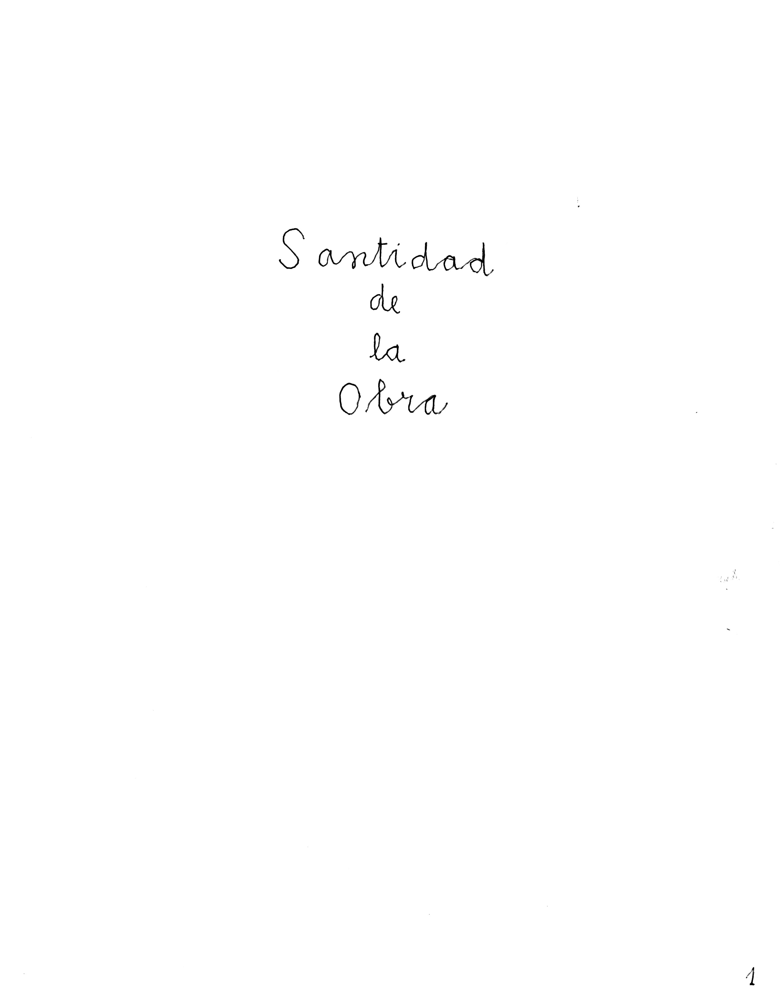
Santidad
de
la
Obra
1
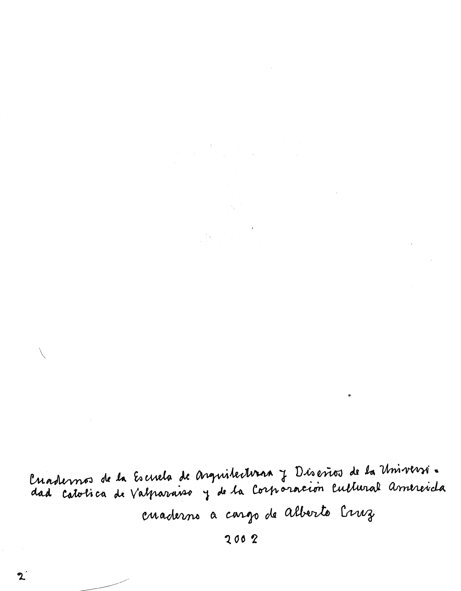
Cuadernos de la Escuela de Arquitectura y Diseños de la Universi -
dad Católica de Valparaíso y de la Corporación Cultural Amereida
cuaderno a cargo de Alberto Cruz
2002
2
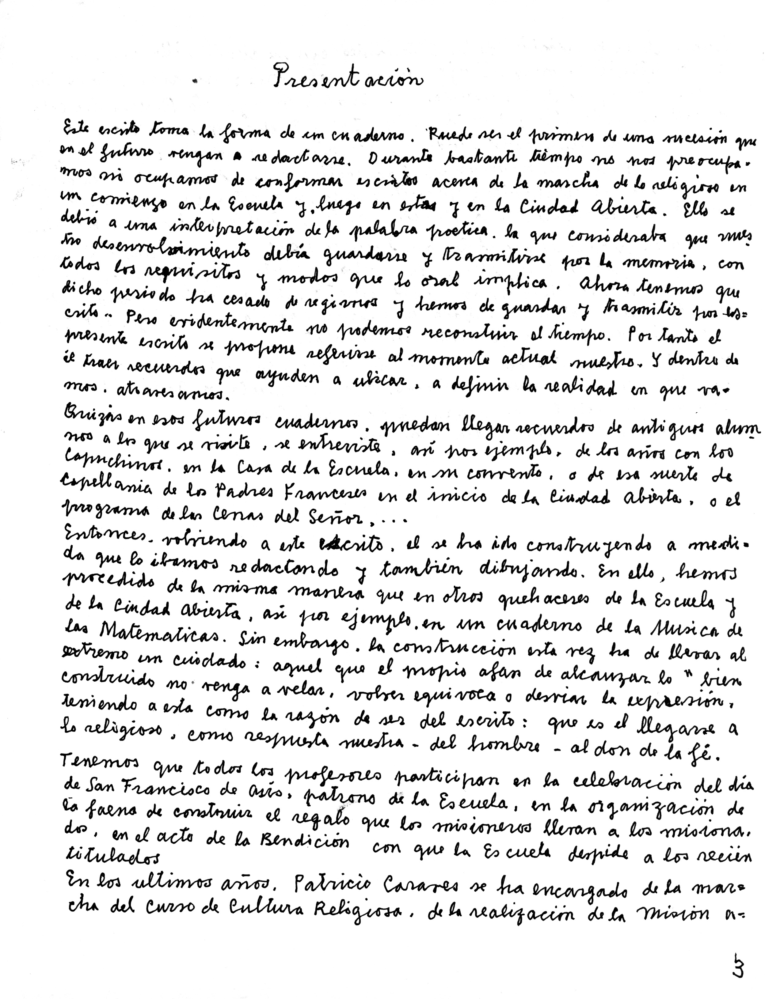
Presentación
Este escrito toma la forma de un cuaderno. Puede ser el primero de una sucesión que
en el futuro vengan a redactarse. Durante bastante tiempo no nos preocupa-
mos ni ocupamos de conformar escritos acerca de la marcha de lo religioso en
un comienzo en la Escuela y, luego en ésta y en la Ciudad Abierta. Ello se
debió a una interpretación de la palabra poética, la que consideraba que nues-
tro desenvolvimiento debía guardarse y transmitirse por la memoria, con
todos los requisitos y modos que lo oral implica. Ahora tenemos que
dicho periodo ha cesado de regirnos y hemos de guardar y trasmitir por es-
crito. Pero evidentemente no podemos reconstruir el tiempo. Por tanto el
presente escrito se propone ceñirse al momento actual nuestro. Y dentro de
él traer recuerdos que ayudan a ubicar, a definir la realidad en que va-
mos, atravesamos.
Quizás en esos futuros cuadernos, puedan llegar recuerdos de antiguos alum-
nos a los que se invite, se entreviste, así por ejemplo, de los años con los
Capuchinos, en la Casa de la Escuela, en su convento, o de esa suerte de
capellanía de los Padres Franceses en el inicio de la Ciudad Abierta, o el
programa de las Cenas del Señor, ...
Entonces, volviendo a este escrito escrito, el se ha ido construyendo a medi-
da que lo íbamos redactando y también dibujando. En ello, hemos
procedido de la misma manera que en otros quehaceres de la Escuela y
de la Ciudad Abierta, así por ejemplo, en un cuaderno de la Música de
las Matemáticas. Sin embargo, la construcción esta vez ha de llevar al
extremo un cuidado : aquel que el propio afan de alcanzar lo “bien
construido” no venga a velar, volver equívoca o desviar la expresión,
teniendo a ésta como la razón de ser del escrito : que es el llegarse a
lo religioso, como respuesta nuestra - del hombre - al don de la fé.
Tenemos que todos los profesores participan en la celebración del día
de San Francisco de Asís, patrono de la Escuela, en la organización de
la faena de construir el regalo que los misioneros llevan a los misiona-
dos, en el acto de la Bendición con que la Escuela despide a los recién
titulados
En los últimos años, Patricio Cáraves se ha encargado de la mar-
cha del curso de Cultura Religiosa, de la realización de la Misión a-
3
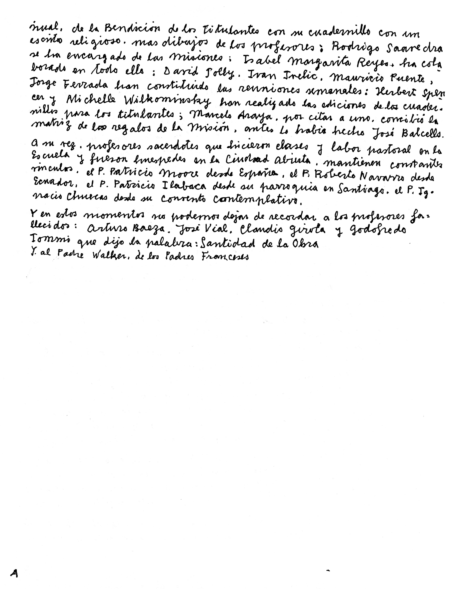
nual, de la Bendición de los titulantes con su cuadernillo con un escrito religioso, mas dibujos de los profesores; Rodrigo Saavedra se ha encargado de las Misiones; Isabel Margarita Reyes, ha cola- borado en todo ello; David Jolly, Iván Ivelic, Mauricio Puente, Jorge Ferrada han constituído las reuniones semanales; Herbert Spen- cer y Michelle Wilkomirsky han realizado las ediciones de los cuader- nillos para los titulantes; Marcelo Araya, por citar a uno, concibió la matriz de los regalos de la Misión, antes lo había hecho José Balcells. A su vez, profesores sacerdotes que hicieron clases y labor pastoral en la Escuela y fueron huespedes en la Ciudad Abierta, mantienen constantes vínculos, el P. Patricio Moore desde España, el P. Roberto Navarro desde Ecuador, el P. Patricio Ilabaca desde su parroquia en Santiago. el P. Ig- nacio Chuecas desde su convento contemplativo. Y en estos momentos no podemos dejar de recordar a los profesores fa- llecidos : Arturo Baeza. José Vial. Claudio Girola y Godofredo Iommi que dijo la palabra : Santidad de la Obra Y, al Padre Walker, de los Padres Franceses 4
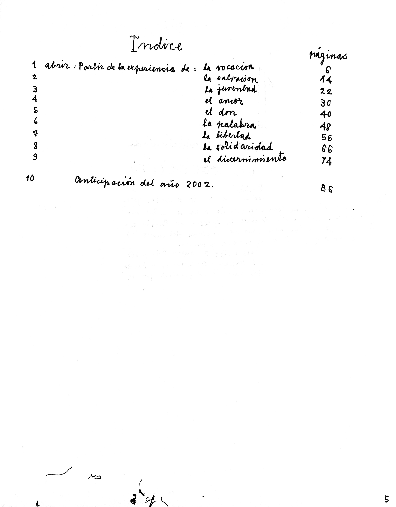
Indice
páginas
1 abrir : Partir de la experiencia de : la vocacion 6
2 la salvacion 14
3 la juventud 22
4 el amor 30
5 el don 40
6 la palabra 48
7 la libertad 56
8 la solidaridad 66
9 el discernimiento 74
10 Anticipación del año 2002. 86
5
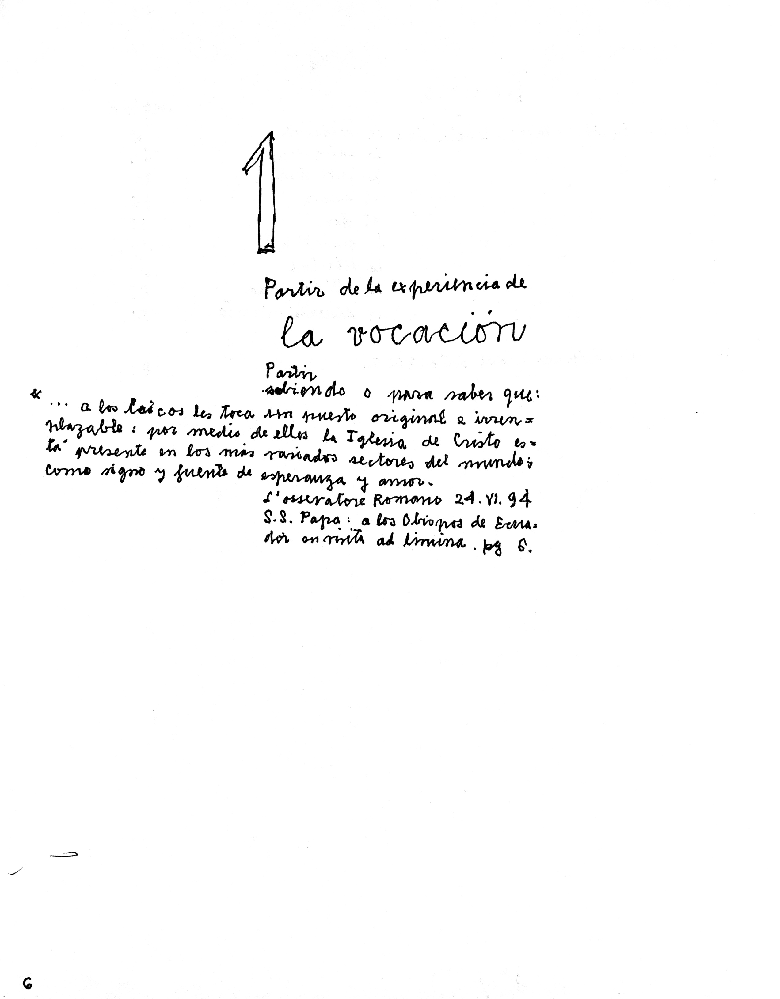
1
Partir de la experiencia de
la vocación
Partir
sabiendo o para saber que:
* ... a los laicos les toca un puesto original e irrem-
plazable : por medio de ellos la Iglesia de Cristo es-
tá presente en los más variados sectores del mundo;
como signo y fuente de esperanza y amor.
L'osservatore Romano 24.VI.94
S.S. Papa : a los Obispos de Ecua-
dor en visita ad limina. pg 6.
6
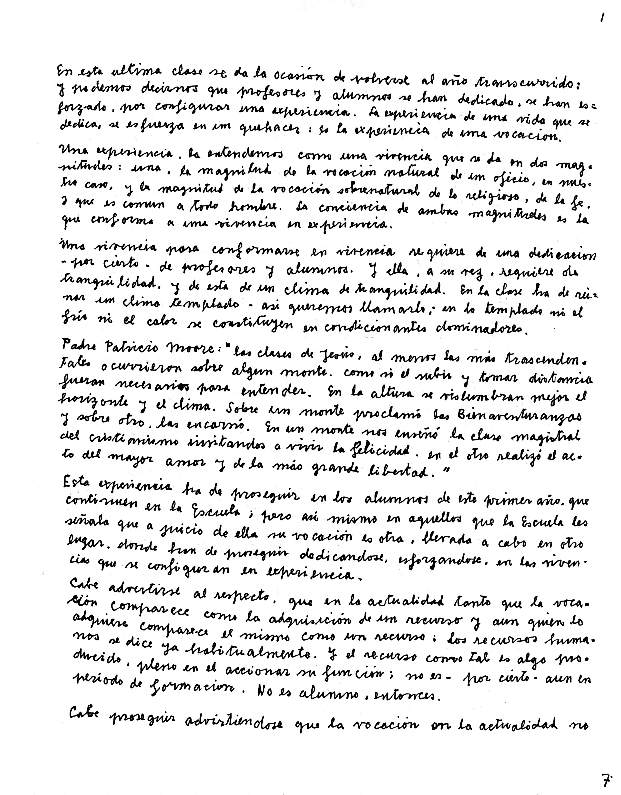
I
En esta última clase se da la ocasión de volverse al año transcurrido;
y podemos decirnos que profesores y alumnos se han dedicado, se han es-
forzado, por configurar una experiencia. La experiencia de una vida que se
dedica, se esfuerza en un quehacer; es la experiencia de una vocación.
Una experiencia, la entendemos como una vivencia que se da en dos mag-
nitudes : una, la magnitud de la vocación natural de un oficio, en nues-
tro caso, y la magnitud de la vocación sobrenatural de lo religioso, de la fe,
y que es comun a todo hombre. La conciencia de ambas magnitudes es la
que conforma a una vivencia en experiencia.
Una vivencia para conformarse en vivencia requiere de una dedicación
- por cierto - de profesores y alumnos. Y ella, a su vez, requiere de
tranquilidad. y de ésta de un clima de tranquilidad. En la clase ha de rei-
nar un clima templado - así queremos llamarlo; en lo templado ni el
frío ni el calor se constituyen en condicionantes dominadores.
Padre Patricio Moore: “las clases de Jesús, al menos las más trascenden-
tales ocurrieron sobre algun monte. como si el subir y tomar distancia
fueran necesarios para entender. En la altura se vislumbran mejor el
horizonte y el clima. Sobre un monte proclamó las Bienaventuranzas
y sobre otro, las encarnó. En un monte nos enseñó la clase magistral
del cristianismo invitandonos a vivir la felicidad. en el otro realizó el ac-
to del mayor amor y de la más grande libertad.”
Esta experiencia ha de proseguir en los alumnos de este primer año, que
continúen en la Escuela; pero así mismo en aquellos que la Escuela les
señala que a juicio de ella su vocación es otra, llevada a cabo en otro
lugar. donde han de proseguir dedicandose, esforzandose, en las viven-
cias que se configuran en experiencia.
Cabe advertirse al respecto, que en la actualidad tanto que la voca-
ción comparece como la adquisición de un recurso y aun quien lo
adquiere comparece el mismo como un recurso; los recursos huma-
nos se dice ya habitualmente. Y el recurso como tal es algo pro-
ducido, pleno en el accionar su función; no es - por cierto - aun en
periodo de formación. No es alumno, entonces.
Cabe proseguir advirtiendose que la vocación en la actualidad no
7
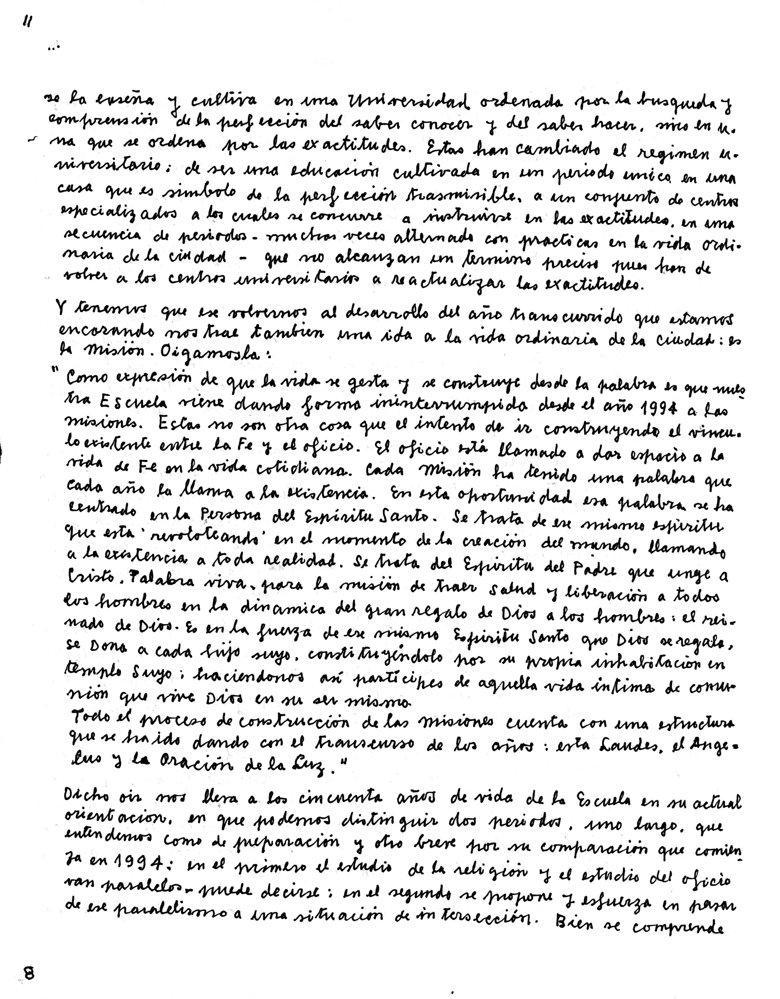
II ... se la enseña y cultiva en una Universidad ordenada por la busqueda y comprensión de la perfección del saber conocer y del saber hacer, sino en u- na que se ordena por las exactitudes. Estas han cambiado el regimen u- niversitario : de ser una educación cultivada en un periodo unico en una casa que es símbolo de la perfección transmisible, a un conjunto de centros especializados a los cuales se concurre a instruirse en las exactitudes, en una secuencia de periodos - muchas veces alternada con practicas en la vida ordi- naria de la ciudad - que no alcanzan un termino preciso pues han de volver a los centros universitarios a reactualizar las exactitudes. Y tenemos que ese volvernos al desarrollo del año transcurrido que estamos encarando nos trae tambien una ida a la vida ordinaria de la ciudad : es la Misión. Oigamosla: “Como expresión de que la vida se gesta y se construye desde la palabra es que nues- tra Escuela viene dando forma ininterrumpida desde el año 1994 a las misiones. Estas no son otra cosa que el intento de ir construyendo el víncu- lo existente entre la Fe y el oficio. El oficio está llamado a dar espacio a la vida de Fe en la vida cotidiana. Cada Misión ha tenido una palabra que cada año la llama a la existencia. En esta oportunidad esa palabra se ha centrado en la Persona del Espíritu Santo. Se trata de ese mismo espíritu que está “revoloteando” en el momento de la creación del mundo, llamando a la existencia a toda realidad. Se trata del Espíritu del Padre que unge a Cristo, Palabra viva, para la misión de traer salud y liberación a todos los hombres en la dinamica del gran regalo de Dios a los hombres : el rei- nado de Dios. Es en la fuerza de ese mismo Espíritu Santo que Dios se regala, se Dona a cada hijo suyo, constituyéndolo por su propia inhabitación en templo Suyo; haciendonos así partícipes de aquella vida íntima de comu- nión que vive Dios en su ser mismo Todo el proceso de construcción de las misiones cuenta con una estructura que se ha ido dando en el transcurso de los años : esta Laudes, el Ange- lus y la Oración de la Luz.” Dicho oír nos lleva a los cincuenta años de vida de la Escuela en su actual orientación, en que podemos distinguir dos periodos, uno largo, que entendemos como de preparación y otro breve por su comparación que comien- za en 1994; en el primero el estudio de la religión y el estudio del oficio van paralelos - puede decirse; en el segundo se propone y esfuerza en pasar de ese paralelismo a una situación de intersección. Bien se comprende 8
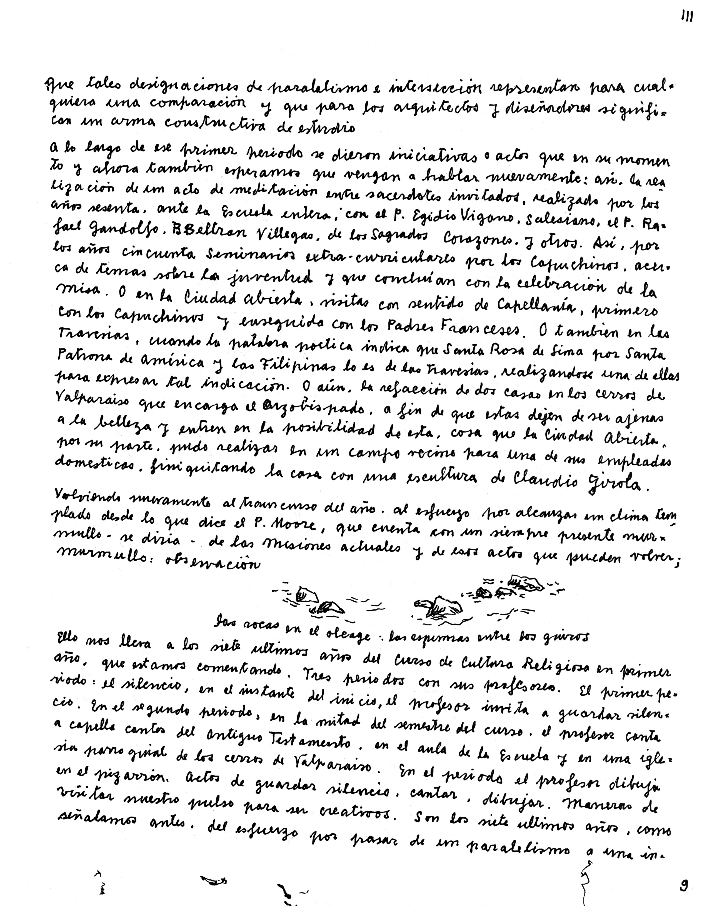
III
que tales designaciones de paralelismo e intersección representan para cual-
quiera una comparación y que para los arquitectos y diseñadores signifi-
can un arma constructiva de estudio
A lo largo de ese primer periodo se dieron iniciativas o actos que en su momen-
to y ahora también esperamos que vengan a hablar nuevamente; así, la rea-
lización de un acto de meditación entre sacerdotes invitados, realizado por los
años sesenta, ante la Escuela entera; con el P. Egidio Vigano, Salesiano, el P. Ra-
fael Gandolfo. P. Beltran Villegas, de los Sagrados Corazones; y otros. Así, por
los años cincuenta, seminarios extra-curriculares por los Capuchinos, acer-
ca de temas sobre la juventud y que concluían con la celebración de la
Misa. O en la Ciudad Abierta, visitas con sentido de Capellanía, primero
con los Capuchinos y enseguida con los Padres Franceses. O también en las
Travesias, cuando la palabra poética indica que Santa Rosa de Lima por Santa
Patrona de América y las Filipinas lo es de las Travesias, realizandose una de ellas
para expresar tal indicación. O aún, la refacción de dos casas en los cerros de
Valparaíso que encarga el Arzobispado, a fin de que éstas dejen de ser ajenas
a la belleza y entren en la posibilidad de ésta, cosa que la Ciudad Abierta,
por su parte, pudo realizar en un campo vecino para una de sus empleadas
domesticas, finiquitando la casa con una escultura de Claudio Girola.
Volviendo nuevamente al transcurso del año, al esfuerzo por alcanzar un clima tem-
plado desde lo que dice el P. Moore, que cuenta con un siempre presente mur-
mullo - se diría - de las Misiones actuales y de esos actos que pueden volver;
Murmullos: observación
Dos rocas en el oleaje : las espumas entre los giros
Ello nos lleva a los siete ultimos años del curso de Cultura Religiosa en primer
año, que estamos comentando. Tres periodos con sus profesores. El primer pe-
riodo : el silencio, en el instante del inicio, el profesor invita a guardar silen-
cio. En el segundo periodo, en la mitad del semestre del curso, el profesor canta
a capella cantos del Antiguo Testamento, en el aula de la Escuela y en una igle-
sia parroquial de los cerros de Valparaiso. En el periodo el profesor dibuja
en el pizarrón. Actos de guardar silencio, cantar, dibujar. Maneras de
visitar nuestro pulso para ser creativos. Son los siete ultimos años, como
señalamos antes, del esfuerzo por pasar de un paralelismo a una in-
9
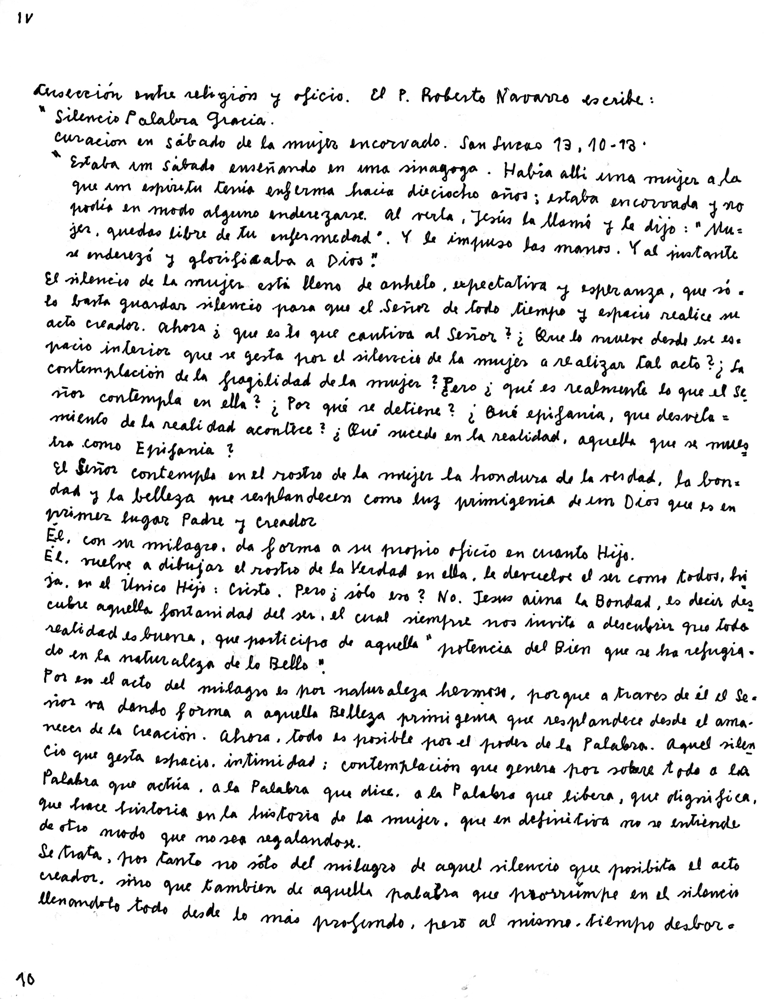
IV tersección entre religión y oficio. El P. Roberto Navarro escribe: “Silencio Palabra Gracia. Curación en sábado de la mujer encorvada. San Lucas 13, 10-13. “Estaba un sábado enseñando en una sinagoga. Había allí una mujer a la que un espíritu tenía enferma hacía dieciocho años; estaba encorvada y no podía en modo alguno enderezarse. al verla, Jesús la llamó y le dijo : “Mu- jer, quedas libre de tu enfermedad”. Y le impuso las manos. Y al instante se enderezó y glorificaba a Dios”. El silencio de la mujer está lleno de anhelo, expectativa y esperanza, que só- lo basta guardar silencio para que el Señor de todo tiempo y espacio realice su acto creador. Ahora ¿que es lo que cautiva al Señor? ¿Que lo mueve desde ese es- pacio interior que se gesta por el silencio de la mujer a realizar tal acto? ¿La contemplación de la fragilidad de la mujer? Pero ¿qué es realmente lo que el Se- ñor contempla en ella? ¿Por qué se detiene? ¿Qué epifanía, que desvela- miento de la realidad acontece? ¿Qué sucede en la realidad, aquello que se mues- tra como Epifanía? El Señor contempla en el rostro de la mujer la hondura de la verdad, la bon- dad y la belleza que resplandecen como luz primigenia de un Dios que es en primer lugar Padre y Creador Él, con su milagro, da forma a su propio oficio en cuanto Hijo. Él, vuelve a dibujar el rostro de la Verdad en ella, le devuelve el ser como todos, hi- ja, en el Único Hijo : Cristo. Pero ¿sólo eso? No. Jesús anima la Bondad, es decir des- cubre aquella fontanidad del ser, el cual siempre nos invita a descubrir que toda realidad es buena, que participa de aquella “potencia del Bien que se ha refugia- do en la naturaleza de lo Bello”. Por eso el acto del milagro es por naturaleza hermoso, porque a través de él el Se- ñor va dando forma a aquella Belleza primigenia que resplandece desde el ama- necer de la Creación. Ahora, todo es posible por el poder de la Palabra. Aquel silen- cio que gesta espacio, intimidad; contemplación que genera por sobre todo a la Palabra que actúa, a la Palabra que dice, a la Palabra que libera, que dignifica, que hace historia en la historia de la mujer, que en definitiva no se entiende de otro modo que no sea regalandose. Se trata, por tanto no sólo del milagro de aquel silencio que posibilita el acto creador, sino que tambien de aquella Palabra que prorrumpe en el silencio llenandolo todo desde lo más profundo, pero al mismo tiempo desbor- 10
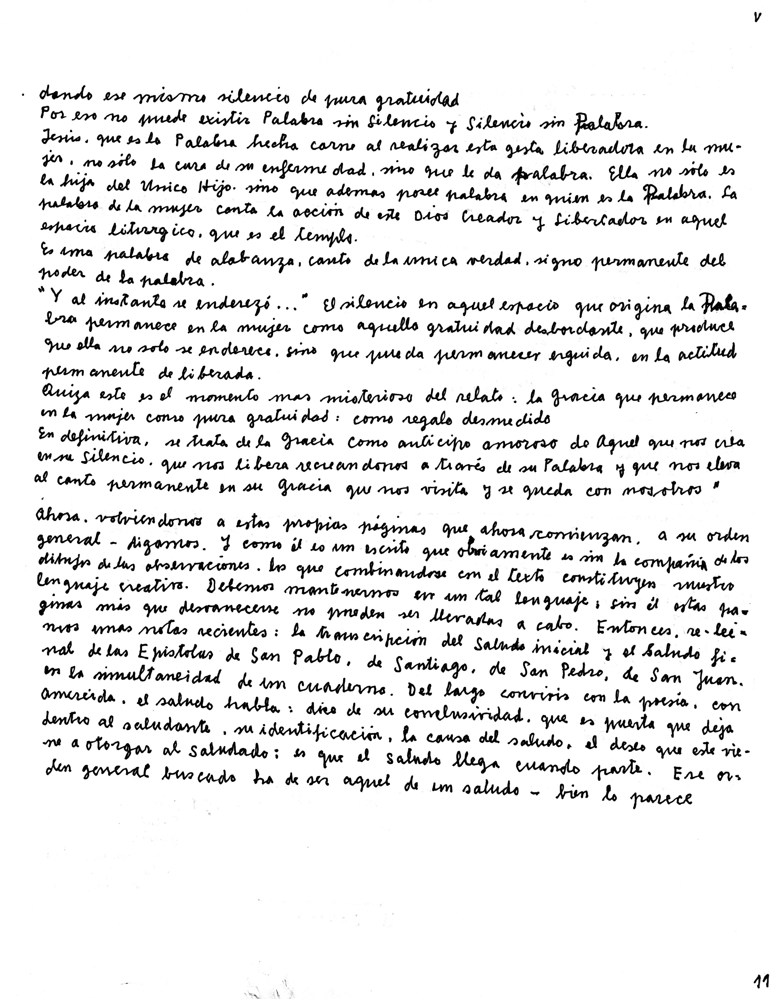
V
dando ese mismo silencio de pura gratuidad
Por eso no puede existir Palabra sin Silencio y Silencio sin Palabra.
Jesús, que es la Palabra hecha carne al realizar esta gesta liberadora en la mu-
jer, no sólo la cura de su enfermedad, sino que le da palabra. Ella no sólo es
la hija del Unico Hijo, sino que ademas posee palabra en quien es la Palabra. La
palabra de la mujer canta la acción de este Dios Creador y Liberador en aquel
espacio liturgico, que es el templo.
Es una palabra de alabanza, canto de la unica verdad, signo permanente del
poder de la palabra.
“Y al instante se enderezó...” El silencio es aquel espacio que origina la Pala-
bra permanece en la mujer como aquella gratuidad desbordante, que produce
que ella no solo se enderece, sino que pueda permanecer erguida, en la actitud
permanente de liberada.
Quizá este es el momento mas misterioso del relato : la Gracia que permanece
en la mujer como pura gratuidad : como regalo desmedido
En definitiva, se trata de la Gracia como anticipo amoroso de Aquel que nos crea
en su Silencio, que nos libera recreandonos a través de su Palabra y que nos lleva
al canto permanente en su Gracia que nos visita y se queda con nosotros”
Ahora, volviendonos a estas propias páginas que ahora comienzan, a su orden
general - digamos. Y como él es un escrito que obviamente sin la compañía de los
dibujos de las observaciones, los que combinandose con el texto constituyen nuestro
lenguaje creativo. Debemos mantenernos en un tal lenguaje; sin él estas pa-
ginas más que desmerecerse no pueden ser llevadas a cabo. Entonces, re-lee-
mos unas notas recientes : la transcripción del Saludo inicial y el Saludo fi-
nal de las Epistolas de San Pablo, de Santiago, de San Pedro, de San Juan.
en la simultaneidad de un cuaderno. Del largo convivir con la poesía, con
Amereida, el saludo habla : dice de su convivialidad, que es puerta que deja
dentro al saludante, su identificación, la causa del saludo, el deseo que éste vie-
ne a otorgar al saludado; es que el saludo llega cuando parte. Ese or-
den general buscado ha de ser aquel de un saludo - bien lo parece
11
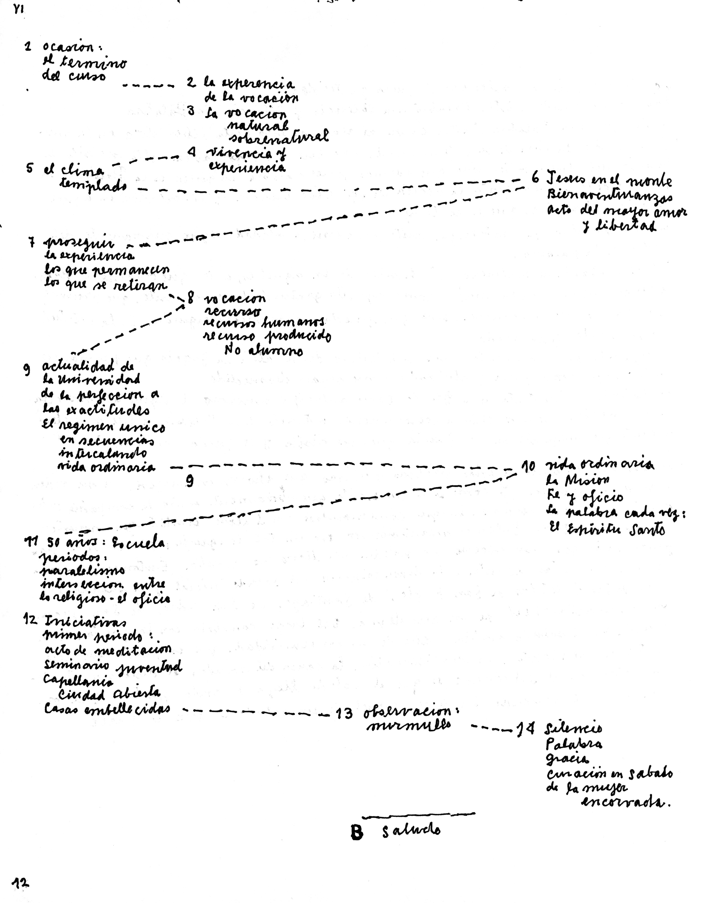
VI
1 ocasión:
el termino
del curso ------ 2 la experiencia
de la vocación
3 la vocacion
natural
sobrenatural
4 vivencia y
5 el clima ------ experiencia
templado -------------------------------------- 6 Jesús en el monte
Bienaventuranzas
acto del mayor amor
y libertad
7 proseguir ---------------------------------------
la experiencia
los que permanecen
los que se retiran
-- 8 vocación
recurso
recursos humanos
recurso producido
No alumno
9 actualidad de
la Universidad
de la perfeccion a
las exactitudes
El regimen unico
en secuencias
intercalando
vida ordinaria -------------------------------- 10 vida ordinaria
9 la Misión
Fe y oficio
la palabra cada vez:
El Espíritu Santo
11 50 años : Escuela -------------------------------
periodos:
paralelismo
interseccion entre
lo religioso - el oficio
12 Iniciativas
primer periodo:
acto de meditacion
Seminario juventud
Capellanía
Ciudad Abierta
Casas embellecidas ----------- 13 observacion:
murmullo ----- 14 Silencio
Palabra
Gracia
Curación en sabado
de la mujer
encorvada.
____________
B Saludo
12
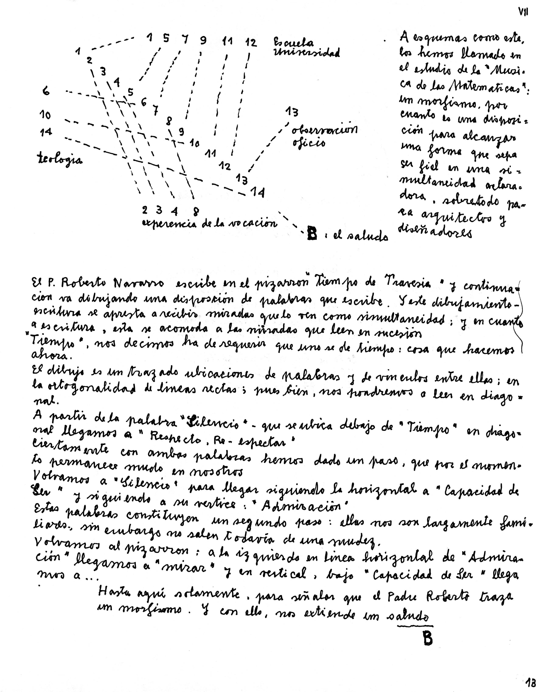
VII
1 ------- 1 5 7 9 11 12 Escuela A esquemas como este,
2 Universidad los hemos llamado en
3 el estudio de la “Musi-
4 ca de las Matemáticas”:
6 5 un morfismo, por
6 cuanto es una disposi-
10 7 13 ción para alcanzar
8 observación una forma que sepa
14 9 oficio ser fiel en una si-
10 multaneidad aclara-
teologia 11 dora, sobretodo pa-
12 ra arquitectos y
13 diseñadores
14
2 3 4 8
experiencia de la vocación
B : el saludo
El P. Roberto Navarro escribe en el pizarrón “Tiempo de Travesia” y continua-
ción va dibujando una disposición de palabras que escribe. Y este dibujamiento-
escritura se apresta a recibir miradas que lo ven como simultaneidad; y en cuanto
a escritura, ésta se acomoda a las miradas que leen en sucesión
“Tiempo”, nos decimos ha de requerir que uno se de tiempo : cosa que hacemos
ahora.
El dibujo es un trazado ubicaciones de palabras y de vinculos entre ellas; en
la ortogonalidad de líneas rectas; pues bien, nos pondremos a leer en diago-
nal.
A partir de la palabra “Silencio” - que se ubica debajo de “Tiempo” en diago-
nal llegamos a “Respeto, Re-spectar”
Ciertamente con ambas palabras hemos dado un paso, que por el momen-
to permanece mudo en nosotros
Volvamos a “Silencio” para llegar siguiendo la horizontal a “Capacidad de
Ser” y siguiendo a su vertice : “Admiración”
Estas palabras constituyen un segundo paso : ellas nos son largamente fami-
liares, sin embargo no salen todavía de una mudez.
Volvamos al pizarron; a la izquierda en linea horizontal de “Admira-
ción” llegamos a “Amistad” y en vertical, bajo “Capacidad de Ser” llega-
mos a ...
Hasta aquí solamente, para señalar que el Padre Roberto traza
un morfismo. Y con ello, nos extiende un saludo
______
B
13
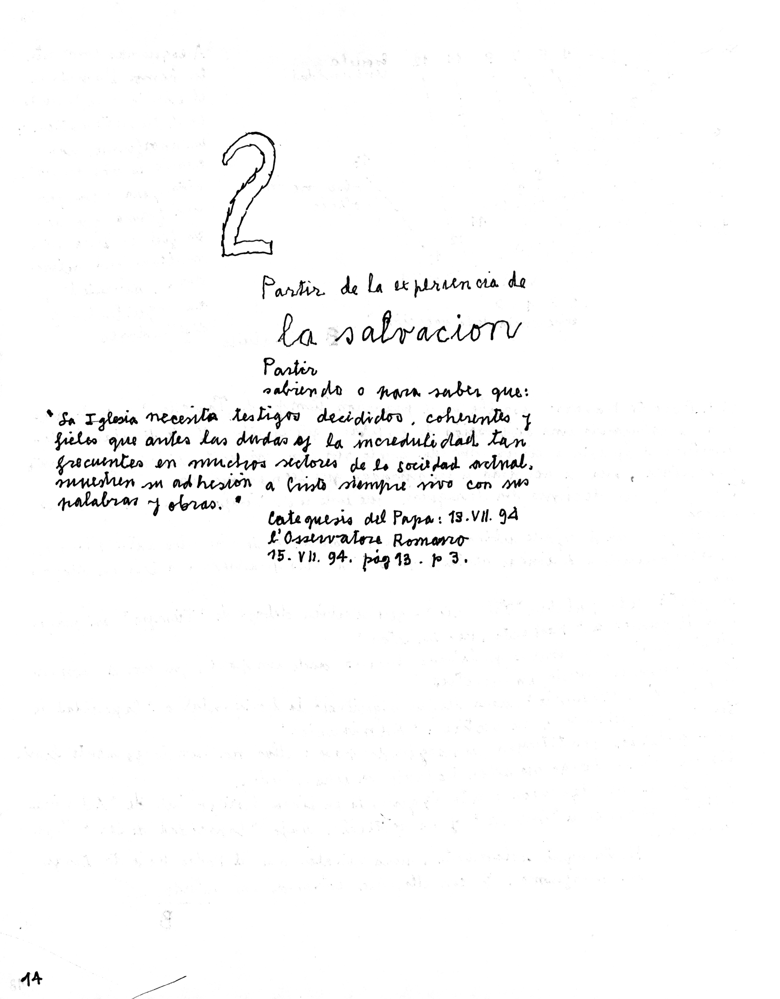
2
Partir de la experiencia de
la salvacion
Partir
sabiendo o para saber que:
“La Iglesia necesita testigos decididos, coherentes y
fieles que antes las dudas y la incredulidad tan
frecuentes en muchos sectores de la sociedad actual,
muestren su adhesión a Cristo siempre vivo con sus
palabras y obras.”
Catequesis del Papa : 13.VII.94
L'Osservatore Romano
15.VII.94. pag 13. p 3.
14
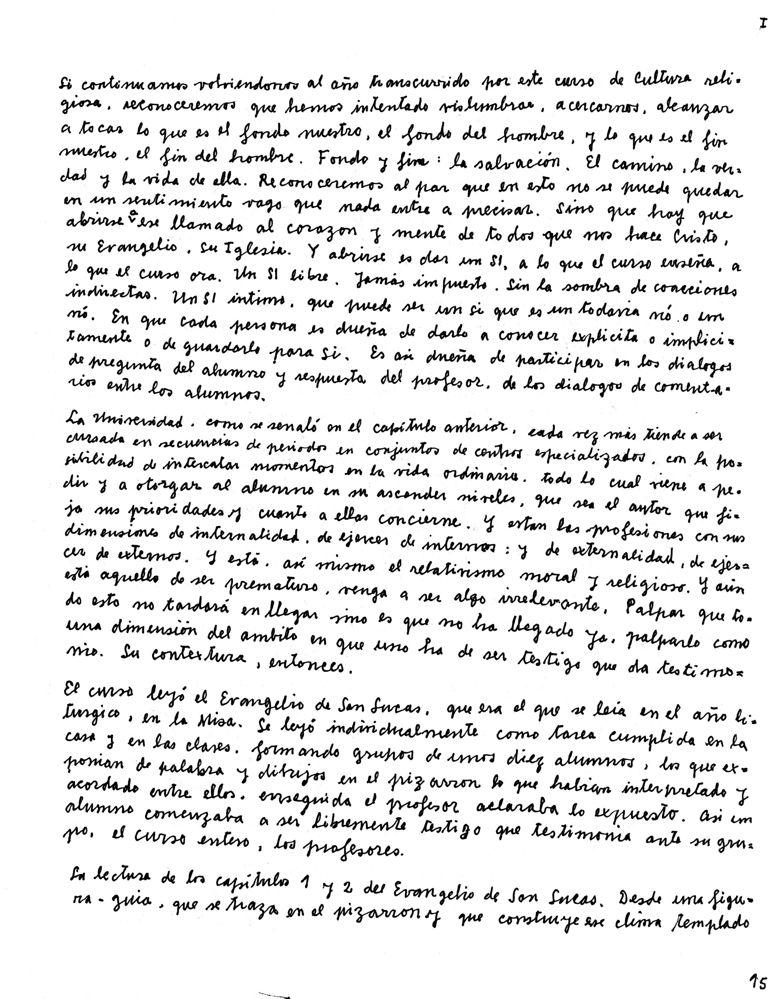
I
Si continuamos volviendonos al año transcurrido por este curso de Cultura reli-
giosa, reconocemos que hemos intentado vislumbrar, acercarnos, alcanzar
a tocar lo que es el fondo nuestro, el fondo del hombre, y lo que es el fin
nuestro, el fin del hombre. Fondo y fin : la salvación. El camino, la ver-
dad y la vida de ella. Reconocemos al par que en esto no se puede quedar
en un sentimiento vago que nada entre a precisar. Sino que hay que
abrirse a ese llamado al corazon y mente de lo dos que nos hace Cristo,
su Evangelio, su Iglesia. Y abrirse es dar un SI, a lo que el curso enseña, a
lo que el curso ora. Un SI libre. Jamás impuesto. Sin la sombra de coacciones
indirectas. Un SI íntimo, que puede ser un si que es un todavia nó, o un
nó. En que cada persona es dueña de darlo a conocer explicita o implici-
tamente o de guardarlo para si. Es así dueña de participar en los dialogos
de pregunta del alumno y respuesta del profesor, de los dialogos de conversa-
cion entre los alumnos.
La Universidad, como se señaló en el capítulo anterior, cada vez más tiende a ser
cursada en secuencias de periodos en conjuntos de centros especializados, con la po-
sibilidad de intercalar momentos en la vida ordinaria. todo lo cual viene a pe-
dir y a otorgar al alumno en su ascender niveles, que sea el autor que fi-
ja sus prioridades y cuanto a ellas concierne. Y estan las profesiones con sus
dimensiones de internalidad, de ejerces de internos; y de externalidad, de ejer-
ces de externos. Y está, así mismo el relativismo moral y religioso. Y aún
está aquello de ser prematuro, venga a ser algo irrelevante. Palpar que to-
do esto no tardará en llegar sino es que no ha llegado ya, palparlo como
una dimensión del ambito en que uno ha de ser testigo que da testimo-
nio. Su contextura, entonces.
El curso leyó el Evangelio de San Lucas, que era el que se leía en el año li-
turgico, en la Misa. Se leyó individualmente como tarea cumplida en la
casa y en las clases, formando grupos de unos diez alumnos, los que ex-
ponian de palabra y dibujos en el pizarron lo que habían interpretado y
acordado entre ellos. enseguida el profesor aclaraba lo expuesto. Asi un
alumno comenzaba a ser libremente testigo que testimonia ante su gru-
po, el curso entero, los profesores.
La lectura de los capítulos 1 y 2 del Evangelio de San Lucas. Desde una figu-
ra - guia, que se traza en el pizarron y que construye ese clima templado
15
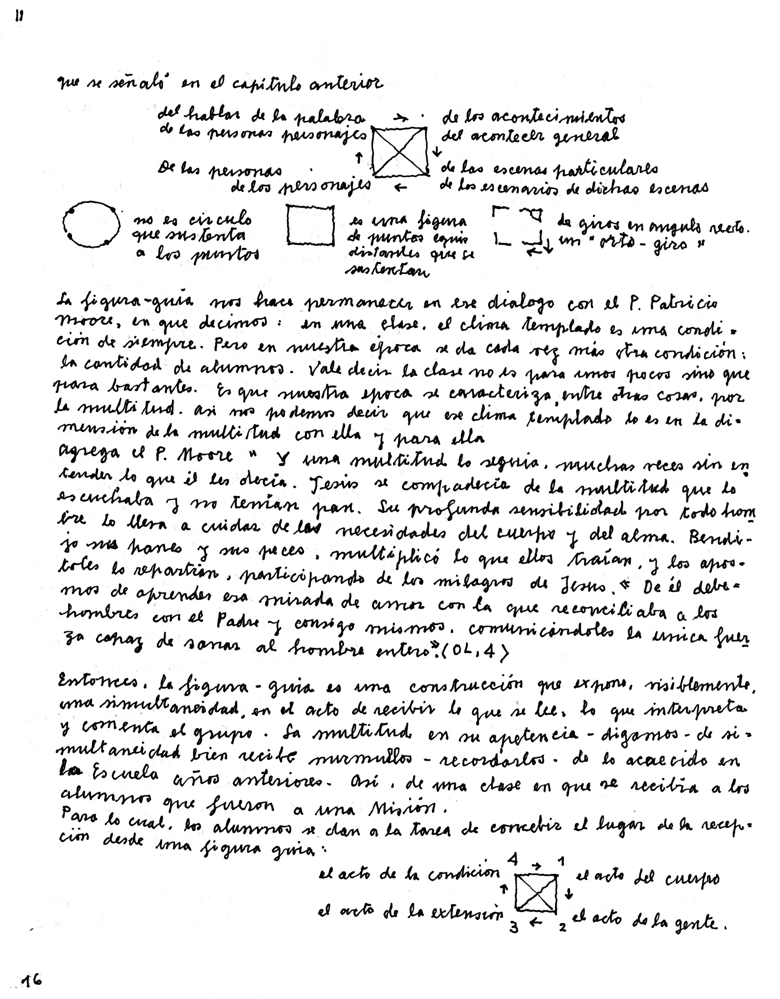
II
que se señaló en el capítulo anterior
del hablar de la palabra → de los acontecimientos
de las personas personajes del acontecer general
↑ ┌───┐ ↓
De las personas │ ╳ │ de las escenas particulares
de los personajes └───┘ de los escenarios de dichas escenas
←
no es circulo □ es una figura ┌ ┐ de giros en angulo recto.
que sustenta de puntos equi └ ┘ un “orto - giro”
a los puntos distantes que se
sustentan
La figura-guia nos hace permanecer en ese diálogo con el P. Patricio
Moore, en que decimos : en una clase, el clima templado es una condi-
ción de siempre. Pero en nuestra época se da cada vez más otra condición:
la cantidad de alumnos. Vale decir la clase no es para unos pocos sino que
para bastantes. Es que nuestra época se caracteriza, entre otras cosas, por
la multitud. Así nos podemos decir que ese clima templado lo es en la di-
mensión de la multitud con ella y para ella
Agrega el P. Moore “Y una multitud lo seguía, muchas veces sin en-
tender lo que él les decía. Jesús se compadecía de la multitud que lo
escuchaba y no tenían pan. Su profunda sensibilidad por todo hom-
bre lo lleva a cuidar de las necesidades del cuerpo y del alma. Bendi-
jo unos panes y unos peces, multiplicó lo que ellos traían, y los apos-
toles lo repartían, participando de los milagros de Jesús. De él debe-
mos de aprender esa mirada de amor con la que reconciliaba a los
hombres con el Padre y consigo mismos, comunicándoles la unica fuer-
za capaz de sanar al hombre entero”.(OL,4)
Entonces, la figura-guia es una construcción que expone, visiblemente,
una simultaneidad, en el acto de recibir lo que se lee, lo que interpreta
y consensa el grupo. La multitud en su apetencia - digamos - de si-
multaneidad bien recibe murmullos - recordarselos - de lo acaecido en
la Escuela años anteriores. Así, de una clase en que se recibía a los
alumnos que fueron a una Misión.
Para lo cual, los alumnos se dan a la tarea de concebir el lugar de la recep-
ción desde una figura guia:
4 → 1
el acto de la condición ↑ ┌───┐ el acto del cuerpo
│ ╳ │ ↓
el acto de la extensión └───┘ el acto de la gente.
3 ← 2
16
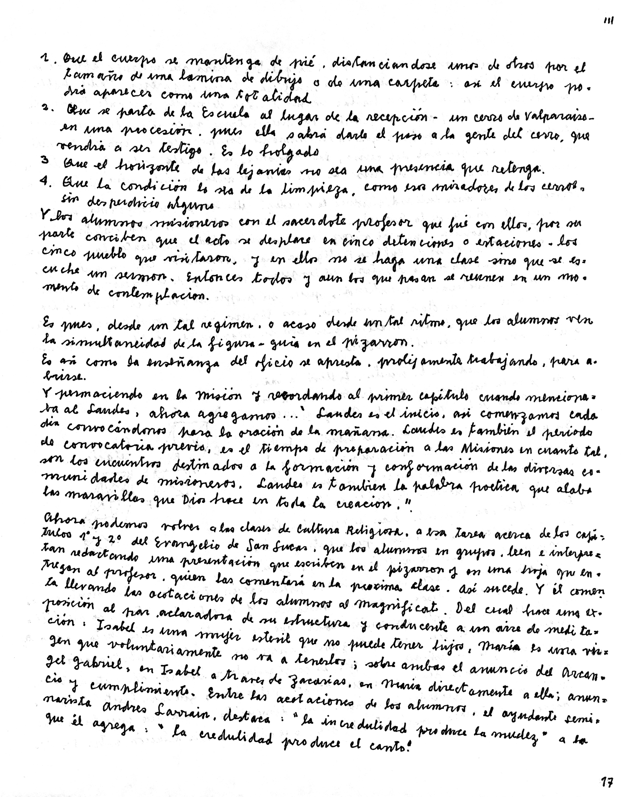
III
1. Que el cuerpo se mantenga de pie, distanciandose unos de otros por el
tamaño de una lamina de dibujo o de una carpeta : así el cuerpo po-
drá aparecer como una totalidad
2. Que se parta de la Escuela al lugar de la recepción - un cerro de Valparaíso -
en una procesión. pues ella sabrá darle el paso a la gente del cerro, que
vendrá a ser testigo. Es lo holgado
3. Que el horizonte de las lejanías no sea una presencia que retenga.
4. Que la condición lo sea de la limpieza, como esos miradores de los cerros,
sin desperdicio alguno
Y los alumnos misioneros con el sacerdote profesor que fué con ellos, por su
parte conciben que el acto se despliegue en cinco detenciones o estaciones - los
cinco pueblos que visitaron, y en ellos no se haga una clase sino que se es-
cuche un sermon. Entonces todos y aun los que pasan se reunen en un mo-
mento de contemplacion.
Es pues, desde un tal regimen, o acaso desde un tal ritmo, que los alumnos ven
la simultaneidad de la figura-guia en el pizarron.
Es así como la enseñanza del oficio se apresta, previamente trabajando, para a-
brirse.
Y permaneciendo en la Misión y recordando al primer capítulo cuando menciona-
ba al Laudes, ahora agregamos ... Laudes es el inicio, así comenzamos cada
día convocándonos para la oración de la mañana. Laudes es tambien el periodo
de convocatoria previo, es el tiempo de preparación a las Misiones en cuanto tal,
son los encuentros destinados a la formación y conformación de las diversas co-
munidades de misioneros. Laudes es tambien la palabra poética que alaba
las maravillas que Dios hace en toda la creación”.
Ahora podemos volver a las clases de Cultura Religiosa, a esa tarea acerca de los capí-
tulos 1º y 2º del Evangelio de San Lucas, que los alumnos en grupos, leen e interpre-
tan redactando una presentación que escriben en el pizarron y en una hoja que en-
tregan al profesor, quien las comentará en la próxima clase. Así sucede. Y él comen-
ta leyendo las acotaciones de los alumnos al Magnificat. Del cual hace una ex-
posición al par aclaradora de su estructura y conducente a un aire de medita-
ción : Isabel es una mujer esteril que no puede tener hijos, María es una vir-
gen que voluntariamente no va a tenerlos; sobre ambas el anuncio del Arcan-
gel Gabriel, en Isabel a traves de Zacarias, en María directamente a ella; anun-
cio y cumplimiento. Entre las acotaciones de los alumnos, el ayudante semi-
narista Andres Larrain, destaca : “la incredulidad produce la mudez” a la
que él agrega : “la credulidad produce el canto”.
17
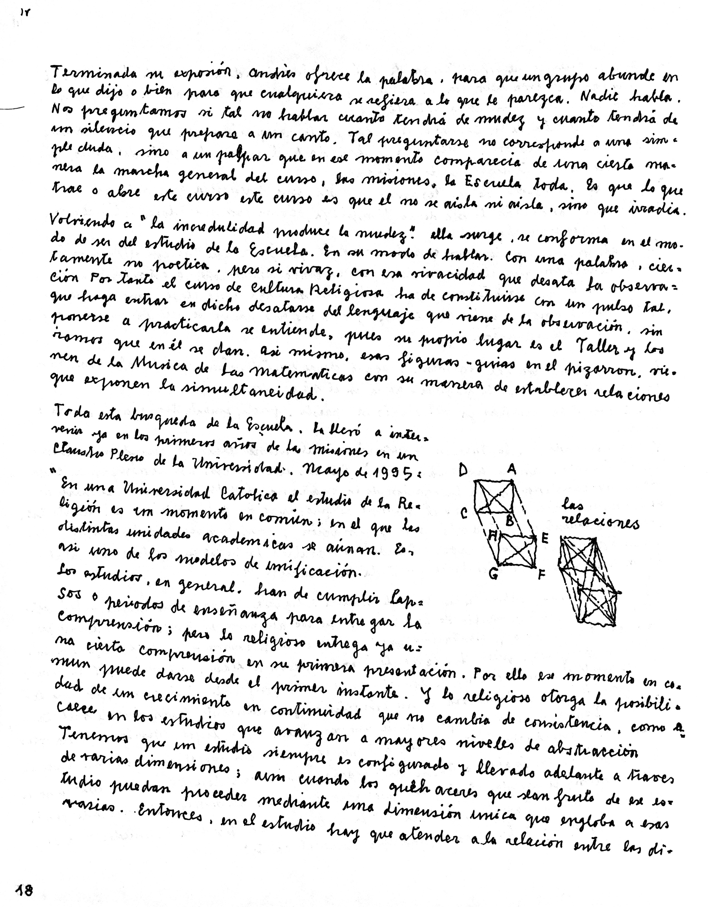
IV Terminada su exposición, Andrés ofrece la palabra, para que un grupo abunde en lo que dijo o bien para que cualquiera se refiera a lo que le parezca. Nadie habla. Nos preguntamos si tal no hablar cuanto tendrá de mudez y cuanto tendrá de un silencio que prepare a un canto. Tal preguntarse no corresponde a una sim- ple duda, sino a un palpar que en ese momento comparecía de una cierta ma- nera la marcha general del curso, las Misiones, la Escuela toda. Es que lo que trae o abre este curso este curso es que él no se aisla ni aisla, sino que irradia. Volviendo a “la incredulidad produce la mudez”. ella surge, se conforma en el mo- do de ser del estudio de la Escuela. En su modo de hablar. Con una palabra, cier- tamente no poética, pero si vivaz, con esa vivacidad que desata la observa- ción Por tanto el curso de Cultura Religiosa ha de constituirse con un pulso tal, que haga entrar en dicho desatarse del lenguaje que viene de la observación, sin ponerse a practicarla se entiende, pues su propio lugar es el Taller y los ramos que en él se dan. así mismo, esas figuras-guias en el pizarron, vie- nen de la Musica de las Matemáticas con su manera de establecer relaciones que exponen la simultaneidad. Toda esta busqueda de la Escuela, la llevó a inter- venir ya en los primeros años de las Misiones en un Claustro Pleno de la Universidad. Mayo de 1995: D A “En una Universidad Católica el estudio de la Re- ligión es un momento en común; en el que las las distintas unidades academicas se aunan. Es, C B relaciones así uno de los modelos de unificación. H E Los estudios, en general, han de cumplir lap- sos o periodos de enseñanza para entregar la G F comprensión; pero lo religioso entrega ya u- na cierta comprensión en su primera presentación. Por ello ese momento en co- mun puede darse desde el primer instante. Y lo religioso otorga la posibili- dad de un crecimiento en continuidad que no cambia de consistencia, como a- caece en los estudios que avanzan a mayores niveles de abstracción Tenemos que un estudio siempre es configurado y llevado adelante a traves de varias dimensiones; aun cuando los quehaceres que sean fruto de ese es- tudio puedan proceder mediante una dimensión unica que engloba a esas varias. Entonces, en el estudio hay que atender a la relación entre las di- 18
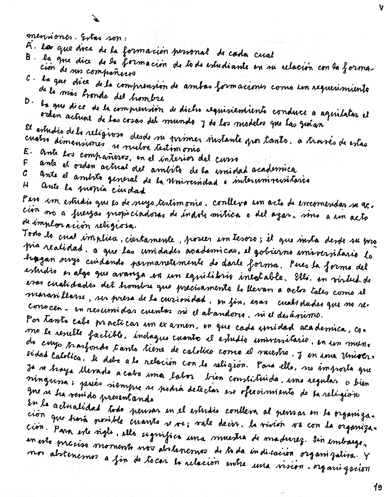
V
mensiones. Estas son:
A. la que dice de la formación personal de cada cual
B. la que dice de la formación de todo estudiante en su relación con la forma-
ción de sus compañeros
C. la que dice de la comprensión de ambas formaciones como un requerimiento
de lo más hondo del hombre
D. la que dice de la comprensión de dicho requerimiento conduce a aquilatar el
orden actual de las cosas del mundo y de los modelos que las guían
El estudio de lo religioso desde su primer instante por tanto, a través de estas
cuatro dimensiones se vuelve testimonio
E. ante los compañeros, en el interior del curso
F ante el orden actual del ambito de la unidad academica
G Ante el ambito general de la Universidad e interuniversitario
H Ante la propia ciudad
Pero un estudio que lo de suyo testimonio, conlleva un acto de encomendar su ac-
ción no a fuerzas propiciadoras de índole mitica o del azar, sino a un acto
de imploración religiosa.
Todo lo cual implica, ciertamente, poseer un tesoro; él que insta desde su pro-
pia realidad, a que las unidades academicas, el gobierno universitario lo
hagan suyo cuidando permanentemente de darle forma. Pues la forma del
estudio es algo que avanza en un equilibrio inestable. Ello, en virtud de
esas cualidades del hombre que precisamente lo llevan a actos tales como el
maravillarse, ser presa de la curiosidad, en fin, esas cualidades que no re-
conocen - en resumidas cuentas ni el abandono, ni el desánimo.
Por tanto cabe practicar un examen, en que cada unidad academica, co-
mo le resulte factible, indague cuanto el estudio universitario, en un mun-
do cuyo trasfondo tanto tiene de catolico como el nuestro, y en una Univer-
sidad Catolica, le debe a la relación con lo religioso. Para ello, no importa que
ya se haya llevado a cabo una labor bien constituida, una regular o bien
ninguna; pues siempre se podrá detectar ese ofrecimiento de la religión
que se ha venido presentando
En la actualidad todo pensar en el estudio conlleva al pensar en la organiza-
ción que hará posible cuanto se ve; vale decir, la visión va con la organiza-
ción. Para este siglo, ello significa una muestra de madurez. Sin embargo,
en este preciso momento nos abstenemos de toda indicación organizativa. Y
nos abstenemos a fin de tocar la relación entre una visión - organización
19
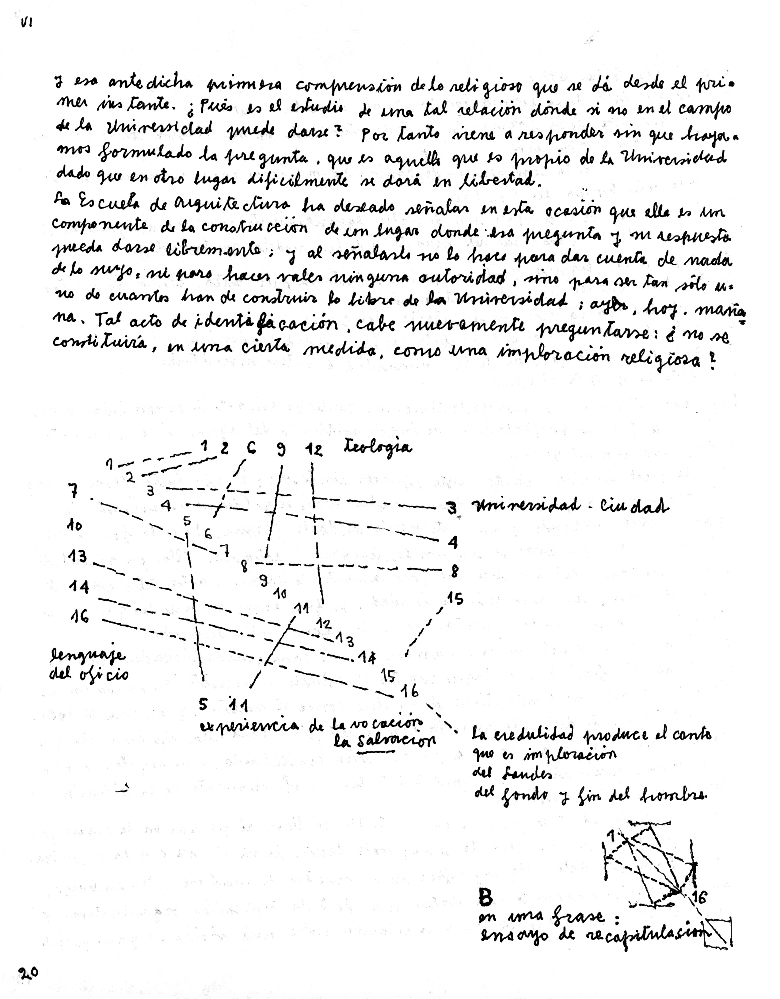
VI
y esa antedicha primera comprensión de lo religioso que se dá desde el pri-
mer instante. ¿Pues es el estudio de una tal relación donde si no en el campo
de la Universidad puede darse? Por tanto viene a responder sin que haya-
mos formulado la pregunta, que es aquello que es propio de la Universidad
dado que en otro lugar dificilmente se dará en libertad.
La Escuela de Arquitectura ha deseado señalar en esta ocasión que ella es un
componente de la construcción de un lugar donde esa pregunta y su respuesta
pueda darse libremente; y al señalarlo no lo hace para dar cuenta de nada
de lo suyo, ni para hacer valer ninguna autoridad, sino para ser tan sólo u-
no de cuantos han de construir lo libre de la Universidad; ayer, hoy, maña-
na. Tal acto de identificación, cabe nuevamente preguntarse: ¿no se
constituirá, en una cierta medida, como una imploración religiosa?
1 2 6 9 12 teologia
1 ----
2 ---
7 3 ----------------------- 3 Universidad - Ciudad
4 --------------------- 4
10 5
6
13 7
8 ------------- 8
14 9
10 15
16 11
12
lenguaje 13
del oficio 14
15
16
5 11
experiencia de la vocación
la salvacion la credulidad produce el canto
____ que es imploracion
del fondo
del fondo y fin del hombre.
1
B 16
en una frase:
ensayo de recapitulación
20
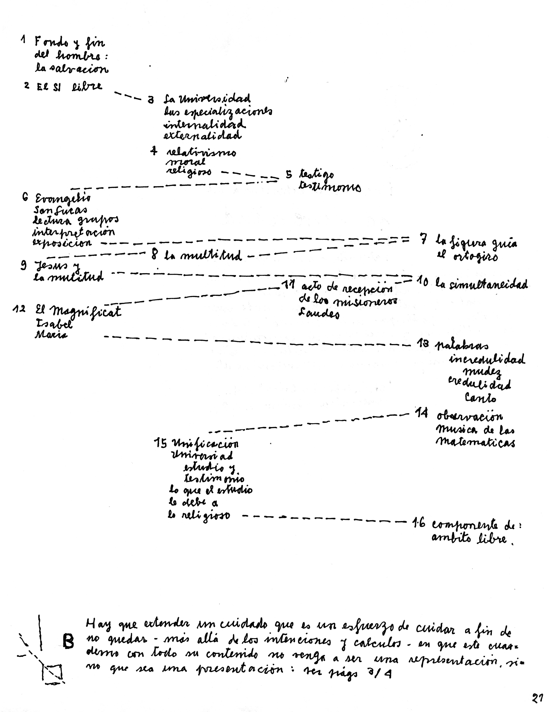
1 Fondo y fin
del hombre:
la salvacion
2 El SI libre
--- 3 La Universidad
las especializaciones
internalidad
externalidad
4 relativismo
moral
religioso -------- 5 testigo
--------------------------------- testimonio
6 Evangelio
San Lucas
lectura grupos
interpretacion
exposicion ------------------------------------------ 7 la figura guia
8 la multitud ------------------------ el ortogiro
9 Jesus y
la multitud ----------------------------------------- 10 la simultaneidad
11 acto de recepción
de los misioneros
12 El Magnificat Laudes
Isabel
María ---------------------------------------------- 13 palabras
incredulidad
mudez
credulidad
Canto
--------------------------------- 14 observación
Musica de las
Matemáticas
15 Unificacion
Universidad
estudio y
testimonio
lo que el estudio
le debe a
lo religioso ------------------- 16 componente de:
ambito libre.
B Hay que extremar un cuidado que es un esfuerzo de cuidar a fin de
no quedar - más allá de los intenciones y calculos - en que este cua-
derno con todo su contenido no venga a ser una representación, si-
no que sea una presentación : ver pags 3/4
21
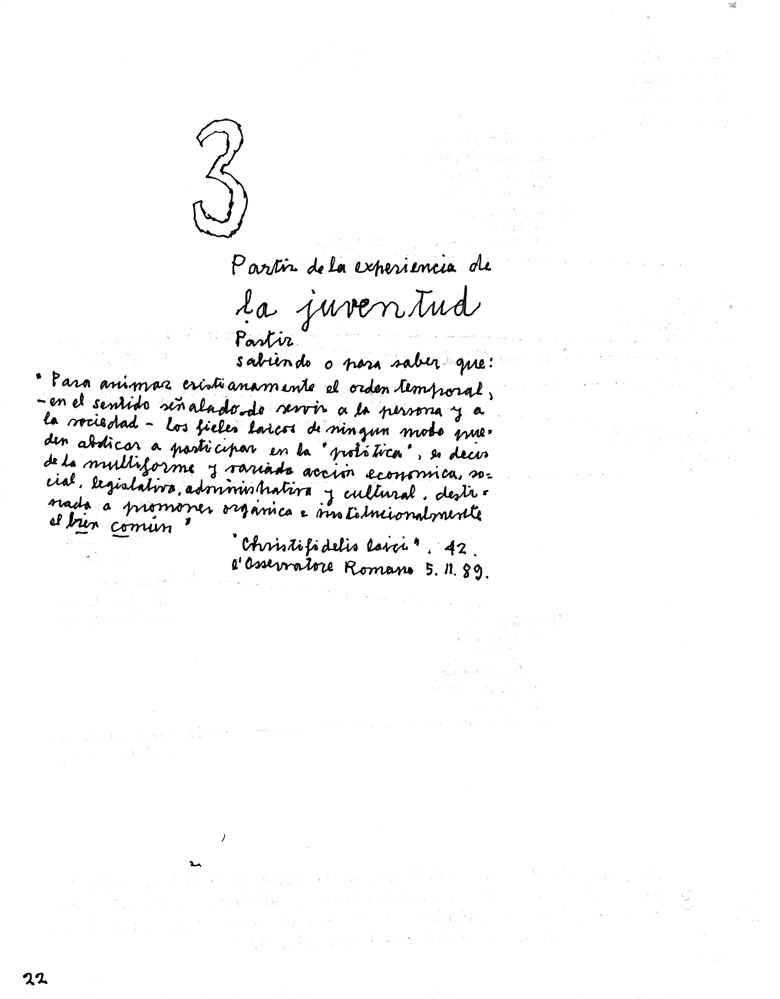
3
Partir de la experiencia de
la juventud
Partir
sabiendo o para saber que:
“Para animar cristianamente el orden temporal,
- en el sentido señalado de servir a la persona y a
la sociedad - los fieles laicos de ningun modo pue-
den abdicar a participar en la “política”, es decir
de la multiforme y variada acción economica, so-
cial, legislativa, administrativa y cultural, desti-
nada a promover organica e institucionalmente
el bien comun”
“Christifidelis laici”. 42.
L'Osservatore Romano 5.II.89.
22
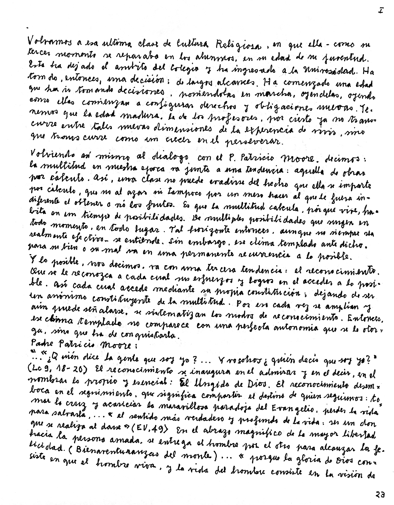
I
Volvamos a esa ultima clase de Cultura Religiosa, en que ella - como su
tercer momento se reparaba en los alumnos, en su edad de su juventud.
Esta ha dejado el ambito del colegio y ha ingresado a la Universidad. Ha
tomado, entonces, una decisión; de largos alcances. Ha comenzado una edad
que ha ir tomando decisiones, poniendolas en marcha, oyendolas, oyendo
como ellas comienzan a configurar derechos y obligaciones nuevas. Te-
nemos que la edad madura, la de los profesores, por cierto ya no trans-
curre entre tales nuevas dimensiones de la experiencia de vivir, sino
que transcurre como un crecer en el perseverar.
Volviendo así mismo al diálogo con el P. Patricio Moore, decimos:
la multitud en nuestra época va junto a una tendencia : aquella de obrar
por cálculo. Así, una clase no puede evadirse del hecho que ella se imparte
por cierto, que no al azar ni tampoco por un mero hacer al que le fuera in-
diferente el obtener o nó los frutos. Es que la multitud calcula, porque vive, ha-
bita en un tiempo de posibilidades. De multiples posibilidades que surgen en
todo momento, en todo lugar. Tal horizonte entonces, aunque no siempre sea
realmente efectivo - se entiende. Sin embargo, ese clima templado antedicho,
para su bien o su mal va en una permanente recurrencia a lo posible.
Y lo posible, nos decimos, va con una tercera tendencia : el reconocimiento.
Que se le reconozca a cada cual sus esfuerzos y logros en el acceder a lo posi-
ble. Así cada cual accede mediante su propia constitución; dejando de ser
un anónimo constituyente de la multitud. Por eso cada vez se amplian y
aún puede señalarse, se sistematizan los modos de reconocimiento. Entonces,
ese clima templado no comparece con una perfecta autonomía que se le otor-
ga, sino que ha de conquistarla.
Padre Patricio Moore:
“... ¿Quién dice la gente que soy yo? ... Y vosotros ¿quién decís que soy yo?”
(Lc 9, 18-20) El reconocimiento se inaugura en el admirar y en el decir, en el
nombrar lo propio y esencial : El Ungido de Dios. El reconocimiento desem-
boca en el seguimiento, que significa compartir el destino de quien seguimos: to-
mar la cruz y acariciar la maravillosa paradoja del Evangelio, perder la vida
para salvarla ... “el sentido más verdadero y profundo de la vida : ser un don
que se realiza al darse”(EV,49) En el abrazo magnífico de la mayor libertad
hacia la persona amada, se entrega el hombre por el otro para alcanzar la fe-
licidad. (Bienaventuranzas del monte) ... “porque la gloria de Dios con-
siste en que el hombre viva, y la vida del hombre consiste en la visión de
23
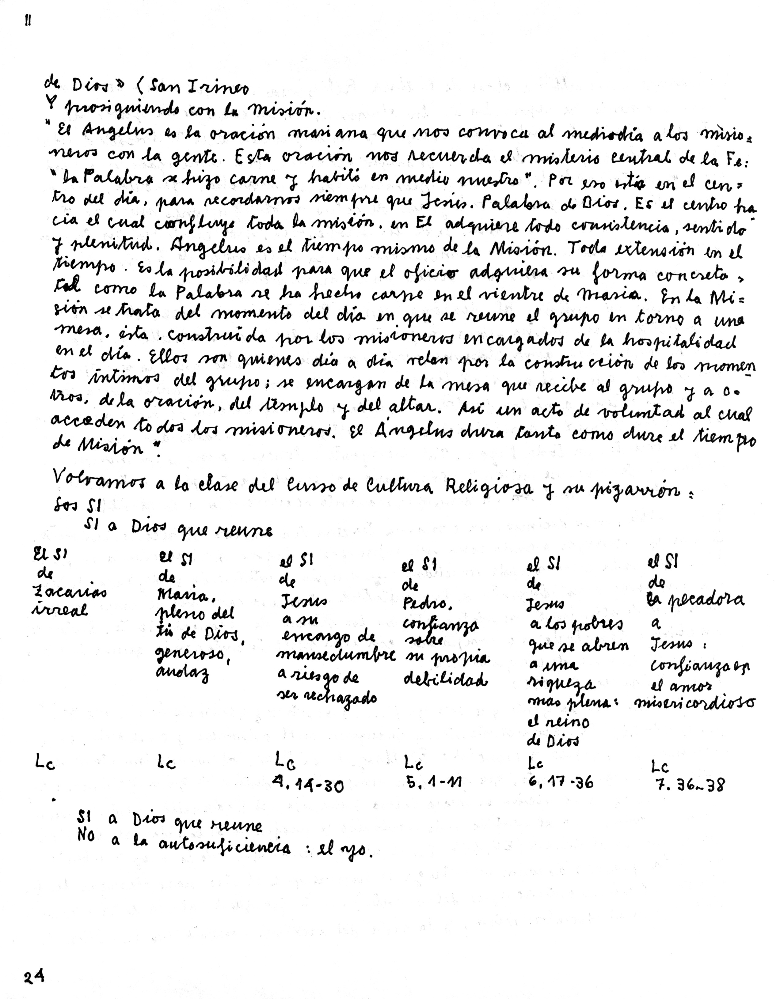
II
de Dios” (San Irineo
Y prosiguiendo con la Misión.
“El Ángelus es la oración mariana que nos convoca al mediodía a los misio-
neros con la gente. Esta oración nos recuerda el misterio central de la Fe:
“La Palabra se hizo carne y habitó en medio nuestro”. Por eso está en el cen-
tro del día, para recordarnos siempre que Jesús, Palabra de Dios, Es el centro ha-
cia el cual confluye toda la misión, en El adquiere todo consistencia, sentido
y plenitud. Angelus es el tiempo mismo de la Misión. Toda extensión en el
tiempo. Es la posibilidad para que el oficio adquiera su forma concreta,
tal como la Palabra se ha hecho carne en el vientre de María. En la Mi-
sión se trata del momento del día en que se reune el grupo en torno a una
mesa, ésta, construida por los misioneros encargados de la hospitalidad
en el día. Ellos son quienes día a día velan por la construcción de los momen-
tos íntimos del grupo; se encargan de la mesa que recibe al grupo y a o-
tros, de la oración, del templo y del altar. Así un acto de voluntad al cual
acceden todos los misioneros. El Ángelus dura tanto como dure el tiempo
de Misión”.
Volvamos a la clase del curso de Cultura Religiosa y su pizarrón:
Los SI
SI a Dios que reune
El SI el SI el SI el SI el SI el SI
de de de de de de
Zacarias María, Jesus Pedro, Jesus la pecadora
irreal pleno del a su confianza a los pobres a
tú de Dios, encargo de sola que se abren Jesus:
generoso, mansedumbre su propia a una confianza en
audaz a riesgo de debilidad riqueza el amor
ser rechazado mas plena: misericordioso
el reino
de Dios
Lc Lc Lc Lc Lc Lc
4.14-30 5.1-11 6.17-36 7.36-38
SI a Dios que reune
NO a la autosuficiencia : el yo.
24
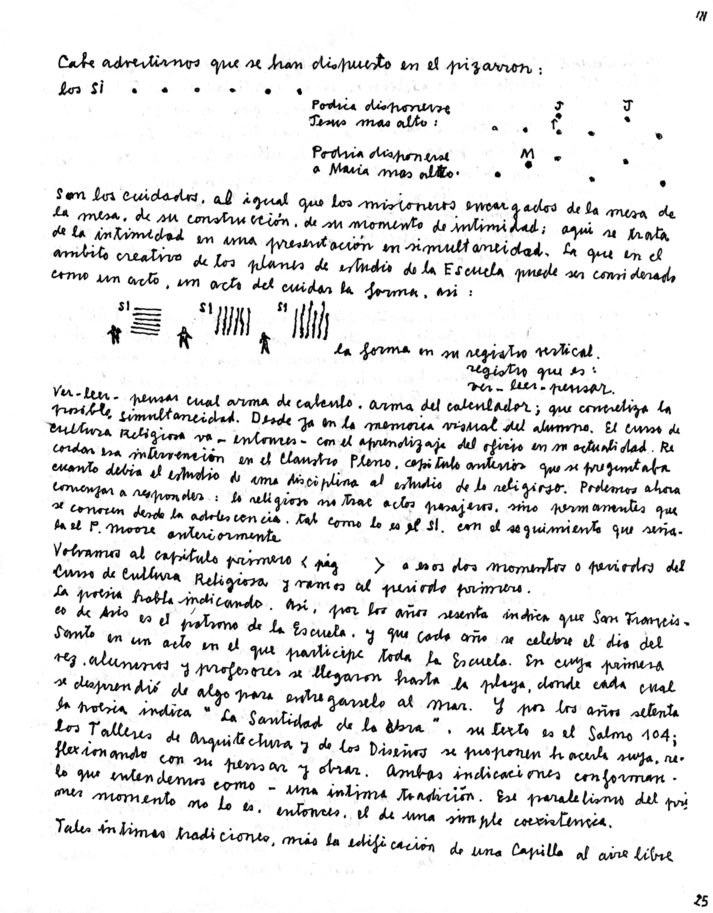
III
Cabe advertirnos que se han dispuesto en el pizarron:
los SI • • • • • •
Podría disponerse J J
Jesus mas alto: ↑ •
• • • •
Podría disponerse M • •
a María mas alto. • • • •
Son los cuidados, al igual que los misioneros encargados de la mesa de
la mesa, de su construcción, de su momento de intimidad; aquí se trata
de la intimidad en una presentación en simultaneidad. La que en el
ambito creativo de los planes de estudio de la Escuela puede ser considerado
como un acto, un acto del cuidar la forma, así:
SI SI SI
━━━ ║║║ ║║║
━━━ ║║║ ║║║
la forma en su registro vertical,
registro que es:
ver-leer-pensar.
Ver-leer-pensar cual arma de calculo, arma del calculador; que aconseja la
posible simultaneidad. Desde ya en la memoria visual del alumno. El curso de
Cultura Religiosa va - entonces - con el aprendizaje del oficio en su actualidad. Re-
cordar esa intervención en el Claustro Pleno, capítulo anterior que se preguntaba
cuanto debía el estudio de una disciplina al estudio de lo religioso. Podemos ahora
comenzar a responder : lo religioso no trae actos pasajeros, sino permanentes que
se conocen desde la adolescencia. Tal como lo es el SI, con el seguimiento que seña-
la el P. Moore anteriormente
Volvamos al capítulo primero (pág ) a esos dos momentos o periodos del
curso de Cultura Religiosa y vamos al periodo primero.
La poesía había indicado. Así; por los años sesenta indica que San Francis-
co de Asis es el patrono de la Escuela, y que cada año se celebre el día del
Santo en un acto en el que participe toda la Escuela. En cuya primera
vez, alumnos y profesores se llegaron hasta la playa, donde cada cual
se desprendió de algo para entregarlo al mar. Y por los años setenta
la poesía indica “La Santidad de la Obra”, su texto es el Salmo 104;
los Talleres de Arquitectura y de los Diseños se proponen hacerla suya, re-
flexionando con su pensar y obrar. Ambas indicaciones conforman -
lo que entendemos como - una íntima tradición. El paralelismo del pri-
mer momento no lo es, entonces, el de una simple coexistencia.
Tales íntimas tradiciones, más la edificación de una Capilla al aire libre
25
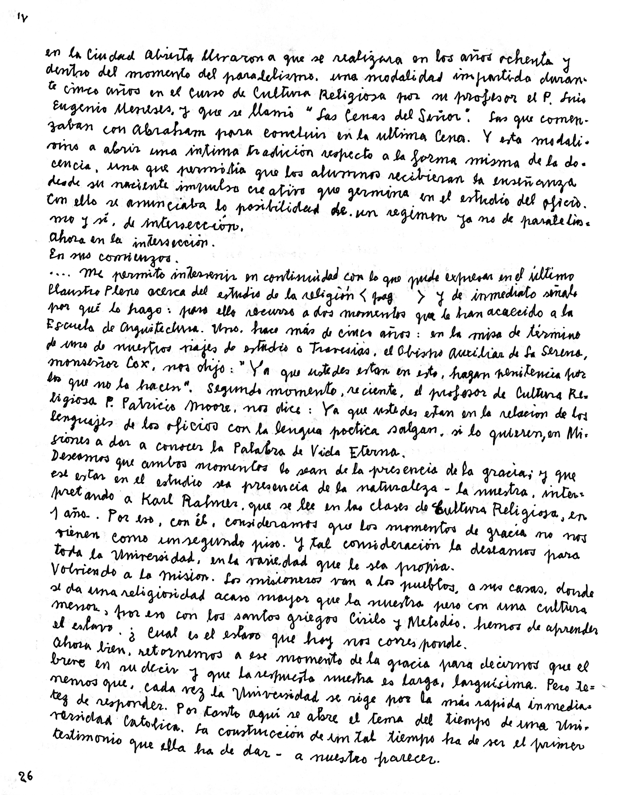
IV en la Ciudad Abierta llevaron a que se realizara en los años ochenta y dentro del momento del paralelismo, una modalidad impartida duran- te cinco años en el curso de Cultura Religiosa por su profesor el P. Luis Eugenio Meneses, y que se llamó “Las Cenas del Señor”. Las que comen- zaban con Abraham para concluir en la ultima Cena. Y esta moda- lidad vino a abrir una íntima tradición respecto a la forma misma de la do- cencia, una que permitía que los alumnos recibieran la enseñanza desde su naciente impulso creativo que germina en el estudio del oficio. Con ello se anunciaba la posibilidad de un regimen ya no de paralelis- mo y sí, de intersección. Ahora en la intersección. En sus comienzos. .... Me permito intervenir en continuidad con lo que pude expresar en el último Claustro Pleno acerca del estudio de la religión (pag ) y de inmediato señalo por qué lo hago : para ello recurro a dos momentos que le han acaecido a la Escuela de Arquitectura. Uno, hace más de cinco años : en la misa de término de uno de nuestros viajes de estudio o Travesías, el Obispo Auxiliar de La Serena, Monseñor Cox, nos dijo : “Ya que ustedes estan en esto, hagan penitencia por los que no lo hacen”. Segundo momento, reciente, el profesor de Cultura Re- ligiosa P. Patricio Moore, nos dice : Ya que ustedes estan en la relación de los lenguajes de los oficios con la lengua poética salgan, si lo quieren, en Mi- siones a dar a conocer la Palabra de Vida Eterna. Deseamos que ambos momentos lo sean de la presencia de la gracia; y que ese estar en el estudio sea presencia de la naturaleza - la nuestra, inter- pretando a Karl Rahner, que se lee en las clases de Cultura Religiosa, en 1 año. Por eso, con él, consideramos que los momentos de gracia no nos vienen como un segundo piso. Y tal consideración la deseamos para toda la Universidad, en la variedad que le sea propia. Volviendo a la Misión. Los misioneros van a los pueblos, a sus casas, donde se da una religiosidad acaso mayor que la nuestra pero con una cultura menor, por eso con los santos griegos Cirilo y Metodio, hemos de aprender el eslavo. ¿Cual es el eslavo que hay nos corresponde. Ahora bien, retornemos a ese momento de la gracia para decirnos que él breve en su decir y que la respuesta nuestra es larga, larguísima. Pero te- nemos que, cada vez la Universidad se rige por la más rapida inmedia- tez de responder. Por tanto aquí se abre el tema del tiempo de una Uni- versidad Catolica. La construcción de un tal tiempo ha de ser el primer testimonio que ella ha de dar - a nuestro parecer. 26
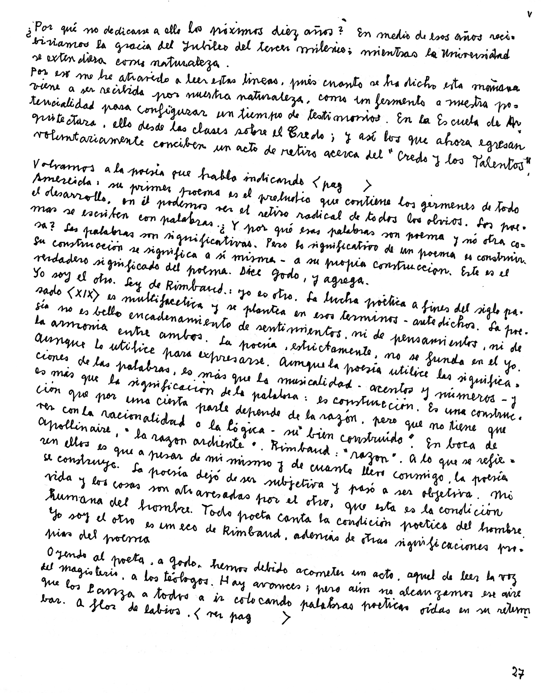
V
¿Por qué no dedicarse a ello los próximos diez años? En medio de esos años reci-
biriamos la gracia del Jubileo del tercer milenio; mientras la Universidad
se extendiera como naturaleza.
Por eso me he atrevido a leer estas lineas, pues cuanto se ha dicho esta mañana
viene a ser recibida por nuestra naturaleza, como un fermento a nuestra po-
tencialidad para configurar un tiempo de testimonios. En la Escuela de Ar-
quitectura, ello desde las clases sobre el Credo; y así los que ahora egresan
voluntariamente conciben un acto de retiro acerca del “Credo y los Talentos”.
Volvamos a la poesía que habla indicando (pag )
Amereida; su primer poema es el preludio que contiene los germenes de todo
el desarrollo, en él podemos ver el retiro radical de todos los oficios. Los poe-
mas se escriben con palabras. ¿Y por qué esas palabras son poema y no otra co-
sa? Las palabras son significativas, Pero lo significativo de un poema es construir.
Su construcción se significa a sí misma - a su propia construccion. Este es el
verdadero significado del poema. Dice Godo, y agrega.
Yo soy el otro. Ley de Rimbaud : yo es otro. La lucha poética a fines del siglo pa-
sado (XIX) es multifacetica y se plantea en esos terminos antedichos. La poe-
sía no es bello encadenamiento de sentimientos, ni de pensamientos, ni de
la armonía entre ambos. La poesía, estrictamente, no se funda en el yo.
Aunque lo utilice para expresarse. Aunque la poesía utilice las significa-
ciones de las palabras, es más que la musicalidad - acentos y miembros - y
es más que la significación de la palabra : es construcción. Es una construc-
ción que por una cierta parte depende de la razón, pero que no tiene que
ver con la racionalidad o la lógica - su “bien construido”. En boca de
Apollinaire, “la razon ardiente”. Rimbaud : “razón”. A lo que se refie-
ren ellos es que a pesar de mí mismo y de cuanto llevo conmigo la poesía
se construye. La poesía dejó de ser subjetiva y pasó a ser objetiva. Mi
vida y las cosas son atravesadas por el otro, que esta es la condición
humana del hombre. Todo poeta canta la condición poética del hombre.
Yo soy el otro es un eco de Rimbaud, además de otras significaciones pro-
pias del poema
Oyendo al poeta, a Godo, hemos debido acometer un acto, aquel de leer la voz
del magisterio, a los teólogos. Hay avances; pero aún no alcanzamos ese aire
que los lleva a todos a ir colocando palabras poéticas oídas en su retum-
bar. A flor de labios. (ver pag )
27
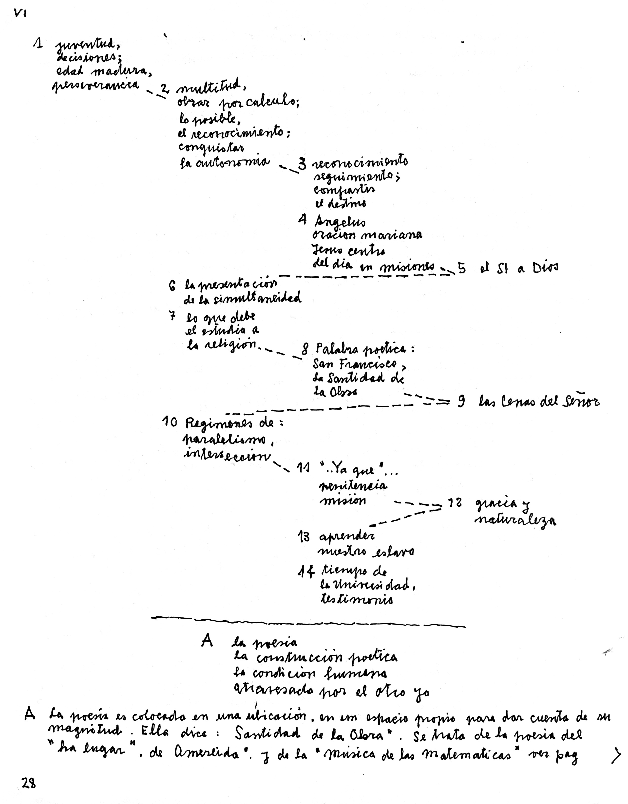
VI
1 juventud,
decisiones;
edad madura,
perseverancia -- 2 multitud,
obrar por calculo;
lo posible,
el reconocimiento;
conquistar
la autonomia -- 3 reconocimiento
seguimiento;
compartir
el destino
4 Angelus
oracion mariana
Jesus centro
del dia en Misiones -- 5 el SI a Dios
6 la presentación -----------------------
de la simultaneidad
7 lo que debe
el estudio a
la religión --- 8 Palabra poética:
San Francisco,
La Santidad de
la Obra ----------- 9 las Cenas del Señor
10 Regimenes de: ------------------------
paralelismo,
intersección -- 11 “..Ya que”...
penitencia
mision --------- 12 gracia y
naturaleza
13 aprender
nuestro eslavo
14 tiempo de
la Universidad,
testimonio
______________________________________
A la poesía
la construcción poética
la condicion humana
atravesado por el otro yo
A La poesía es colocada en una ubicación, en un espacio propio para dar cuenta de su
magnitud. Ella dice : Santidad de la Obra”. Se trata de la poesía del
“ha lugar”, de Amereida”. y de la “Música de las Matemáticas” ver pag >
28
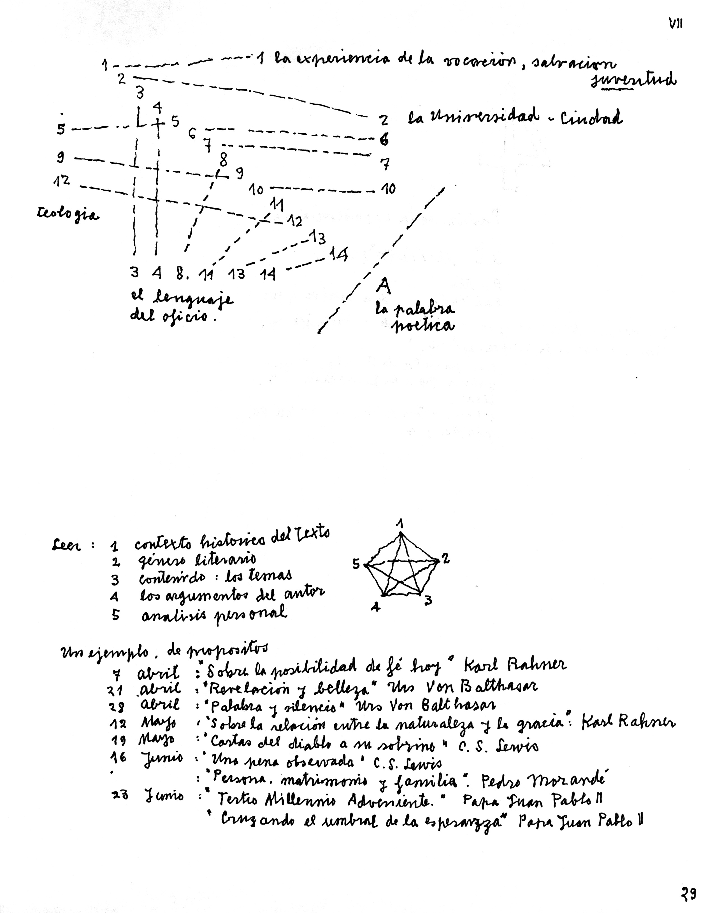
VII
1 ---------------- 1 la experiencia de la vocación, salvacion
2 juventud
3
4
5 -------------5 -------------------- 2 La Universidad - Ciudad
6 ------------------ 6
9 7 ---------------- 7
8
12 9
10 --------- 10
teologia 11
12
13
14
3 4 8 11 13 14
el lenguaje A
del oficio. la palabra
poética
Leer : 1 contexto historico del texto 1
2 género literario 5 2
3 contenido : los temas
4 los argumentos del autor 4 3
5 analisis personal
Un ejemplo, de propositos
7 Abril : “Sobre la posibilidad de fé hoy” Karl Rahner
21 Abril : “Revelación y belleza” Urs Von Balthasar
28 Abril : “Palabra y silencio” Urs Von Balthasar
12 Mayo : “Sobre la relación entre la naturaleza y la gracia”. Karl Rahner
19 Mayo : “Cartas del diablo a su sobrino” C.S. Lewis
16 Junio : “Una pena observada” C.S. Lewis
: “Persona, matrimonio y familia”. Pedro Morandé
23 Junio : “Tertio Millennio Adveniente.” Papa Juan Pablo II
“Cruzando el umbral de la esperanza” Papa Juan Pablo II
29
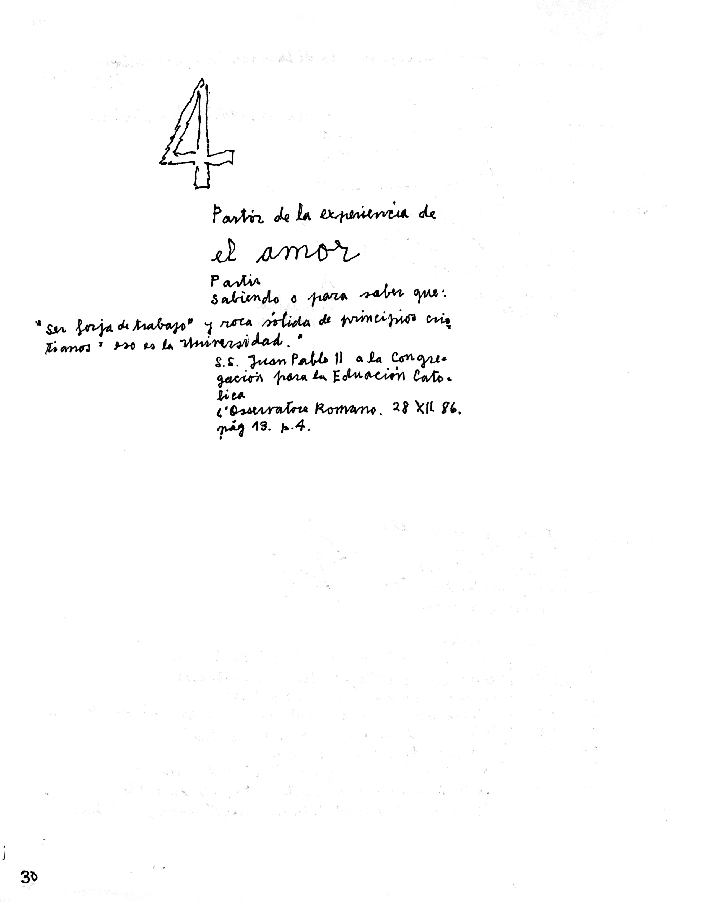
4
Partir de la experiencia de
el amor
Partir
sabiendo o para saber que:
“Ser forja de trabajo” y roca sólida de principios cris-
tianos; eso es la Universidad.”
S.S. Juan Pablo II a la Congre-
gación para la Educación Cato-
lica
L'Osservatore Romano. 28 XII 86.
pág 13. p.4.
30
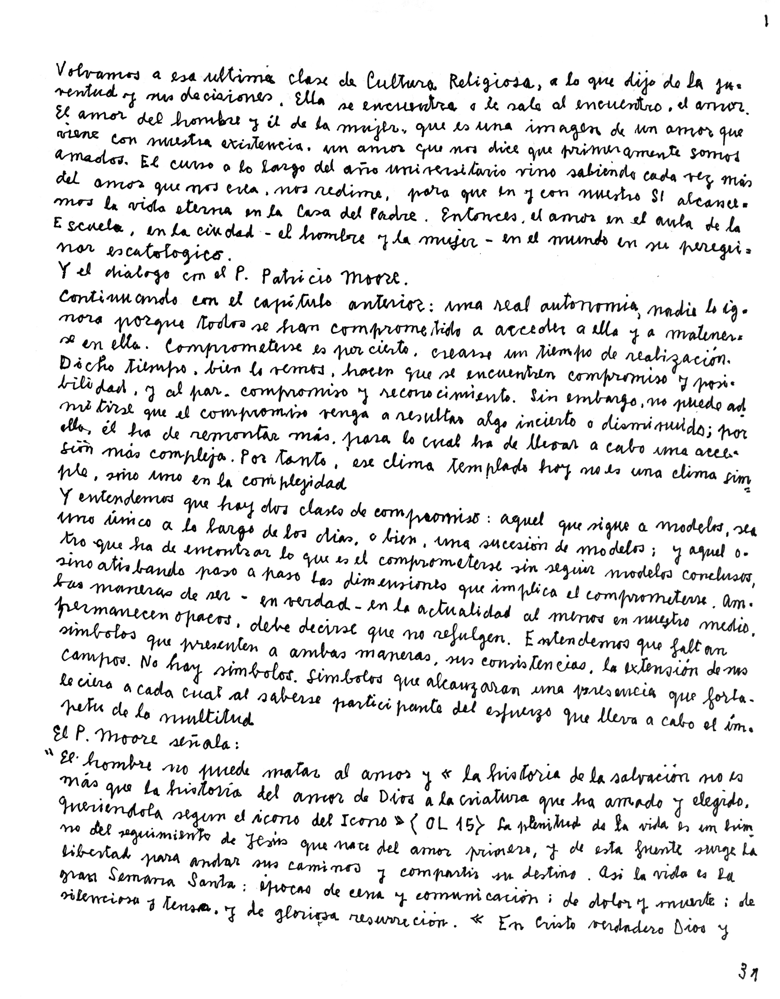
I
Volvamos a esa última clase de Cultura Religiosa, a lo que dijo de la ju-
ventud y sus decisiones. Ella se encuentra o le sale al encuentro, el amor.
El amor del hombre y el de la mujer, que es una imagen de un amor que
viene con nuestra existencia, un amor que nos dice que primeramente somos
amados. El curso a lo largo del año universitario vino sabiendo cada vez más
del amor que nos crea, nos redime, para que en y con nuestro SI alcance-
mos la vida eterna en la Casa del Padre. Entonces, el amor en el aula de la
Escuela, en la ciudad - el hombre y la mujer - en el mundo en su peregri-
nar escatológico.
Y el diálogo con el P. Patricio Moore.
Continuando con el capítulo anterior: una real autonomía nadie la ig-
nora porque todos se han comprometido a acceder a ella y a mantener-
se en ella. Comprometerse es por cierto, crearse un tiempo de realización.
Dicho tiempo, bien lo vemos, hace que se encuentren compromiso y posi-
bilidad, y al par, compromiso y reconocimiento. Sin embargo, no puede ad-
mitirse que el compromiso venga a resultar algo incierto o disminuido; por
ello, él ha de remontar más, para lo cual ha de llevar a cabo una acep-
sión más compleja. Por tanto, ese clima templado hoy no es una clima sim-
ple, sino uno en la complejidad
Y entendemos que hay dos clases de compromiso : aquel que sigue a modelos, sea
uno único a lo largo de los dias, o bien, una sucesión de modelos; y aquel o-
tro que ha de encontrar lo que es el comprometerse sin seguir modelos conclusos,
sino atisbando paso a paso las dimensiones que implica el comprometerse. Am-
bas maneras de ser - en verdad - en la actualidad al menos en nuestro medio,
permanecen opacos, debe decirse que no refulgen. Entendemos que faltan
símbolos que presenten a ambas maneras, sus consistencias, la extensión de sus
campos. No hay símbolos. Simbolos que alcanzaran una presencia que forta-
leciera a cada cual al saberse participante del esfuerzo que lleva a cabo el ím-
petu de la multitud.
El P. Moore señala:
“El hombre no puede matar al amor y “la historia de la salvación no es
más que la historia del amor de Dios a la criatura que ha amado y elegido,
queriendola segun el icono del Icono” (OL 15) La plenitud de la vida es un him-
no del seguimiento de Jesús que nace del amor primero, y de esta fuente surge la
libertad para sondar sus caminos y compartir su destino. Así la vida es la
gran Semana Santa; época de cena y comunicación; de dolor y muerte; de
silenciosa y tensa, y de gloriosa resurrección. “En Cristo verdadero Dios y
31
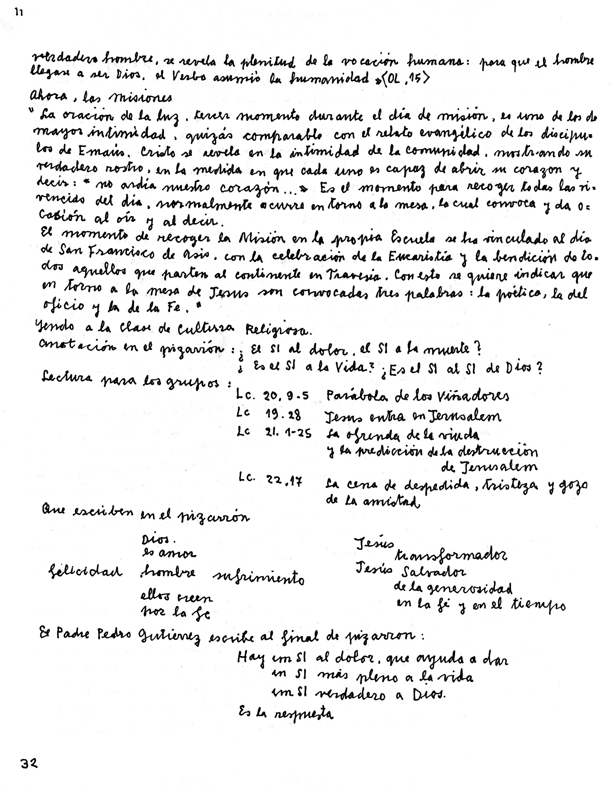
II
verdadero hombre, se revela la plenitud de la vocación humana: para que el hombre
llegase a ser Dios, el Verbo asumió la humanidad”(OL,15)
Ahora, las Misiones
“La oración de la luz, tercer momento durante el día de misión, es uno de los de
mayor intimidad, quizás comparable con el relato evangélico de los discipu-
los de Emaús. Cristo se revela en la intimidad de la comunidad, mostrando su
verdadero rostro, en la medida en que cada uno es capaz de abrir su corazon y
decir: “no ardía nuestro corazón...” Es el momento para recoger todas las vi-
vencias del día, normalmente ocurre en torno a la mesa, la cual convoca y da o-
casión al oír y al decir.
El momento de recoger la Misión en la propia Escuela se ha vinculado al día
de San Francisco de Asis, con la celebración de la Eucaristía y la bendición de to-
dos aquellos que parten al continente en Travesía. Con esto se quiere indicar que
en torno a la mesa de Jesus son convocadas tres palabras: la poética, la del
oficio y la de la Fe.”
Yendo a la clase de Cultura Religiosa.
Anotación en el pizarrón: ¿El SI al dolor, el SI a la muerte?
¿Es el SI a la Vida? ¿Es el SI al SI de Dios?
Lectura para los grupos:
Lc. 20,9-5 Parábola de los Viñadores
Lc 19.28 Jesus entra en Jerusalem
Lc 21.1-25 La ofrenda de la viuda
y la predicción de la destrucción
de Jerusalem
Lc. 22.17 La cena de despedida, tristeza y gozo
de la amistad
Que escriben en el pizarrón
Dios. Jesús
es amor transformador
felicidad hombre sufrimiento Jesús Salvador
de la generosidad
ellos creen en la fe y en el tiempo
por la fe
El Padre Pedro Gutiérrez escribe al final de pizarron:
Hay un SI al dolor, que ayuda a dar
un SI más pleno a la vida
un SI verdadero a Dios.
Es la respuesta
32
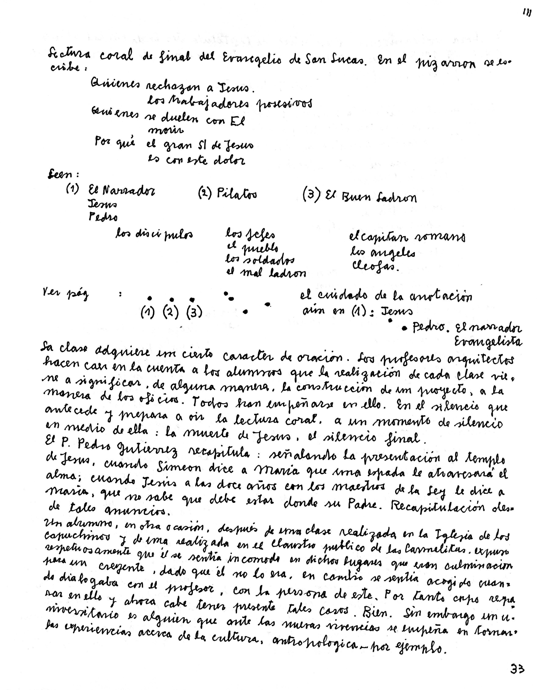
III
Lectura coral de final del Evangelio de San Lucas. En el pizarron se es-
cribe:
Quienes rechazan a Jesus.
los trabajadores posesivos
Quienes se duelen con El
morir
Por qué el gran SI de Jesus
es con este dolor
Leen:
(1) El Narrador (2) Pilatos (3) El Buen Ladron
Jesus
Pedro
los discípulos los Jefes el Capitan romano
el pueblo los angeles
los soldados Cleofas.
el mal ladron
Ver pág : • • • • el cuidado de la anotación
(1) (2) (3) • • aún en (1): Jesus
•
• Pedro. El narrador
Evangelista
La clase adquiere un cierto caracter de oración. Los profesores arquitectos
hacen caer en la cuenta a los alumnos que la realización de cada clase vie-
ne a significar, de alguna manera, la construcción de un proyecto, a la
manera de los oficios. Todos han empeñarse en ello. En el silencio que
antecede y prepara a oír la lectura coral, a un momento de silencio
en medio de ella : la muerte de Jesus, el silencio final.
El P. Pedro Gutiérrez recapitula : señalando la presentación al templo
de Jesus, cuando Simeon dice a María que una espada le atravesará el
alma; cuando Jesús a los doce años con los maestros de la ley le dice a
María, que no sabe que debe estar donde su Padre. Recapitulación des-
de tales anuncios.
Un alumno, en otra ocasión, después de una clase realizada en la Iglesia de los
Capuchinos y de una realizada en el Claustro publico de las Carmelitas, expuso
respetuosamente que él se sentía incomodo en dichos lugares que eran culminación
para un creyente, dado que él no lo era, en cambio se sentía acogido cuan-
do dialogaba con el profesor, con la persona de éste. Por tanto quiso repa-
rar en ello y ahora cabe tener presente tales casos. Bien. Sin embargo un u-
niversitario es alguien que ante las nuevas vivencias se empeña en tornar-
las experiencias acerca de la cultura, antropologica - por ejemplo.
33
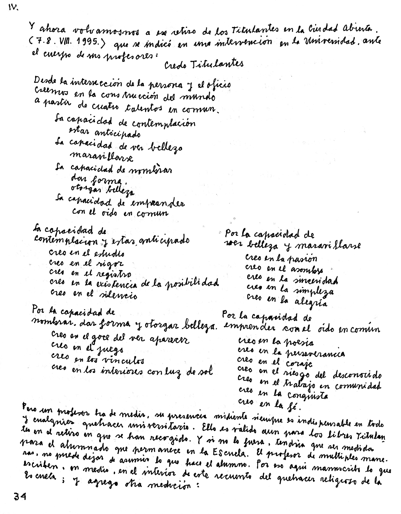
IV.
Y ahora volvamonos a ese retiro de los Titulantes en la Ciudad Abierta.
(7.8.VIII.1995.) que se indicó en una intervención en la Universidad, ante
el cuerpo de sus profesores:
Credo Titulantes
Desde la intersección de la persona y el oficio
Creemos en la construcción del mundo
a partir de cuatro talentos en comun.
La capacidad de contemplación
estar anticipado
La capacidad de ver belleza
maravillarse
La capacidad de nombrar
dar forma.
otorgar belleza
La capacidad de emprender
con el oído en comun
La capacidad de Por la capacidad de
contemplación y estar anticipado ver belleza y maravillarse
creo en el estudio creo en la pasión
creo en el rigor creo en el asombro
creo en el registro creo en la sinceridad
creo en la existencia de la posibilidad creo en la simpleza
creo en el silencio creo en la alegría
Por la capacidad de Por la capacidad de
nombrar, dar forma y otorgar belleza. emprender con el oído en común
creo en el goce del ver aparecer creo en la poesía
creo en el juego creo en la perseverancia
creo en los vinculos creo en el coraje
creo en los interiores con luz de sol creo en el riesgo del desconocido
creo en el trabajo en comunidad
creo en la conquista
creo en la fé.
Pero un profesor ha de mediar, su presencia silente siempre es indispensable en todo
y cualquier quehacer universitario. Ello es valido aun para los libres titulan-
tes en el retiro en que se han recogido. Y si no lo fuera, tendría que ser medido
para el alumnado que permanece en la Escuela. El profesor de multiples mane-
ras, no puede dejar de asumir lo que hace el alumno. Por eso aquí manuscribe lo que
escriben, en medio, en el interior de este recuento del quehacer religioso de la
Escuela; y agrega otra mediación:
34
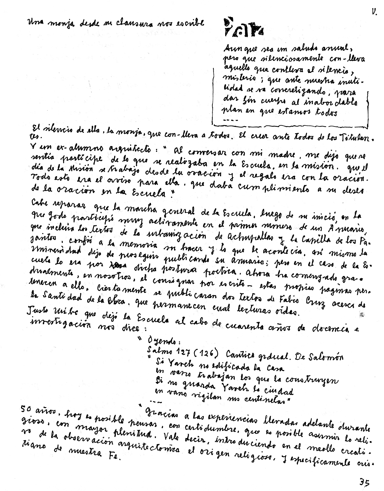
V.
Una monja desde su clausura nos escribe
Para
Aunque sea un saludo anual,
pero que silenciosamente con-lleva
aquello que conlleva el silencio,
misterio; que ante nuestra inuti-
lidad se va concretizando, para
dar sin cuerpo al inabordable
plan en que estamos todos
----
El silencio de ella, la monja, que con-lleva a todos. El creer ante todos de los Titulan-
tes.
Y un ex-alumno arquitecto: “Al conversar con mi madre, me dijo que se
sentía partícipe de lo que se realizaba en la Escuela, en la misión. Que el
día de la misión se trabajó desde la oración y el regalo era con la oración.
Todo esto era el aviso para ella, que daba cumplimiento a su deseo
de la oración en la Escuela”.
Cabe reparar que la marcha general de la Escuela, luego de su inicio, en la
que Godo participó muy activamente en el primer numero de un Anuario,
que incluía los textos de la urbanización de Achupallas y la Capilla de los Pa-
jaritos, confió a la memoria su hacer y lo que le acontecía, así mismo la
Universidad dejó de proseguir publicando su Anuario; pero en el caso de la Es-
cuela lo era por dicha postura poética. Ahora ha comenzado gra-
dualmente, en nosotros, el consignar por escrito - estas propias páginas per-
tenecen a ello. Ciertamente se publicaron dos textos de Fabio Cruz acerca de
la Santidad de la Obra, que permanecen cual lecturas oídas.
Justo Uribe que dejó la Escuela al cabo de cuarenta años de docencia e
investigación nos dice:
“Oyendo:
Salmo 127 (126) Cantico gradual. De Salomón
“Si Yavéh no edificara la casa
en vano trabajan los que la construyen
Si no guarda Yavéh la ciudad
en vano vigilan sus centinelas”
---
“Gracias a las experiencias llevadas adelante durante
50 años, hoy es posible pensar, con certidumbre, que es posible asumir lo reli-
gioso, con mayor plenitud. Vale decir, introduciendo en el meollo creati-
vo de la observación arquitectónica el origen religioso, y especificamente cris-
tiano de nuestra Fe.
35
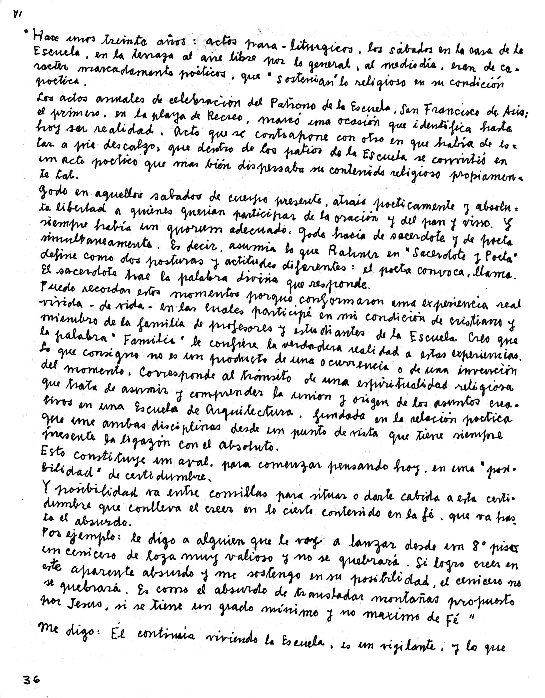
VI “Hace unos treinta años : actos para-liturgicos, los sábados en la casa de la Escuela, en la terraza al aire libre por lo general, al mediodía, eran de ca- racter marcadamente poéticos, que “sostenían” lo religioso en su condición poética. Los actos anuales de celebración del Patrono de la Escuela, San Francisco de Asis; el primero, en la playa de Recreo, marcó una ocasión que identifica hasta hoy su realidad. Acto que se contrapone con otro en que había de es- tar a pie descalzo, que dentro de los patios de la Escuela se convirtió en un acto poetico que más bien dispersaba su contenido religioso propiamen- te tal. Godo en aquellos sabados de cuerpo presente, atraía poeticamente y absolu- ta libertad a quienes querían participar de la oración y del pan y vino. Y siempre había un quorum adecuado. Godo hacía de sacerdote y de poeta simultaneamente. Es decir, asumía lo que Rahner en “Sacerdote y Poeta” define como dos posturas y actitudes diferentes : el poeta convoca, llama. El sacerdote trae la palabra divina que responde. Puedo recordar estos momentos porque conformaron una experiencia real vivida - de vida - en las cuales participé en mi condición de cristiano y miembro de la familia de profesores y estudiantes de la Escuela. Creo que la palabra “Familia” le confiere la verdadera realidad a estas experiencias. Lo que consigno no es un producto de una ocurrencia o de una invención del momento. Corresponde al transito de una espiritualidad religiosa que trata de asumir y comprender la union y origen de los asuntos crea- tivos en una Escuela de Arquitectura, fundada en la relación poética que une ambas disciplinas desde un punto de vista que tiene siempre presente la ligazón con el absoluto. Esto constituye un aval, para comenzar pensando hoy, en una “posi- bilidad” de certidumbre. Y posibilidad va entre comillas para situar o darle cabida a esta certi- dumbre que conlleva el creer en lo cierto contenido en la fé, que va has- ta el absurdo. Por ejemplo: le digo a alguien que le voy a lanzar desde un 8º piso un cenicero de loza muy valioso y no se quebrará. Si logro creer en este aparente absurdo y me sostengo en su posibilidad, el cenicero no se quebrará. Es como el absurdo de trasladar montañas propuesto por Jesus, si se tiene un grado minimo y no maximo de Fé.” Me digo: Él continua viviendo la Escuela, es un vigilante, y lo que 36
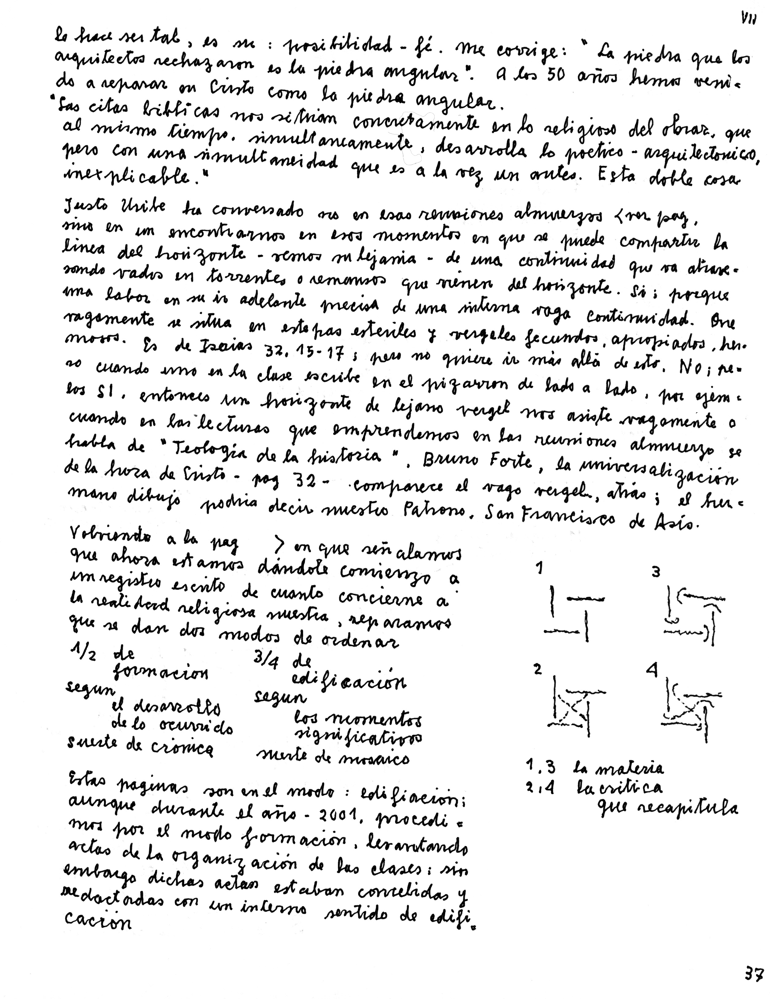
VII
lo hace ser tal, es su: posibilidad - fé. Me corrige: “La piedra que los
arquitectos rechazaron es la piedra angular”. A los 50 años hemos veni-
do a reparar en Cristo como la piedra angular.
“Las citas biblicas nos sitúan concretamente en lo religioso del obrar, que
al mismo tiempo, simultaneamente, desarrolla lo poetico - arquitectonico,
pero con una simultaneidad que es a la vez un antes. Esta doble cosa
inexplicable.”
Justo Uribe ha conversado no en esas reuniones almuerzos (ver pag,
sino en un encontrarnos en esos momentos en que se puede compartir la
linea del horizonte - vemos su lejanía - de una continuidad que va atra-
sando vados en torrentes o remansos que vienen del horizonte. Si; porque
una labor en su ir adelante precisa de una interna vaga continuidad. Que
vagamente se situa en estepas esteriles y vergeles fecundos, apropiados, her-
mosos. Es de Isaias 32,15-17; pero no quiere ir más allá de esto. No; pe-
ro cuando uno en la clase escribe en el pizarron de lado a lado, por ejem-
los SI, entonces un horizonte de lejano vergel nos asiste vagamente o
cuando en las lecturas que emprendemos en las reuniones almuerzo se
habla de “Teología de la historia”, Bruno Forte, la universalización
de la hora de Cristo - pag 32 - comparece el vago vergel, atrás; el her-
mano dibujo podría decir nuestro Patrono, San Francisco de Asis.
Volviendo a la pag > en que señalamos
que ahora estamos dandole comienzo a 1 3
un registro escrito de cuanto concierne a
la realidad religiosa nuestra, reparamos
que se dan dos modos de ordenar
1/2 de 3/4 de 2 4
formación edificación
segun segun
el desarrollo los momentos
de lo ocurrido significativos
suerte de cronica suerte de mosaico
1,3 la materia
Estas paginas son en el modo : edificación; 2,4 la critica
aunque durante el año - 2001, procedi- que recapitula
mos por el modo formación, levantando
actas de la organización de las clases; sin
embargo dichas actas estaban concebidas y
redactadas con un interno sentido de edifi-
cacion
37
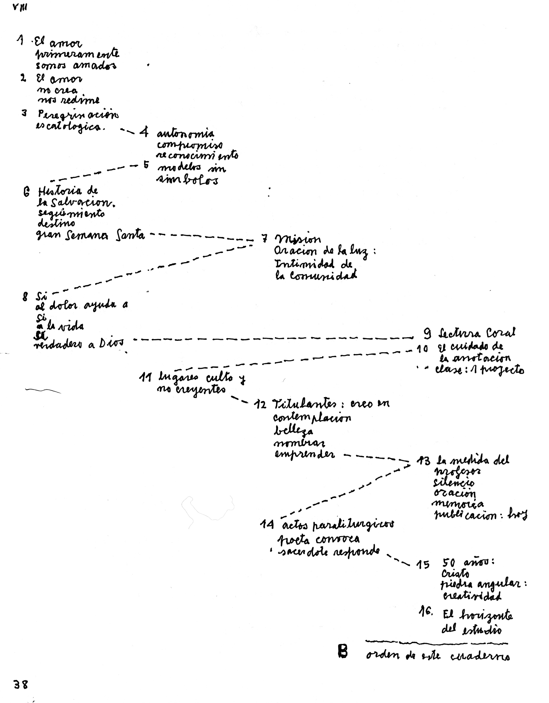
VIII
1 El amor
primeramente
somos amados
2 El amor
nos crea
nos redime
3 Peregrinación
escatologica. -- 4 autonomia
compromiso
reconocimiento
5 modelos sin
---------------- simbolos
6 Historia de
la Salvacion.
seguimiento
destino
gran Semana Santa ---------------- 7 Mision
Oracion de la luz:
Intimidad de
la Comunidad
8 Si ---------------------------------
al dolor. ayuda a
Si
a la vida
SI
verdadero a Dios ----------------------------------- 9 Lectura Coral
10 El cuidado de
la anotación
clase: 1 proyecto
11 lugares culto y ------------------
no creyentes
-- 12 Titulantes : creo en
contemplacion
belleza
nombrar
emprender ---- 13 la medida del
profesor
silencio
oracion
memoria
publicacion: hoy
14 actos paraliturgicos
poeta convoca
sacerdote responde
15 50 años:
Cristo
piedra angular:
creatividad
16. El horizonte
del estudio
_____________________
B orden de este cuaderno
38
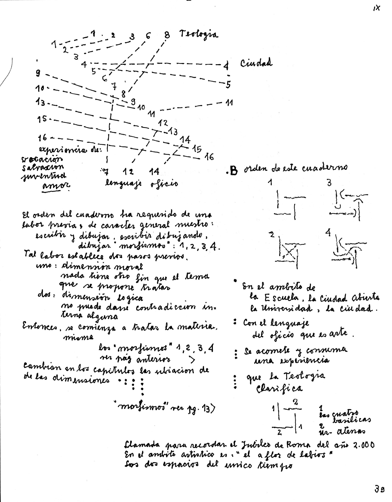
IX
1 2 3 6 8 Teologia
1 -----
2 -----
3 -----
4 ------------------------ 4 Ciudad
9 5 ---------------------- 5
6
10 7
8
13 9
10 ----------- 11
11
15 12
13
14
16 15
experiencias de: 16
vocación
salvacion 7 12 14 B orden de este cuaderno
juventud lenguaje oficio 1 3
amor
El orden del cuaderno ha requerido de una
labor previa; de caracter general nuestro:
escribir y dibujar, escribir dibujando,
dibujar “morfismos”: 1,2,3,4. 2 4
Tal labor establece dos pasos previos,
uno: dimensión moral
nada tiene otro fin que el tema
que se propone tratar En el ambito de
dos: dimensión logica la Escuela, la Ciudad Abierta
no puede darse contradiccion in- la Universidad, la Ciudad.
terna alguna
Entonces, se comienza a tratar la materia. Con el lenguaje
misma del oficio que es arte.
los “morfismos” 1,2,3,4
ver pág anterior > Se acomete y conforma
Cambian en los capitulos las ubicación de una experiencia
de las dimensiones • • • •
• • • que la Teologia
• • clarifica
•
“morfismos” ver pg.13 > 2
1 1
las cuatro
1 basilicas
2 2
re-iteros
Llamada para recordar el Jubileo de Roma del año 2.000
En el ambito artistico es: “el a flor de labios”
Los dos espacios del unico tiempo
39
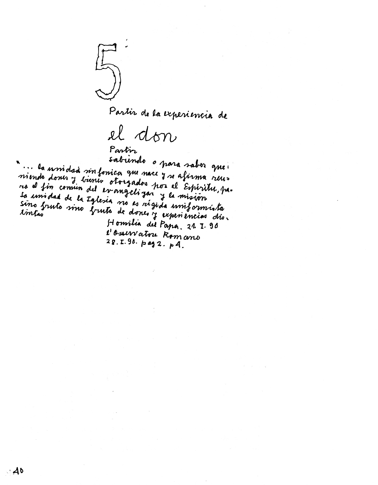
5
Partir de la experiencia de
el don
Partir
sabiendo o para saber que:
“... la unidad sinfonica que nace y se afirma reu-
niendo dones y bienes otorgados por el Espíritu, pa-
ra el fin común del evangelizar y la mision
La unidad de la Iglesia no es rigida uniformista
Sino fruto sino fruto de dones y experiencias dis-
tintos
Homilia del Papa. 21.I.90
L'Osservatore Romano
28.I.90. pag 2. p4.
40
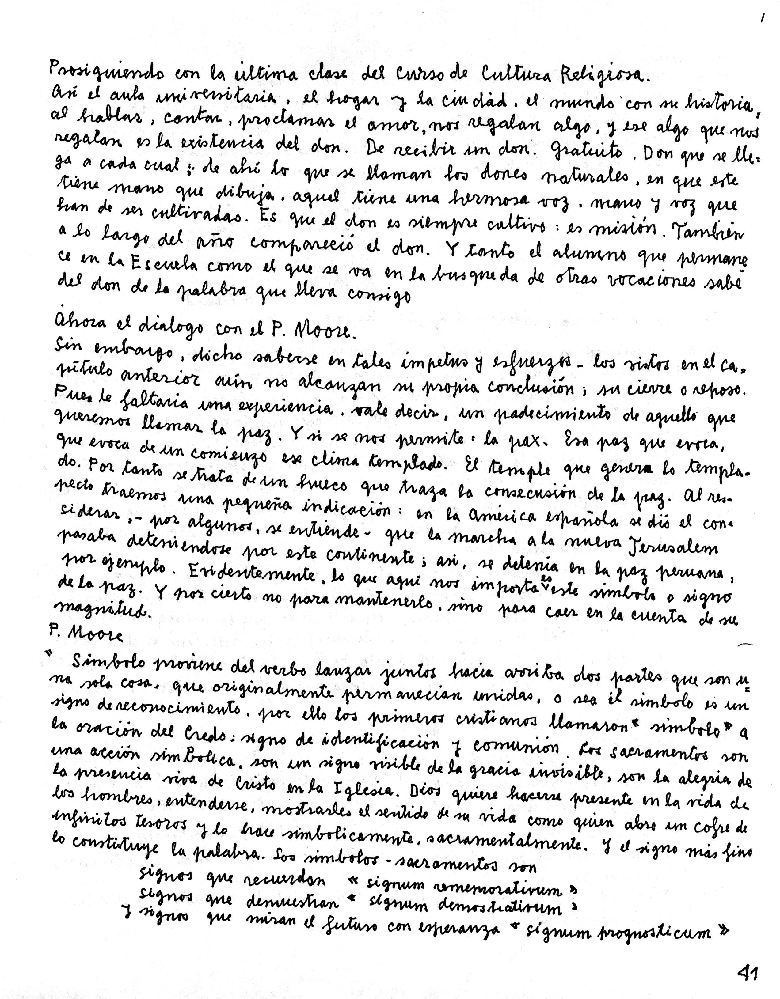
I
Prosiguiendo con la última clase del Curso de Cultura Religiosa.
Así el aula universitaria, el hogar y la ciudad, el mundo con su historia,
al hablar, cantar, proclamar el amor, nos regalan algo, y ese algo que nos
regalan es la existencia del don. De recibir un don. Gratuito. Don que se lle-
ga a cada cual; de ahí lo que se llaman los dones naturales, en que éste
tiene mano que dibuja, aquel tiene una hermosa voz. mano y voz que
han de ser cultivadas. Es que el don es siempre cultivo : es misión. Tambien
a lo largo del año compareció el don. Y tanto el alumno que permane-
ce en la Escuela como el que se va en la busqueda de otras vocaciones sabe
del don de la palabra que lleva consigo
Ahora el dialogo con el P. Moore.
Sin embargo, dichos saberes en tales impetu y esfuerzos - los vistos en el ca-
pítulo anterior aún no alcanzan su propia conclusión; su cierre o reposo.
Pues le faltaría una experiencia, vale decir, un padecimiento de aquello que
queremos llamar la paz. Y si se nos permite: la pax. Esa paz que evoca,
que evoca de un comienzo ese clima templado. El temple que genera lo templa-
do. Por tanto se trata de un buceo que traiga la consecución de la paz. Al res-
pecto traemos una pequeña indicación : en la America española se dió el con-
siderar, - por algunos, se entiende - que la marcha a la nueva Jerusalem
pasaba deteniendose por este continente; así, se detenía en la paz peruana,
por ejemplo. Evidentemente, lo que aquí nos importa es ese simbolo o signo
de la paz. Y por cierto no para mantenerlo, sino para caer en la cuenta de su
magnitud.
P. Moore
“Símbolo proviene del verbo lanzar juntos hacia arriba dos partes que son u-
na sola cosa, que originalmente permanecían unidas, o sea el símbolo es un
signo de reconocimiento, por ello los primeros cristianos llamaron “simbolo” a
la oración del Credo: signo de identificación y comunión. Los Sacramentos son
una acción simbólica, son un signo visible de la gracia invisible, son la alegria de
la presencia viva de Cristo en la Iglesia. Dios quiere hacerse presente en la vida de
los hombres, entenderse, mostrarles el sentido de su vida como quien abre un cofre de
infinitos tesoros y lo hace simbólicamente, sacramentalmente. Y el signo más fino
lo constituye la palabra. Los simbolos - sacramentos son
signos que recuerdan “signum rememorativum”
signos que demuestran “signum demostrativum”
y signos que miran el futuro con esperanza “signum prognosticum”
41
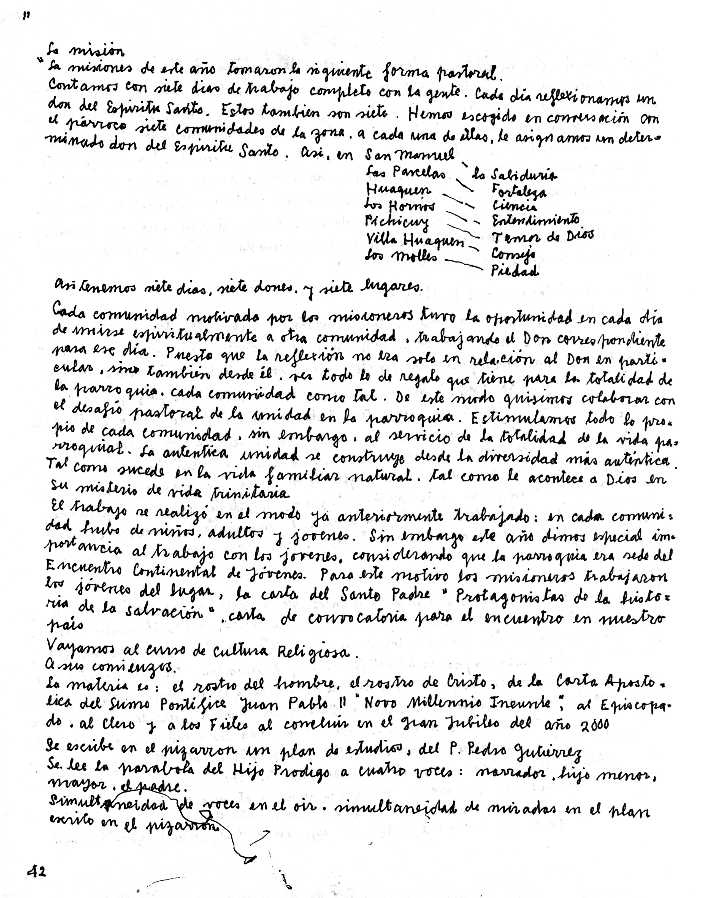
II
La misión
“Las misiones de este año tomaron la siguiente forma pastoral.
Contamos con siete días de trabajo completo con la gente. Cada día reflexionamos un
don del Espíritu Santo. Estos tambien son siete. Hemos escogido en conversación con
el párroco siete comunidades de la zona. a cada una de ellas, le asignamos un deter-
minado don del Espíritu Santo. Asi, en San Manuel la Sabiduría
Las Parcelas Fortaleza
Huaquen Ciencia
Los Hornos Entendimiento
Pichicuy Temor de Dios
Villa Huaquen Consejo
Los Molles Piedad
Así tenemos siete dias, siete dones, y siete lugares.
Cada comunidad motivada por los misioneros tuvo la oportunidad en cada día
de unirse espiritualmente a otra comunidad, trabajando el Don correspondiente
para ese día. Puesto que la reflexión no era solo en relación al Don en parti-
cular, sino tambien desde él, ver todo lo de regalo que tiene para la totalidad de
la parroquia. Cada comunidad como tal. De este modo quisimos colaborar con
el desafio pastoral de la unidad en la parroquia. Estimulamos todo lo pro-
pio de cada comunidad, sin embargo, al servicio de la totalidad de la vida pa-
rroquial. La auténtica unidad se construye desde la diversidad más auténtica.
Tal como sucede en la vida familiar natural, tal como le acontece a Dios en
Su misterio de vida trinitaria.
El trabajo se realizó en el modo ya anteriormente trabajado: en cada comuni-
dad hubo de niños, adultos y jóvenes. Sin embargo este año dimos especial im-
portancia al trabajo con los jóvenes, considerando que la parroquia era sede del
Encuentro Continental de Jóvenes. Para este motivo los misioneros trabajaron
los jóvenes del lugar, la carta del Santo Padre “Protagonistas de la histo-
ria de la salvación”. carta de convocatoria para el encuentro en nuestro
país
Vayamos al curso de Cultura Religiosa.
A sus comienzos.
La materia es, el rostro del hombre, el rostro de Cristo, de la Carta Aposto-
lica del Sumo Pontífice Juan Pablo II “Novo Millennio Ineunte”, al Episcopa-
do, al Clero y a los Fieles al concluir en el Gran Jubileo del año 2000
Se escribe en el pizarron un plan de estudios, del P. Pedro Gutiérrez
Se lee la parabola del Hijo Pródigo a cuatro voces: narrador, hijo menor,
mayor, el padre.
Simultaneidad de voces en el oír, simultaneidad de miradas en el plan
escrito en el pizarron
42
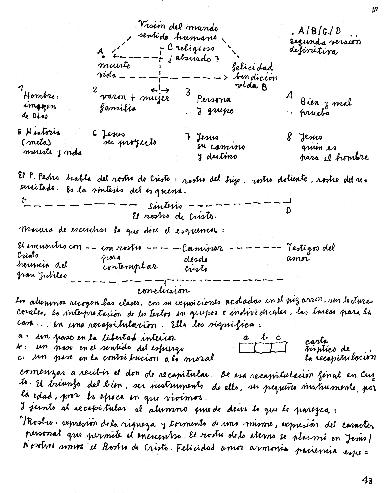
III
Visión del mundo A/B/C/D
sentido humano Segunda version
C religioso definitiva
A ←----- ¿absurdo? ---
muerte felicidad
vida -----------------→ bendicion
vida B
1 2 ↔ 3 4
Hombre: varon + mujer Persona Bien y mal
imagen familia y grupo prueba
de Dios
5 Historia 6 Jesus 7 Jesus 8 Jesus
(meta) su proyecto su camino quien es
muerte y vida y destino para el hombre
El P. Pedro habla del rostro de Cristo: rostro del hijo, rostro doliente, rostro del re-
sucitado. Es la síntesis del esquema.
1 ---------------------- síntesis --------------------┘
El rostro de Cristo. D
Manera de escuchar lo que dice el esquema:
El encuentro con -- un rostro ----- Caminar ---------- Testigos del
Cristo para desde amor
herencia del contemplar Cristo
gran Jubileo
--------------------------------------------
conclusión
Los alumnos recogen las clases, con sus exposiciones acotadas en el pizarron, sus lecturas
corales, la interpretación de los textos en grupos e individuales, las tareas para la
casa ... en una recapitulación. Ella les significa:
a: un paso en la libertad interior a b c
b: un paso en el sentido del esfuerzo □ □ □ carta
c: un paso en la contribución a la moral triptico de
la recapitulación
Comienzan a recibir el don de recapitular. De esa recapitulación final en Cris-
to. El triunfo del bien, ser instrumento de ello, un pequeño instrumento, por
la edad, por la época en que vivimos.
Y junto al recapitular el alumno puede decir lo que le parezca:
“/Rostro: expresión de la riqueza y tormento de uno mismo, expresión del caracter
personal que permite el encuentro. El rostro de lo eterno se plasmó en Jesús/
Nuestro rostro el Rostro de Cristo. Felicidad amor armonia paciencia espe-
43
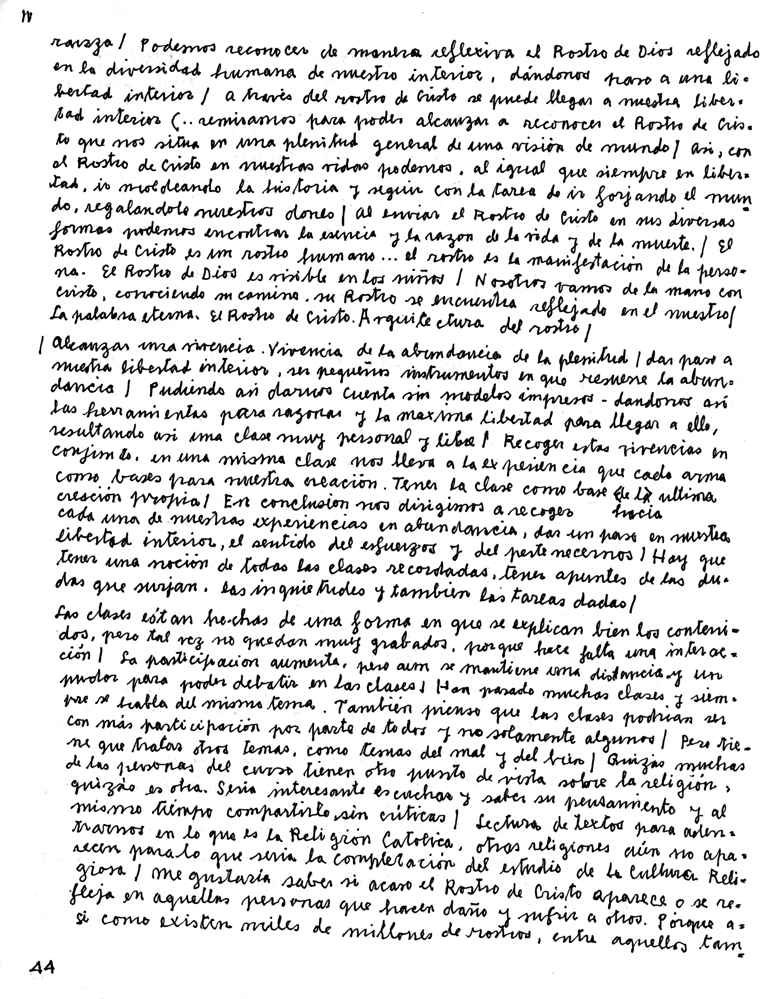
IV ranza/ Podemos reconocer de manera reflexiva el Rostro de Dios reflejado en la divinidad humana de nuestro interior, dándonos paso a una li- bertad interior/ a través del rostro de Cristo se puede llegar a nuestra liber- tad interior (...revisarnos para poder alcanzar a reconocer el Rostro de Cris- to que nos situa en una plenitud general de una visión de mundo/ Así, con el Rostro de Cristo en nuestros vidas podemos, al igual que siempre en liber- tad, ir moldeando la historia y seguir con la tarea de ir forjando el mun- do, regalandole nuestros dones/ al enviar el Rostro de Cristo en sus diversas formas podemos encontrar la esencia y la razon de la vida y de la muerte./ El Rostro de Cristo es un rostro humano ... el rostro es la manifestación de la perso- na. El Rostro de Dios es visible en los niños/ Nosotros vamos de la mano con Cristo, conociendo su camino, su Rostro se encuentra reflejado en el nuestro/ La palabra eterna. El Rostro de Cristo Arquitectura del rostro/ /Alcanzar una vivencia. Vivencia de la abundancia de la plenitud/dar paso a nuestra libertad interior, ser pequeños instrumentos en que resuene la abun- dancia/ Pudiendo así darnos cuenta sin modelos impresos - dandonos así las herramientas para razonar y la maxima libertad para llegar a ello, resultando así una clase muy personal y libre/ Recoger estas vivencias en conjunto, en una misma clase nos lleva a la experiencia que cada arma como bases para nuestra creación. Tener la clase como base de la última creación propia/ En conclusión nos dirigimos a recoger hacia cada una de nuestras experiencias en abundancia dar un paso en nuestra libertad interior, el sentido del esfuerzos y del pertenecernos/Hay que tener una noción de todas las clases recordadas, tener apuntes de las du- das que surjan, las inquietudes y tambien las tareas dadas/ Las clases están hechas de una forma en que se explican bien los conteni- dos, pero tal vez no quedan muy grabados, porque hace falta una interac- ción/ La participación aumenta, pero aun se mantiene una distancia y un pudor para poder debatir en las clases/Han pasado muchas clases y siem- pre se habla del mismo tema. También pienso que las clases podrían ser con más participación por parte de todos y no solamente algunos/ pero tie- ne que tratar otros temas, como tema del mal y del bien/ Quizás muchos de las personas del curso tienen otro punto de vista sobre la religión, quizás es otra. Sería interesante escuchar y saber su pensamiento y al mismo tiempo compartirlo sin críticas/ Lectura de textos para aden- trarnos en lo que es la Religión Catolica, otras religiones aún no apa- recen parado que sería la comparación del estudio de la Cultura Reli- giosa/ Me gustaría saber si acaso el Rostro de Cristo aparece o se re- fleja en aquellas personas que hacen daño y sufrir a otros. Porque a- si como existen miles de millones de rostros, entre aquellos tam- 44
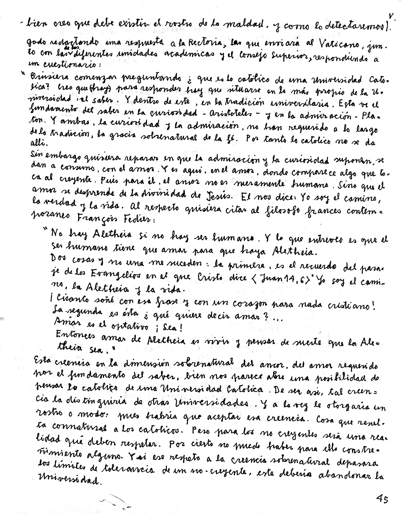
V
-bien creo que debe existir el rostro de la maldad. y como lo detectaremos/.
Godo redactando una respuesta a la Rectoria, la que enviará al Vaticano, jun-
to con la de las diferentes unidades academicas y el Consejo Superior, respondiendo a
un cuestionario:
“Quisiera comenzar preguntando ¿que es lo católico de una Universidad Cato-
lica? Creo que para responder hay que situarse en lo más propio de la U-
niversidad: el saber. Y dentro de este, en la tradición universitaria. Esta ve el
fundamento del saber en la curiosidad - Aristóteles - y en la admiración - Pla-
tón. Y ambas, la curiosidad y la admiración, no han requerido a lo largo
de la tradición, la gracia sobrenatural de la fé. Por tanto lo catolico no se da
allí.
Sin embargo quisiera reparar en que la admiración y la curiosidad suponen, se
dan a consuno, con el amor. Y es aquí, en el amor, donde comparece algo que to-
ca al creyente. Pues para él, el amor no es meramente humano. Sino que el
amor se desprende de la divinidad de Jesús. Él nos dice: Yo soy el camino,
la verdad y la vida. Al respecto quisiera citar al filosofo frances contem-
poraneo François Fedier:
“No hay Aletheia si no hay ser humano. Y lo que entreveo es que el
ser humano tiene que amar para que haya Aletheia.
Dos cosas y no una me suceden: la primera, es el recuerdo del pasa-
je de los Evangelios en el que Cristo dice (Juan 14,6) “Yo soy el cami-
no, la Aletheia y la vida.
¡Cuanto soñé con esa frase y con un corazon para nada cristiano!
La segunda es ésta ¿qué quiere decir amar? ...
Amar es el optativo ¡Sea!
Entonces amar de Aletheia es vivir y pensar de suerte que la Ale-
theia sea.”
Esta creencia en la dimensión sobrenatural del amor, del amor requerido
por el fundamento del saber, bien nos parece abre una posibilidad de
pensar lo catolico de una Universidad Catolica. De ser así, tal creen-
cia la distinguiría de otras Universidades. Y a la vez le otorgaría un
rostro o modo: pues habría que aceptar esa creencia. Cosa que resul-
ta connatural a los catolicos. Pero para los no creyentes sería una rea-
lidad que deben respetar. Por cierto no puede haber para ello constre-
ñimiento alguno. Y si ese respeto a la creencia sobrenatural deparara
los limites de tolerancia de un no-creyente, este debería abandonar la
Universidad.
45
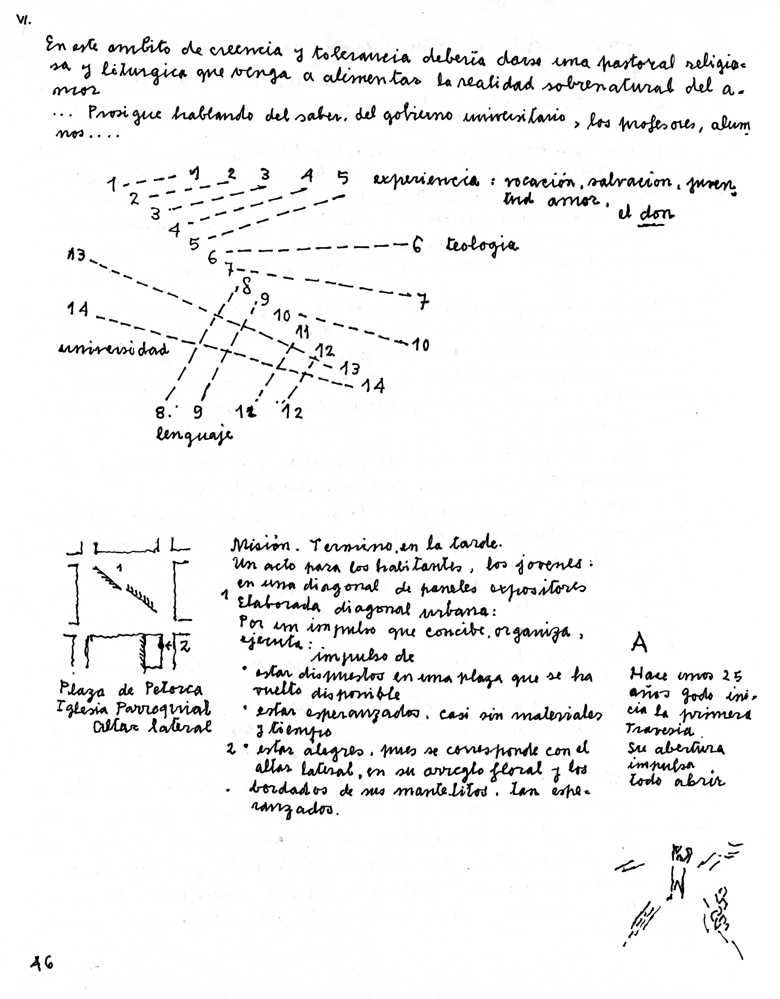
VI.
En este ambito de creencia y tolerancia debería darse una pastoral religio-
sa y liturgica que venga a alimentar la realidad sobrenatural del a-
mor
... Prosigue hablando del saber, del gobierno universitario, los profesores, alum-
nos....
1 ----- 1 2 3 4 5 experiencia: vocación, salvacion, juven-
2 -------- tud amor,
3 ----------- el don
4 -----------
5 -----------
13 6 ------------------- 6 teologia
7 -----------------
8 7
14 9
10 ---------- 10
universidad 11
12
13
14
8 9 11 12
lenguaje
Misión. Termino en la tarde.
Un acto para los habitantes, los jóvenes:
1 en una diagonal de paneles expositivos
1 Elaborada diagonal urbana:
Por un impulso que concibe, organiza,
ejecuta: A
impulso de
• estar dispuesto en una plaza que se ha Hace unos 25
vuelto disponible años Godo ini-
Plaza de Petorca • estar esperanzados, casi sin materiales cia la primera
Iglesia Parroquial y tiempo Travesía.
Altar lateral 2 • estar alegres, pues se corresponde con el Su abertura
altar lateral, en su arreglo floral y los impulsa
• bordados de sus mantelitos, tan espe- todo abrir
ranzados.
46
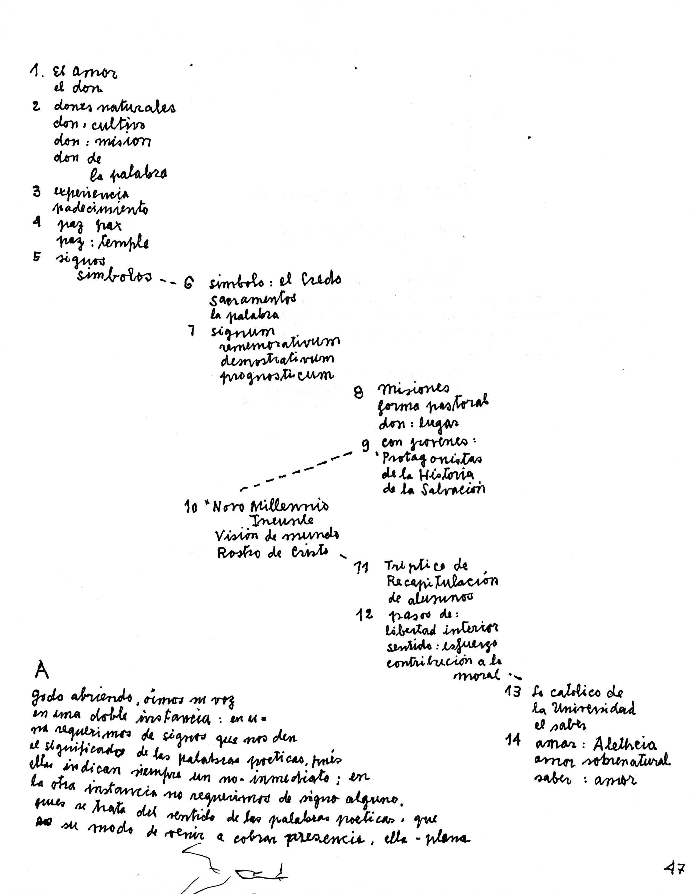
1. El amor
el don
2 dones naturales
don: cultivo
don: mision
don de
la palabra
3 experiencia
padecimiento
4 paz pax
paz: temple
5 signos
simbolos -- 6 simbolo: el Credo
Sacramentos
la palabra
7 signum
rememorativum
demostrativum
prognosticum
8 Misiones
forma pastoral
don: lugar
9 con jovenes:
Protagonistas
de la Historia
de la Salvación
10 “Novo Millennio
Ineunte
Visión de mundo
Rostro de Cristo
11 Triptico de
Recapitulación
de alumnos
12 pasos de:
libertad interior
sentido: esfuerzo
A contribución a la
moral
Godo abriendo, oímos su voz 13 Lo catolico de
en una doble instancia: en u- la Universidad
na requerimos de signos que nos den el saber
el significado de las palabras poéticas, pues 14 amar: Aletheia
ellas indican siempre un no-inmediato; en amor sobrenatural
la otra instancia no requerimos de signo alguno, saber: amor
pues se trata del sentido de las palabras poéticas, que
es su modo de venir a cobrar presencia, ella - plena
47
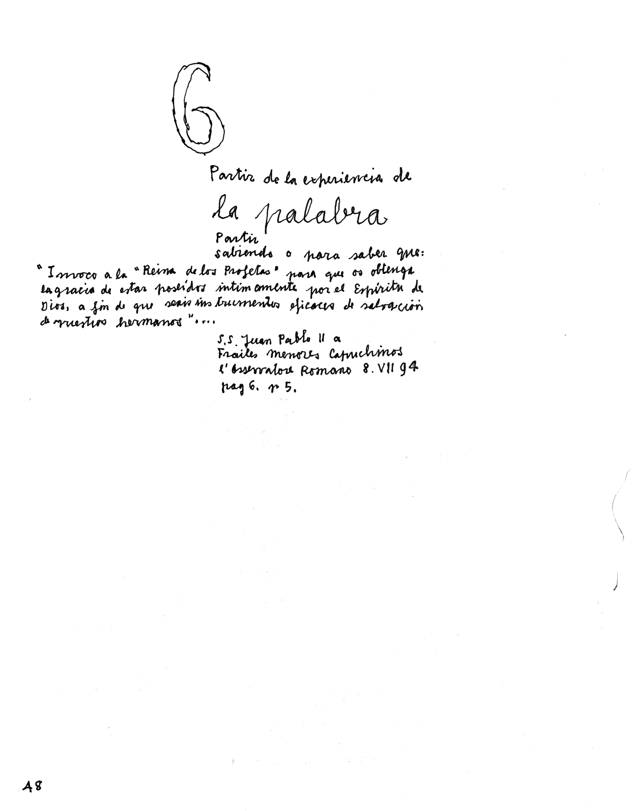
6
Partir de la experiencia de
la palabra
Partir
sabiendo o para saber que:
“Invoco a la “Reina de los Profetas” para que os obtenga
la gracia de estar poseídos íntimamente por el Espíritu de
Dios, a fin de que seais instrumentos eficaces de salvación
de nuestros hermanos”....
S.S. Juan Pablo II a
Frailes Menores Capuchinos
L'Osservatore Romano 8.VII 94
pag 6. p 5.
48
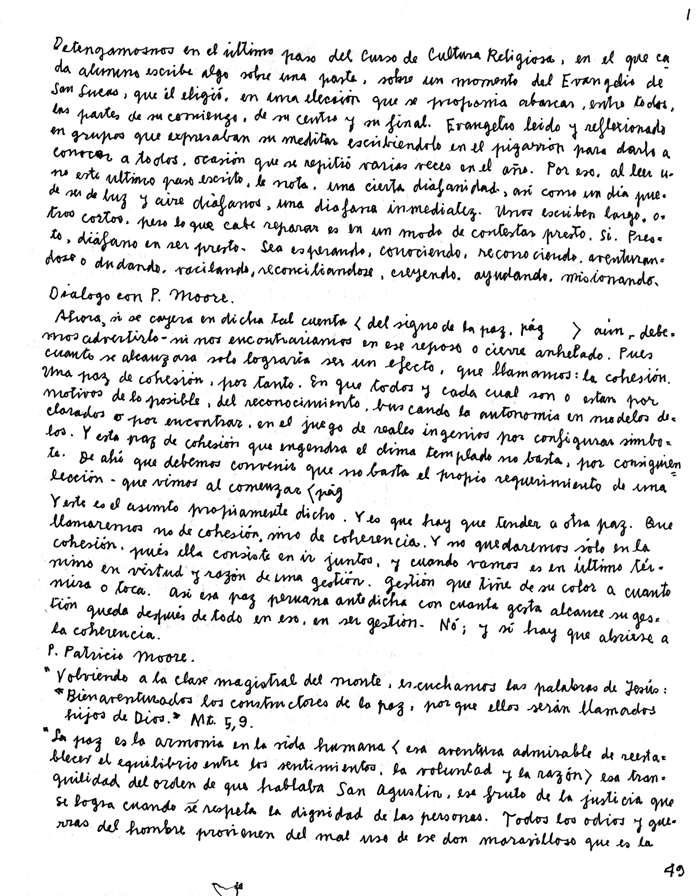
I
Detengamonos en el último paso del Curso de Cultura Religiosa, en el que ca-
da alumno escribe algo sobre una parte, sobre un momento del Evangelio de
San Lucas, que él eligió, en una elección que se proponía abarcar, entre todos,
las partes de su comienzo, de su centro y su final. Evangelio leído y reflexionado
en grupos que expresaban su meditar escribiendolo en el pizarron para darlo a
conocer a todos, ocasión que se repitió varias veces en el año. Por eso, al leer u-
no este ultimo paso escrito, le nota, una cierta diafanidad, así como un día pue-
de ser de luz y aire diafanos, una diafana inmediatez. Unos escriben largo, o-
tros corto, pero lo que cabe reparar es en un modo de contestar presto. Sí. Pres-
to, diafano en ser presto. Sea esperando, conociendo, reconociendo, aventuran-
dose o dudando, vacilando, reconciliandose, creyendo, ayudando, misionando.
Diálogo con P. Moore.
Ahora, si se cayera en dicha tal cuenta (del signo de la paz, pág > aún, debe-
mos advertirlo - ni nos encontrariamos en ese reposo o cierre anhelado. Pues
cuanto se alcanzara solo lograría ser un efecto, que llamamos: la cohesión.
Una paz de cohesión, por tanto. En que todos y cada cual son o estan por
motivos de lo posible, del reconocimiento, buscando la autonomía en modelos de-
clarados o por encontrar, en el juego de reales ingenios por configurar simbo-
los. Y esta paz de cohesión que engendra el clima templado no basta, por consiguien-
te. De ahí que debemos convenir que no basta el propio requerimiento de una
lección - que vimos al comenzar (pág
Y este es el asunto propiamente dicho. Y es que hay que tender a otra paz. Que
llamaremos no de cohesión, sino de coherencia. Y no quedarnos sólo en la
cohesión, pues ella consiste en ir juntos, y cuando vamos es en último tér-
mino en virtud y razon de una gestión. Gestión que tiñe de su color a cuanto
mira o toca. Así esa paz peruana antedicha con cuanto grato alcance su ges-
tión queda después de todo en eso, en ser gestión. Nó; y sí hay que abrirse a
la coherencia.
P. Patricio Moore:
“Volviendo a la clase magistral del monte, escuchamos las palabras de Jesús:
“Bienaventurados los constructores de la paz, porque ellos serán llamados
hijos de Dios.” Mt. 5,9.
“La paz es la armonía en la vida humana (esa aventura admirable de resta-
blecer el equilibrio entre los sentimientos, la voluntad y la razón) esa tran-
quilidad del orden de que hablaba San Agustín, ese fruto de la justicia que
se logra cuando se respeta la dignidad de las personas. Todos los odios y gue-
rras del hombre provienen del mal uso de ese don maravilloso que es la
49
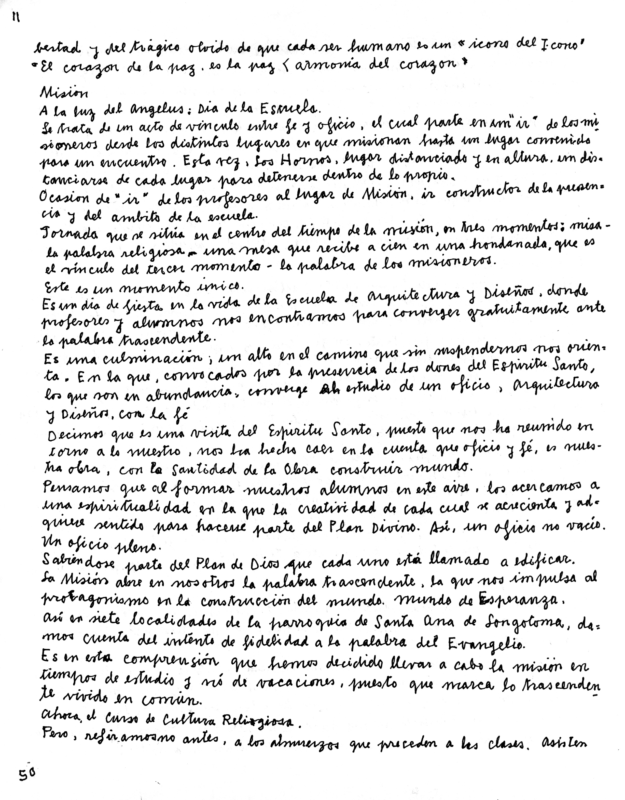
II bertad y del tragico olvido de que cada ser humano es un “icono del Icono” “El corazon de la paz, es la paz (armonía del corazon)” Misión A la luz del Angelus: Día de la Escuela. Se trata de un acto de vínculo entre fe y oficio, el cual parte en un “ir” de los mi- sioneros desde los distintos lugares en que misionan hasta un lugar convenido para un encuentro. Esta vez, Los Hornos, lugar distanciado y en altura, un dis- tanciarse de cada lugar para detenerse dentro de lo propio. Ocasión de “ir” de los profesores al lugar de Misión, ir constructor de la presen- cia y del ambito de la escuela. Jornada que se sitúa en el centro del tiempo de la misión, en tres momentos: misa - la palabra religiosa - una mesa que recibe a cien en una hondonada, que es el vínculo del tercer momento - la palabra de los misioneros. Este es un momento único. Es un dia de fiesta en la vida de la Escuela de Arquitectura y Diseños, donde profesores y alumnos nos encontramos para converger gratuitamente ante la palabra trascendente. Es una culminación; un alto en el camino que sin suspendernos nos orien- ta. En la que, convocados por la presencia de los dones del Espíritu Santo, los que son en abundancia, converge el estudio de un oficio, Arquitectura y Diseños, con la fé Decimos que es una visita del Espíritu Santo, puesto que nos ha reunido en torno a lo nuestro, nos ha hecho caer en la cuenta que oficio y fé, es nues- tra obra, con la Santidad de la Obra construir mundo. Pensamos que al formar nuestros alumnos en este aire, los acercamos a una espiritualidad en la que la creatividad de cada cual se acrecienta y ad- quiere sentido para hacerse parte del Plan Divino. Así, un oficio no vacío. Un oficio pleno. Sabiendose parte del Plan de Dios que cada uno está llamado a edificar. La Misión abre en nosotros la palabra trascendente, la que nos impulsa al protagonismo en la construcción del mundo. Mundo de Esperanza. Así en siete localidades de la parroquia de Santa Ana de Longotoma, da- mos cuenta del intento de fidelidad a la palabra del Evangelio. Es en esta comprensión que hemos decidido llevar a cabo la misión en tiempos de estudio y nó de vacaciones, puesto que marca lo trascenden- te vivido en comun. Ahora, el Curso de Cultura Religiosa. Pero, refiramonos antes, a los almuerzos que preceden a las clases. Asisten 50
III
los profesores de Cultura Religiosa y los de la Escuela que participan en el curso
mas el Director de la Escuela e incidentalmente diversos profesores y ayu-
dantes. El almuerzo no es solo para organizar la clase que vendrá ensegui-
da y la marcha general del curso, sino tambien es momento de formación
para los arquitectos y diseñadores, así se da la preocupación por ir leyendo,
interpretando y comentando obras de Teologia, o bien escuchando trabajos
escritos de los profesores sacerdotes, los que se han repetido, las más de las
veces, en la Ciudad Abierta, en reuniones de asistencia amplia. Así mismo, en
los ultimos años, se da cuenta de una acción que lleva adelante la comu-
nidad juvenil de Schönstatt en la que visitan por la noche llevandoles co-
mida y consuelo a desamparados que duermen en las calles en lecho del Estero.
Todo ello es ya una suerte de tradición que ha venido fortaleciendose con los
años y sabedores de esto han venido en algunas ocasiones, autoridades u-
niversitarias, del Instituto de Teología....
Así, por ejemplo en un almuerzo el P. Pedro Gutiérrez habla del Rostro de
Cristo, del rostro del hijo, del doliente, del resucitado. Entonces discurrimos
como lograr que la vivencia de asistir a la clase se abra a una experiencia,
la de una interna meditación en el alumno. Se nos hace presente un
distingo de la Arquitectura y los Diseños, aquel entre figura y forma;
en que figura es la constitución de los antecedentes, de los requerimientos,
de las condiciones tanto de índole factica como de anhelos, anhelantes; y
en que forma es la constitución de un orden de belleza, que se levanta
desde la figura. Entonces, nos decimos que analogicamente el hombre -
imagen de Dios - podría corresponder a la figura y el Rostro de Cristo, a
la forma. Palpamos que en estos modos de discurrir, de pensar, no
se debe esforzarse en avanzar anhelantemente en una misma direc-
ción sino que se puede trasladarse a otra; así nos preguntamos que
acaso la figura venga a ser oración de petición y la forma, oración
de alabanza. Y vayamos, por tanto, a otra dirección: la obra, en la
que esta es un origen que alcanza su generación, siendo el origen el
acto del habitar que le da la razón de ser a la obra, siendo su genera-
ción, la corporificación de un acto sea en un edificio, un conjunto de e-
llos con sus circulaciones, jardines... sea un libro, un mobiliario...
en los Diseños. Y aun vayamos a otra dirección: aquella de la cla-
ridad. En que una obra es, por cierto, fruto de un oficio, el que es pensamien-
to y practica, y ambos, son a su vez, frutos de una visión, y ella lo
51
IV
es una claridad, que ilumina al oficio, a sus obras, y que evidentemente im-
plica su no dispersión, sino que su concentración, la cual se profundiza
cada vez mas volviendose más clara. Y desde tal claridad ha de escuchar
la palabra de Dios que de suyo, es de sobreabundancia, de sobreclaridad, es-
tableciendose de esta manera la vivencia que llega a ser experiencia de la re-
lación de la claridad y sobreclaridad. Pero un oficio no es solo visión - pen-
samiento y practica que obra, es al unisono conciencia y entusiasmo, lo que
podemos entender como espiritualidad. Esta escucha a lo sobreabundante re-
conociendo los “signos de los tiempos”, en que ellos señalan que el anuncio de
lo definitivo, de lo eterno, comienza a anticiparse en nosotros. A lo cual he-
mos llamado en nuestro propio lenguaje: ciernes. Somos en ciernes. En u-
na tal experiencia. Lo que es es la belleza - nos decimos. Otra dirección
nos llama; pero no proseguiremos a ella: exodo...
... Ahora vayamos a la primera clase del curso de Cultura Religiosa, como
ella no pudo ser dada por el profesor sacerdote, por estar enfermo, uno
de nosotros se hizo cargo, concibiendo a la clase como perteneciendo a un
regimen de Taller, el que oye entrando en actividad. Aquella de prepararse
para recibir. Y él traza el (alg) (atco) acto de recibir a una visita importan-
te: ordena lo existente,
re-ubica las cosas
ordena
limpia saca brillo... Tal prepa-
ración. Tal mirada que re-mira lo existente. Lo habitual, el presente.
Vamos a mirar nuestro presente, don de Dios: presente eterno
¿Cual es nuestra posición, hoy, ante Dios? ¿Como estoy parado ante Dios?
El presente personal de cada cual, expresado en un escrito. El que vendrá
a ser una preparación que accede a recibir. Y expone la forma de un
edificio, El Escorial, la que contempla simbolicamente el acceso ordena-
do ante Dios.
Una vez terminada la clase y antes que los alumnos se dispongan a irse,
en casi todas, podíamos decirles a ellos que llevaran adelante un cuader-
nillo propio, íntimo, en que el alumno fuera anotando las impresiones re-
cibidas o que se le pasaron por la cabeza en la clase. Dicho cuadernillo es
distinto, es otro que la carpeta de apuntes de las clases, la que es presentada
al examen; él no es presentado a nadie, el alumno es dueño de darlo a
conocer como y cuando le parezca; el profesor no lleva ningun control
de ello - por tanto; pero confia en que todo bien sucederá. Dicha confian-
za. Modo de impartir la enseñanza. Y modo, al mismo tiempo, que
el alumno comience a acometer la realización de la creatividad, cual
52
V.
una consumacion del construir, del expresar la razón de ser de dicha cons-
trucción y del exponer o entregar a otros esa construcción que expresa
su razón de ser. El cuadernillo es así, en alguna medida, una suerte de
recapitulación. Acaso lo mas tenue. En el sentido en que recapitular, - re-ca
pitular, cabeza - es íntimo re-mirar y remirarse. Podría tenerselo co-
mo un acto de edificación espiritual. Que al saberse de los cuadernillos en-
tre los alumnos, ellos se edificaran mutuamente. El cuadernillo viene así,
a corresponder en alguna manera, a ese rato despues de la clase en que los sa-
cerdotes se detienen con los alumnos en una labor pastoral del uno a uno.
El uno a uno de un libre cuadernillo que sabe en la confianza del profesor,
confianza que lo tiene por “ordenado, limpio, sacado el brillo”. Vale decir,
que prepara. A lecturas, del Santo Padre, de teólogos que el curso va reco-
mendando. Y que los profesores incrementan en sus reuniones semanales con
ellos.
Cabe ahora referirse nuevamente a lo siguiente: (ver pag ) En un comien-
zo de la actual orientación de la Escuela, 1952, el curso de Cultura Religio-
sa y la Pastoral Universitaria se llevaba adelante de una manera paralela
a la marcha de la Escuela, y ha sido un desarrollo muy lento el que
ha permitido que la dimensión religiosa venga a ser algo centrico. Clases
libres con el Padre Capuchino Juan Ochorí, vasco tocando la guita - olvi-
do que hay que recuperar - un año en la Casa de la Escuela, al siguien-
te en su convento, fué la primera iniciativa. Las Misiones, las reunio-
nes almuerzo, la Ciudad Abierta han permitido el estado actual. En el
que debemos reconocer que no podemos reconstituir los sucesivos progra-
mas del Curso de Cultura Religiosa. Estos eran definidos por la Pastoral
Universitaria y despues de la “Re-originación” de la Universidad, en
1967, que creó el Instituto de Teología, por este. Ahora, quisieramos
anotar un programa: 1º semestre: El Credo
2º : La doctrina Social de la Iglesia
Credo: Creador del Cielo y de la Tierra
Dos textos biblicos que introducen al tema de la Creacion
1: Genesis 2,4-25. que es el texto más antiguo sobre la Creación: 1000 a.C.
En el Cap 1. se crea al hombre a imagen y semejanza de Dios
Relata la creación en 7 dias
Cap 2 Dios insufló en el hombre el Espíritu de Vida
El verbo que se utiliza en la creación es distinto al de la creación del
hombre
2. Salmo 8. Oh Yahvé, Señor nuestro que grandioso es tu nombre: 600 a.C.
La esencia del ser se funda en Dios.
hombre
53
VI
1 leer
Evangelio
reflexiones
escritas:
inmediatez
diafana --- 2 cohesión
paz de
cohesión
coherencia
gestion
3 paz
fruto: justicia
dignidad: personas
icono del Icono ------------------- 4. Misión.
Angelus.
Día de la Escuela.
Hacerse parte del
Plan Divino ---- 5 Reunion Profesores
organización:
clases
estudio: obras de
teologia
6 Rostro de Cristo: -------------------------------------
figura: los previos
forma: belleza
oracion: peticion
alabanza ------------------------------------- 7 obra: origen
generación
8 claridad ----------------------------------------------
sobreclaridad
espiritualidad
signos de los
tiempos ----------------------------------------- 9 prepararse
para recibir:
reubicar
ordenar
limpiar
10 cuadernillo sacar brillo
alumno
intimo
mutua
edificación
11 tenue ------------------------------
recapitulacion
12 El Credo:
La doctrina
Social de la
Iglesia
54
Alguien me señala cuan largos son los escritos de los teólogos en comparación con lo con-
ciso de las oraciones liturgicas, aun más largos resultan estas páginas que se
proponen - digamos - habitar lo que se dice: por eso se requieren de estos
morfismos de término en cada capítulo:
1 3 6 8 11 12 Teologia
1 ---
2 ----------------------------- 2 Ciudad. Universidad
3
5 4
5
6
7 7
8
9 9
10
experiencias: 11
vocacion 12 B
salvacion 4 10 Apuntes directos de clase
juventud lenguaje Isabel Margarita Reyes
amor del oficio
don la Creación en 7 dias
palabra 1 luz - oscuridad
2 las aguas en la tierra y en el cielo 1.4
3 Mar y vegetación
-----------------↑--
Dios separa las cosas: 4 Estrellas ↓ 2.5
las obras que distinguen 5 Animales obras de
y las condiciones para 6 Hombre ornamento 3.6
para que se den lo que habita
las creaciones de lo primero escrito
los siguientes 3 dias. comienza en forma
la creación con paralela
la formula
“Y Dios habló
para cada día
B al principio con la Palabra
S. Juan 1.
Puede considerarse que al final de
estos apuntes de I.M.R. las creaciones
significan un modo de “Y Dios vió que era bueno”
tomarlos, construirlos pero al final
que tienden al “mejor de la creación
apunte”. Es un tender, del hombre
entonces, a la perfec- “Y Dios vió que era muy bueno
ción, que no permane-
ce en maneras de im- 7 Sabath
perfeccion “Y Dios terminó su obra”
Por cierto, nos encon- en que Dios contempla la creación
tramos en lo natural
55
7
Partir de la experiencia de
la libertad
Partir
sabiendo o para saber que:
“Que la Santísima Virgen eduque a todos en el senti-
do del amor.
Meditacion mariana
del Santo Padre
L'Osservatore Romano 8.VII.94
pág 1. p 3.
56
I
Continuemos deteniendonos en ese decir de los alumnos en la conclusión
de su año universitario del Curso de Cultura Religiosa, para señalar que
esa diafana inmediatez presta antedicha, señala lo que es una experien-
cia de la libertad, cual si en el ámbito del curso se hubiera recibido un
don, un don en que por un momento cada cual se viera sencillo, no des-
garrado por los más diversos afanes. Ello: un signo de nuestro propio
tiempo. Un signo que es regalado al curso. Que como anotabamos en una cla-
se anterior, el curso era con alumnos que llevaban en el cuerpo una gran
cantidad de dibujos y una gran cantidad de kilometros recorridos por el
Taller. Alumnos que desde la tarea, sencillamente reciben al Espíritu San-
to que es amor. Y al amor que es presente.
Diálogo con P. Moore
Tomando la coherencia: el co-heredar, ser coherederos. Se recibe por tanto algo an-
terior. Que heredamos a justo titulo. Por tanto, en nuestros dias, se trata de la
multitud heredada, la multitud en un acto de heredar. Y es aquí donde se
queda en el portico del pensar teologico. En una aproximación, la más rápi-
da de hacer: la cohesión al querer el querer alcanzar a ser coherencia se ubica
en el portico del misterio religioso y su modo de ser en la Iglesia así ....
al ser miembros del Cuerpo Mistico.
Tal hablar último entre puntos suspensivos indica que nos encontramos
ante el requerimiento de poder avanzar en el plano o la esfera de lo teologico. Por
tanto se hace notar la necesidad de una pastoral al respecto. Una pastoral u-
niversitaria. Una basica, pues es para docentes. Pero no podemos dejar de
comprender: no se trata de clases. De univocas clases que dicten teólogos y o-
yen y asimilan profesores.
Pues nos parece que, todo cuanto interpretamos como el momento actual no
puede ser ignorado; aunque naturalmente pueda y deba ser medido y valo-
rizado con otras y mayores luces. De todas maneras compareceran las “cons-
tantes actuales”, así cabe llamarlas. Por tanto, han de consultar que se
les practique un examen. Uno que se venga a dejar el hablar univoco ante-
dicho por uno multivoco. Piénsese, volviendo a lo anteriormente expuesto a-
cerca de simbolos, permanecer en un simbolo que queriendolo o no es un sim-
bolo de gestión.
P. Patricio Moore:
“A menudo nos sentimos hoy prisioneros del presente: es como si el
57
hombre hubiera perdido la conciencia de que forma parte de una histo- ria que lo precede y lo sigue.” (OL,8). Ni siquiera percibimos la tiranía y el culto a lo actual, quizás sentimos miedo de mirar por la ventana del pasado y por el umbral del futuro. La memoria viva fué la manera de pensar y de vivir del pueblo de Israel. Y todas sus catastrofes se debie- ron a la amnesia colectiva de querer olvidar la alianza con Dios. La “belleza de la memoria” de lo que amamos nos regala la fuerza pa- ra la vida. Somos testigos de la fé porque somos hijos de testigos que amaron primero. No te olvides nunca Israel que fuiste un judío errante en Egipto... y estan- do en camino o en reposo no olvides nunca de decirle a tus hijos que hay que amar a Dios con todas tus fuerzas, con toda el alma y con toda la vida.... Somos herederos de una fidelidad creadora a la tradición. “memoria vi- va de la Esposa conservada eternamente joven por el amor que habita en ella (OL,8) “Misión a la luz de lo que se recoge: oración de la luz El decir de los misioneros. “Fé en un ir descubriendo en el interior, un ir haciendose uno en lo más profundo de lo simple. Vida, lo cotidiano se hace extraordinario, el vivir con el otro, me encuentro con los demás. Todos somos uno. Uno aparece en mi como todo lo que existe en el lugar Somos diferentes tanto misioneros como los misionados, pero la Misión hace abrirnos para dejar los los corazones para recibir esas diferencias y a- marlas, descubrimiento de individualidades que nos enseñan a ser me- jores personas. Personas que tal vez no volvamos a ver, pero sabemos, que el recuerdo de lo vivido jamás se olvidará. Guardar en el corazón Nosotros simples personas que sin conocernos nos enfrentamos a una vida intensa. En una semana sentir. Gracias por compartir Caleta circulo abierto. un Mar se abre y escapa 58
III
Un horizonte de Niños
tope en la Acogida
bajo un Fuego que ilumina las Estrellas
las que vuelcan a la Mesa
Oído Y Ser Oído
un Circulo Cerrado
Cada uno forma parte de un regalo comun que es la espiritualidad de cada
cual expuesta como inicio de un envío.
Tres instancias, en donde lo íntimo se vuelve acto : La Misión en sí, la hospita-
lidad y, la mesa.
LA Misión en sí, el ir puerta a puerta, devela en el uno y en el otro la propia inte-
rioridad. Cada casa es un acto de ser huesped en lo comun de ser partícipes de los
mismos dones.
Una nueva familia,
la amistad por sobre todo,
dar y recibir amor.
la union del grupo,
la belleza en lo simple de la personalidad,
mirar como niño,
fortalece que rompa con los extremos que regala el equilibrio,
experiencia donde el misionado es uno mismo,
la amistad hecha familia,
tiempo en que lo cotidiano se revela, se desvela en su más maravillosa realidad
amanecer para conocer amanecer para amar amanecer para servir
amanecer es siempre una nueva oportunidad. amanecer es siempre un desafio
amanecer siempre, para que algun dia ese verdadero amanecer sea Dios.
La hospitalidad, o construir la forma de la comida.
Regalar el sentido de reunirnos.
La mesa construida que convoca y reune.
El estar en el lugar nos entregó la gratitud de la gente, del grupo y, de
cada uno.
Clase de Cultura Religiosa
Refiramonos primeramente a ese señalar de algunos alumnos que no se da-
ba una participación para ellos que fuera activa, abundante, continua -
ver pág - Debemos, para nosotros mismos advertirnos que lo que se ha
practicado es aquel modo que en la Ciudad Abierta se llama la Ronda, la
que en el curso se constituyen con comentarios escritos a los alumnos sobre
la materia tratada, realizados durante la clase o bien en sus casas y que los
59
IV
profesores sacerdotes y los profesores arquitectos-diseñadores examinan en sus
casas para encontrar en ellos los aciertos. Los que son expuestos en la clase siguiente
de viva voz y el pizarron. Entonces:
alumnos: A; profesor P; A
─
P
1. A: esperar: condición propia de los actos
P la Montaña. Subir
2 A: hay que cuidar el nacimiento de algo, recogiendolo como algo perpetuo
P la Montaña. Subir
3 A: anticipación de una comprensión del futuro
P. la Montaña. Subir
4 A: encaminarse todos a la palabra en ascendencia
P la Montaña. Subir
5 A: La Palabra de Dios que invita a acercarnos a El
P para reconciliar - sanar
6 A: La religión se ha formado a traves de anuncios de Dios a los hombres
P. para reconciliar - sanar
7 A: los resucitados iguales para estar y vivir en Nuestro Dios
P para el reconocimiento y seguimiento
8 A: ayudar: hacerlo, uno mas como persona
P la gran Semana Santa
9. A: valientes al determinar el propio camino
P la gran Semana Santa
10 A: perdón viendo la debilidad humana
P la gran Semana Santa
11 A: el SI, sin esperar nada en cambio, un sin medida, sin ella con qué se actúa
P el signo de identificación comunion
12 A: querer - creer - enseñar
P el signo de identificación comunion
13 A: claridad: no sombras que atormentan
P la aventura de la paz
14 A: Campo, campo del Señor, El Todopoderoso lo que trae
P la aventura de la paz
15 A: el abrir una creencia a la observación lleva a un consenso entre creyentes
y no creyentes
P la aventura de la paz
60
V
16 A: cuestionarse tantas cosas. Paz en la misa.
P la memoria de la Esposa
17. A: humildad, no posee la unica verdad, se remira
P la memoria de la Esposa
18 A: creo en Dios plenamente, pero no se si tanto en la Iglesia en general,
la memoria de la Esposa prueba, sale fortalecido.
19 A: Camino peligroso el de las riquezas
P signos de los tiempos
Conformando la Ronda
1
2
3
4
5
6
7
8
9
10
11
12
13
14
15
16
17
18
19
A B C D E F G H P: el mayor amor, la mas grande libertad
└────────────┘ la certeza
R. ronda
El poeta al pasar va diciendo:
Nosotros hablamos en sujeto, verbo, predicado: la mesa es blanca El orden o
sintaxis es tanto mas claro cuanto mas lineal sea. Sin embargo puede decir:
“blanca es la mesa” y altero la sucesión. El Ion está escrito en dialogo.
Nietzsche escribe en aforismos o proposiciones. No es así una linealidad abso-
luta sino interrumpida, cortada. Luego ya no se trata solamente de inver-
siones sino de quiebres. No establezco un pensamiento absolutamente lineal.
Ello no es una consecuencia externa sino interna de lo que quiero decir.
Para poder hablar estoy inscrito en la sucesión del antes, después, del ahora.
¿Quien puede decir una palabra que no tiene que ver con ahora y que no sea
lineal? “ahora, montaña”. “ahora, cerro”. No hay posibilidad al-
61
VI
guna de singularizar sino se funda en lo homogeneo. No hay manera
de hacer algo que no sea una construcción y apoyandose en una cons-
trucción”.
las hojas de los alumnos
las mas representativas
Es connatural al profe- Es connatural al alum-
sor un acto espacial de no de arquitectura y Di-
simultaneidad, extendien- seños acompañarse con
do y ordenando las hojas el dibujar al pensar lo
en el suelo de la sala, sin que va escribiendo. No
sobrecuidarlas ni des- hay que alentarlo ni des-
cuidarlas; tal como en alentarlo: que surja la
este preciso momento. connaturalidad como
ordenados tal
conforme al Dialogo
con el P. Pratricio Moore
Puede entenderse que todo este quehacer viene a constituirse el espacio del Curso de
Cultura Religiosa, o el espacio de la Santidad de la Obra, aún unos profesores-teolo-
gos lo consideran como un aporte a la enseñanza. Sea. Sin embargo, por el mo-
mento no es todavía algo concluso y el espacio, lo espacial de suyo lo es. Hay que
proseguir, entonces. Ya se han expuesto en la clase, en el suelo de la sala, las la-
62
VII
minas u hojas con dibujos, esas representativas, conformando ellas se diría que un
jardín, en cuanto este es un suelo cuidado para el florecer. En tales ocasiones
venían a la memoria una exposición del P. Ignacio Chuecas, “El jardín del
Paraíso”; un estudio de su Doctorado, o en las ruinas de Italica, en Sevilla,
esos restos de pavimentos con el vibrar aún incólume de los trazos de sus figuras.
También hace años había anotado que los jardines simbolicos encienden las observa-
ciones.
Con el comienzo de esa segunda fase de la enseñanza del curso de Cultura Religiosa,
(ver pág > y junto con el inicio de las misiones se constituyó un acto de bendi-
ción en que se despedía a los recién Titulados que en ese momento dejaban de estar
bajo la potestad de la Escuela, y antes de recibir la bendición se les entregaba un cua-
derno dedicado personalmente a cada uno; el cuaderno editado por los Talleres de Gra-
fica de la Escuela contenía un texto religioso con una breve introducción de los pro-
fesores teologos y de los profesores de Arquitectura y los Diseños, más la compañía
de alguna observación de estos ultimos. Dicha intimidad creativa. Real:
1 ------------- Lecturas 2 Diálogo
del Santo Padre entre dos textos
Juan Pablo II Tiempo de
con motivo de Travesía
su visita a A.C.C.
Tierra Santa Silencio
2 ----------- 4 3 Palabra
gracia
Roberto Navarro
1 Traer una obser- 1 La capacidad del
vación de hace mu- ojo para ser visto
chos años. De las 2 La perfeccion del
primeras trono cortado por
2 La transversal es la mano
la paralela al pro- 3 ¿entonces?
pio rostro - a su 4 para A.A.G
mirar.
Es lo proximo
Prólogo Prólogo
Cuando los que hoy egresan ingresa- El silencio, la misión y la clase maduraron en
ron a la Escuela llegó un silencio que un tiempo determinado: la Noche. Es la ley
dió curso a las misiones con los rega- fundamental de la maduración del reinado
los de la Escuela a los misionados; y de Dios en nuestro medio. La Cruz llega a la
cuantos trabajaron dormían sus plenitud en la Noche del jardín de los Oli-
noches, pero en la noche maduraba vos. El dialogo más hermoso de Jesus con
.... y este es asunto de teólogos - un fariseo que esta muy cerca del reino, ocu-
por eso este prólogo pasa a rre durante la Noche. La elección de los más
63
VIII
a uno de ellos; no como huida nues- cercanos a Jesus acontece después de una
tra, sino como sentido de proclama- larga vigilia de oración nocturna. La epi-
ción fanía del Resucitado a los discipulos de
Emaús comienza con la llegada de la
Noche.
Dedicatoria Todo esto nos señala que la Gracia, que
Este escrito que representa el modo de a- es siempre regalo, se nos anticipa de mo-
bordar de la Escuela, que a su vez, ha- do desbordante y absoluto, realizando la
bla de la intimidad, de la intimidad maduración en el hombre desde la más
que se expone, exponerse en el sentido profundo, desde la hondura de la exis-
de arriesgar, arriesgarse, nos parece tencia; por eso la Noche.
que puede servir a lo largo de los a- P. Roberto Navarro
ños de recuerdo de la bendición que se
recibió como el primer acto en el
momento de dejar la Escuela, al e-
gresar de ella.
1 6 7 8 9 13 teologia
1 -----
2 ----------------------------- 2 universidad. Ciudad
3
11 4
5 ----------------------- 5
6
12 7
8
14 9
10
experiencias 11
vocacion 12
salvacion 13
juventud 14
amor 15
don 16
palabra 3 4 10 15 16 A
libertad lenguaje palabra
oficio poética
Dado el regimen universitario actual *
en que se cuida la formación del profe-
sor, su perfeccionamiento que incluye
periodos dedicados a reactualizarse, hay
que ocuparse del Co-profesor de Cultu-
ra Religiosa, el corre con la organiza-
ción practica del curso y con la perma-
nente ubicación de este dentro de la Escuela
64
IX
1 el don de
la sencillez
signo de
los tiempos -- 2. co-herederos
acto de
heredar ---- 3 portico
teologico
4 pastoral
basica
5. constantes --
actuales
6 prisionero -----
del presente
7 amnesia de
alianza con Dios
8 la belleza de
la memoria
9 herederos de
una fidelidad
a la Esposa ------------------ 10 oracion de luz
el decir de
los misioneros
11 la ronda de
los aciertos
12 la razon:
alumno
────── B
profesor
13 la certeza --------------------------------- 14 el espacio
del curso
15 la bendición de
los titulantes
16 los regalos
los prólogos
las observaciones
__________________________________
A. la poesía.
construcción
la singularización
se funda en lo homogeneo
alumno
────── B
profesor
el alumno aprende aprende 100 aprende 1
─────────────────── = ─────────── = 1 ──────────── = 0,01.
el profesor enseña enseña 100 enseña 100
el alumno habla por si, de si x * expone la maduración
───────────────────────────── = ─── del “Co-profesor.
el profesor juzga, abriendo 100
65
8
Partir de la experiencia de
la solidaridad
Partir
sabiendo o para saber que:
“... Y, he aquí que nosotros piedras vivas, profesamos
esta verdad sobre nuestra vida nueva, sobre nuestro ser
en Cristo, piedra angular, acerca del hecho de estar pe-
netrados por el Espíritu de la Pascua y Pentecostes.
Profesamos una verdad que hacemos manifiesta median-
te cualquier templo, cualquiera iglesia visible que alza-
mos en la tierra..”
Homilía de Juan Pablo II
en Tarento; domingo 29.X.
L'Osservatore Romano 3.XII.89
pág 16, p 4.
66
I
Prosiguiendo en la ultima clase de Cultura Religiosa, y permaneciendo en a-
quello dicho en capítulo anterior, que el amor es presente, consideramos del
caso guardar ese ultimo escrito de los alumnos, para que lo conozca el
curso que ha de realizarse el proximo año, por supuesto, que tal dar a cono-
cer sea concorde con la manera en que él lleve adelante su desarrollo. Pues
hemos podido tocar la vocación, la salvacion, la edad decisiva, el amor,
el don, la palabra, el presente, queda aún la solidaridad. Ella es dar los
dones recibidos. Dar es intercambiar dones - por eso dejamos ese ultimo
escrito del alumno al cuidado de su memoria de autor. Tal responsabili-
dad, la que es por gratitud.
Diálogo con el P. Moore.
“Por eso - ver pag > adelantandonos acaso indebidamente, podría considerar-
se como uno de los quicios o goznes de ese hablar multivoco, lo fuera el signo
o simbolo del propio quehacer, el que - como se dijo hace un momento - se ubica
en lo portico de lo teologico. Pero hay que agregar sobre la marcha: para que ese goz-
ne comience a obrar es del todo necesario un compromiso. La multivocidad de
esto. Uno, está claro, respecto a entender lo multivoco. Lo cual, tambien sobre
la marcha, puede provocar diferentes apreciaciones, en cuanto a lo que hoy y
cada vez más se entiende como lo factible, la factibilidad.
Estimamos que no es del caso sólo atenerse a tales reacciones. Pues la pastoral,
la pastoral universitaria, bien sabe de lo que es dable esperar. En lo inmedia-
to, en lo venidero proximo o ya lejano. Pues en aquello que se espera, importa
- a nuestro parecer - dilucidar como se estructura el compromiso. La multivo-
cidad de este. Que parte o rol le corresponde a los oficios, a sus disciplinas,
precisamente estas que saben de las “constantes actuales”. Y cuanto a la teolo-
gia enseñaría cuanto y como esas constantes son “signos de los tiempos”. De
ser así, ese gozne antedicho, aquel del simbolo podría alimentarse, iluminarse
por los signos de los tiempos.
El P. Patricio Moore:
“El compromiso con los signos (que recuerdan, demuestran y miran el fu-
turo) de los tiempos brota de la fuente inagotable que es el Evangelio. Es
Jesucristo, señor de la historia, que nos impulsa a escudriñar y discernir
las voces del tiempo a traves del Espíritu Santo, que habla a los hombres de
todas las edades. Para ello se requiere una mirada limpia que El mismo nos
regala y el silencio esencial para distinguir aquellos signos que nos conducen
67
II a los brazos del Padre, de los que nos llevan irremediablemente a los frios a- bismos de la soledad y la angustia; para escuchar la dulce melodía de la li- turgia celestial y no el ruido infernal que aturde y aleja al hombre de la felicidad (Bienaventuranzas) Es el compromiso permanente del cristiano del enseñarle al hombre a ser ver- dadero hombre. La enseñanza es un don que una mujer recibió plenamente: “María ... Icono de la Iglesia, símbolo y anticipación de la humanidad transfor- mada figurada por la gracia” (OL,6) ella nos señala el camino a la luz del Oriente y en El, “verdadero Dios y verdadero hombre, se revela la plenitud de la vocación humana”(OL,15) Misión Del regalo “Una nota acerca del regalo que la Escuela de Arquitectura desde que comenzaron las misiones concibe y fabrica para que los alumnos que van los entreguen cuan- do lleguen al hogar de los misionados. Y que son pequeños objetos que pueden permanecer como adornos en las casas. Estos objetos estructurados con materiales leves - este año en un papel resistente - llevan escritos textos religiosos, que dicen del tema de la misión. Entonces unos se en- cargan de los textos, otros de la forma del regalo, de los materiales que se requie- ren, pues se fabrican unos cuatrocientos. Los alumnos trabajan libremente en estas faenas, pero en los hechos, todos siempre convergen a que esa can- tidad de regalos se alcance. Ellos son expuestos para ser bendecidos en la misa de envío de los misioneros, en la Escuela. Por eso todos cuidan que sean objetos dignos de recibir una ben- dición. En el mundo creativo actual de la abstracción de las formas en libertad en que un objeto no es ya solo el fruto de una larga tradición artesanal, ello es algo posible. Por tanto lo que un regalo, lo que un conjunto de estos trae es que la forma que se expone da cuenta del sentido que le da su razón de ser y ésta es una ra- zon de orden religioso. Luego podemos avanzar más rapidamente en la concep- ción de la forma que en el sentido de su razón de ser religioso, el que de suyo es lo más profundo. Por eso los regalos tocan en lo hondo a los dias de la Escuela, pues aunan la alegria creativa de concebir y realizar una forma, ciertamente conclusa en sí, y el saber que dicha alegria señala, trae, el llamado a la profundidad religio- sa. Asunto que es, una de las cuestiones que preocupan y ocupan al mundo ac- actual Por tanto la Escuela preocupandose y ocupandose del regalo no se sale de 68
III
sus dias en el estudio del oficio; todo lo contrario, se enriquece.
La Cultura Religiosa
Reunión-almuerzo.
Se da cuenta que la Escuela ha recibido una invitación a participar en un Congreso
de la Pastoral Universitaria del país, que promueve la Conferencia Episcopal. En-
tramos a reflexionar al respecto a través de un esquema:
Dimension: elementos
La Universidad: La comunidad: La persona: El plantel
lugar de convergencias el estudioso la organización
cultura culturales universitario circunstancial
Dimension: acción de los elementos.
La cultura es La comunidad: La persona: El plantel
conciencia de converge es un estudioso es un centro
ser tal por un acto religioso que organiza
fundador al agnostico el flujo adecuado
que se es fiel ateo de los medios
Dimension: conclusividad de la acción de los elementos
La conciencia es tal La fundacion: La persona: El plantel:
cuando alcanza es abertura lo es en vocacion los medios
una forma la que exige permanente no se constituyen
una renovada periodica en los fines
creatividad momentanea aunque pagen tributos
Dimension: la belleza de alcanzar a ser un bien
La conciencia es tal La comunidad La persona: El plantel:
Si lo autonomo es creativa es en la vocación es en el
lo es en si crece para la gloria reconocimiento de
la comunicación con el clamor y no para la fama su orientación
Dimension: la responsabilidad de recibir el ser un bien
La Universidad: Una comunidad Cada creyente asumir roles de:
ambito de religiosa, dentro: decide su lugar en organización
libertad para la Escuela la Escuela animación
ser testigo del la Universidad la Parroquia cooperación.
testimonio las Universidades un movimiento acompañamiento
cristiano el País
Elementos
Dimensiones □ □ □ □ No tener por impropio el dilucidar en un tal len-
□ □ □ □ guaje cuya estructuración viene de las matemati-
□ □ □ □ cas. Todo lo contrario. Pues si se asiste al Congreso
□ □ □ □ se sabrá su por qué y su tono; y si no se asiste
se sabrá dar cabal cuenta de ello. Reparar
en lo siguiente: los teólogos hace buen tiempo
69
IV
que transitan por tales caminos.
P. Ignacio Chuecas: Comentario de El Magnificat:
• Contexto de estos himnos
La estructura de estos dos capítulos (Lc 1-2) nos presenta una forma simetrica (*)
A. Anuncio del nacimiento de Juan Bautista
B. Anuncio del nacimiento de Jesus
C. Visita a Isabel
D. Nacimiento de Juan Bautista
E Nacimiento de Jesus
F. Jesus perdido en el Templo.
El Magnificat se encuentra al final del bloque C.
• Estructura del Magnificat
Estas observaciones (*) permiten dividir el cantico en tres secciones
I. María, la humilde esclava v.46-49
II. Los humildes en general v.50-53
III. Israel, el siervo v.54-55
Las secciones II y III
comienzan las dos mencionando la misericordia (eleos) de Dios
Las secciones I y II
contienen algunas correspondencias verbales:
humildad (48a) y humildes (52a);
generaciones (48b,50a);
ha hecho (49a,51a);
el Poderoso (49a) y los poderosos (52a).
• Motivos y Mensaje de estos Canticos
(*)...
En cuanto a los v.50-53, notese que los tres paralelismos antiteticos se caracteri-
zan por mostrar la conducta de Dios para con diversas categorias de personas:
Los que temen a Dios, por oposición a los orgullosos: el creer o egoismo religioso.
Los poderosos por oposición a los humildes: el poder politico
Los hambrientos por oposición a los ricos: el tener socio-
economico
El Magnificat parece estar inspirado por la espiritualidad de los “pobres de Yahvé”
María es la primera discipula de Cristo; ella proclama la Buena Noticia antes
que nadie, al igual que en su concepción virginal ha anticipado la resurrección.
• Origen del Magnificat
Las teorias sobre el origen de estos canticos son muy numerosas
Todas ellas parten de base, de que el Magnificat (lo mismo que el Benedictus)
no es un himno compuesto “por” María, sino mas bien “sobre” María
En lineas generales las posturas generales van en tres direcciones que presenta-
mos a continuación:
70
V
1. Himnos de la Sinagoga
2 Himnos de una comunidad judeocristiana
3 Himnos compuestos por Lucas.
* se transcribe el final del “Contexto... A A A
* de la “Estructura...B D □ B D ◇ B
* de los “Motivos... C C C
* el comienzo del “Origen... D sus listados
Es un esquema, en Arquitectura: un morfismo, que trata, o mejor, acomete mirar en
simultaneidad. Lo cual no es una reducción. Sino una clarificación que ubica las re-
laciones que hacen que todo lo que se dice queda dentro de un decir, un decir es que es
colocado ante lo que debe decir.
Esto ahora, nos lleva a:
“Como verdaderos hijos de Dios imitaron el gran Amor del Padre.
Aceptaron no ser conocidos por el mundo,
que no conoce a Cristo.
Pero precisamente por esto han sido “conocidos por Él.
Y por Él han sido llevados a conocerlo de un modo nuevo,
en la caridad, con corazon puro, en misericordia”
Homilía del Papa, misa de Canonización. Santos A
Gaspar Bertoni y Ricardo Pampuri. cuadernillo
L'Osservatore Romano. 12.XI.89
----
Discurso a los jóvenes de Roma. L'os...26.III.89
1 Gracias/por esta hora de fiesta/por la sinceridad/por la generosa disponibilidad
Vosotros sois el futuro 1 ║
Depende, en particular de vuestra fé
Quien puede garantizar la bondad de un proyecto
La fuerza moral para ponerlo en practica
2 Yo soy el camino, la verdad y la vida Jn 14,6 2 ║
3 un Amigo exigente/que no defrauda
4 Camino: Enseñanzas del Evangelio - ejemplos de su vida
Verdad: Es el Verbo Eterno del Padre
vida : estuvo muerto pero ahora está vivo para siempre
y tiene poder sobre la muerte y sobre los infiernos Ap 1,18
Esta es la voluntad del Padre,
que todo el que vea al Hijo y crea en El tenga vida eterna. Jn 6,40
5 Testigos en el mundo de la nueva vida. 3 ║
6 Diagnostico/terapias efectivas/terapia para curar los males del mundo/
Cambiar el corazón del hombre
7 Testimonio con nuestro ejemplo/testigos de la humanidad redimida/corazón nuevo.
71
VI
8. acogerlo enseguida/conjugar su presente. 4 ║
9 La familia es la cuña del mañana/
amar no es facil/aprender a amar/aprender el amor esponsal/
los halagos del consumismo/
la valentía de desafiar los convencionalismos de la comodidad/
5 ║
1 la obra ya comenzada 5
2 la obra de Dios 6 4
3 la obra del hombre 1
4 la obra de Dios. El hombre 7 2 3 9
5 el kairos: 8
lo favorable
lo propicio
lo promisorio,
de la promesa
Se trata de los cuadernillos (ver pag > que lleva el profesor en
su intimidad y que no los lleva a la Escuela ni a la Ciudad
Abierta y que acaba de mostrar ahora, después de haber invo-
cado a los nuevos santos Gaspar y Ricardo
A
pág anterior
cuadernillos
del quehacer
1 2 10 11 Teologia de la Escuela y
1 --- la Ciudad Abier-
2 --- ta del que se
3 ------------------- 3 ciudad desprenden los
4 universidad cuadernillos
5 --------------- 4 de lo
8 6 religioso
7 ----------- 5
lenguaje 8 Incluyo una carta de un
oficio 9 joven exalumno que da co-
10 mienzo a la profesión:
11 ----
12 mi experiencia ha sido algo tre-
6 7 9 12 mendamente especial, mi expe-
Experiencia de: riencia de Fe aquí, quizás es
vocacion lo que más ha marcado mi
salvacion trabajo en este lugar.
juventud La gente aquí no es religiosa, y es di-
amor ficil que cambie esta situación cuan-
don do viene un sacerdote cada seis me-
palabra ses. Todos los domingos un grupo
libertad pequeño de cuatro a cinco personas
solidaridad celebra una Liturgia. Comencé...
← ...
72
VII
1 la solidaridad
intercambio
de dones
2 responsabilidad
de la gratitud
-- 3 goznes
hablar
multivoco
4 compromiso
5 factibilidad -- 6 pastoral
universitaria
signos de los tiempos
7 El Señor de
la Historia
------ 8 El regalo de
la Misión:
forma
razon de ser
religiosa
9 pastoral --------
universitaria
elementos
acción: elementos
conclusividad: acción
belleza de un bien
responsabilidad de
un bien
10 Magnificat ----------------------
contexto himnos
estructura
motivos - mensaje
origen
11 Desconocidos del
mundo
Conocidos de
Dios -------------------------- 12 Juventud
obra comenzada
obra de Dios
obra del hombre
obra de Dios
y del hombre
kairos.
________________
A el joven que
comenzó....
73
9
Partir de la experiencia de:
el discernimiento
Partir
Sabiendo o por saber que:
“...Habiendo recibido el encargo de manifestar al
mundo el misterio de Dios que resplandece en Jesu-
cristo, Cristo Jesus, al mismo tiempo la Iglesia
revela el hombre al hombre, le hace conocer el
sentido de su existencia, le abre a la entera verdad de
él y de su destino...”
Christifidelis laici. 36.
L'Osservatore Romano. 5.II.89
74
I
Ahora hemos de concluir lo que hemos venido diciendo del Curso de Cultura
Religiosa; y hemos de hacerlo señalando aquello que es el discernir, el
discernimiento. Tenemos que todo lo ya señalado; desde la vocación a la
gratitud, con su diafanidad, esa diafana inmediatez puede ser tomada
desde dos comprensiones. Una, que lo dicho ha surgido del proposito de
proporcionar un término, un final amable. Otra comprensión, es aque-
lla que se dispone a recibir algo hondo, que viene a despertar nuestro propio
ser contemplativo. Calma; ya todos se percatan que el ser humano tiene mas
capas geológicas - digamos, que las que uno se imagina. Y estan los cami-
nos de Dios. Todo ello es discernir. El acto de discernir. El acto de la conclu-
sividad de este curso. En cuanto una realización universitaria. De una
Universidad Catolica.
Y ahora, el término del diálogo con el P. Moore:
Con lo cual. (pág > podría interiormente plantearse que la oportunidad
de llevar adelante cuanto expresamos y de lo que de ello se desprende, corresponde
a la preparación para el Jubileo del año 2.000. Así, si que podrían hacer pre-
sente los signos de los tiempos.
P. Patricio Moore.
“La clase magistral de las Bienaventuranzas se nutren de una certeza esencial,
el misterio infinito de Dios se hizo infinita cercanía en la persona de Jesucris-
to. Todo existe para vivir él, en el amor de esta certeza, en la razón de nuestra
esperanza”
El P. Moore acaba de responder a un ultimo párrafo nuestro, él que ahora
y aquí, colocamos a continuación.
Para terminar, colocándonos de nuevo en el inicio, en esa clase univer-
sitaria. Ella se constituye sobre el padecimiento de una certeza, digamoslo
así, que el profesor trasmite a los alumnos. Lo que se trata es entonces que
ese padecimiento de certeza vaya con un con un padecimiento de los signos de
los tiempos. De esta manera ese padecimiento certero de suyo, del oficio,
padecerá al par, lejanías
P. Moore agrega:
“... El cristiano se halla inmerso en el estupor de esta paradoja...: el In-
menso se hace limite; una Virgen da a luz; por la muerte, Aquel que es la
vida derrota para siempre la muerte; en lo alto de los cielos un cuerpo está sen-
tado a la derecha del Padre (O.L,10)
75
II “En las alturas del monte Sión conviven la certeza cordial del mayor amor con la más grande libertad. Cabe preguntarse: ¿por qué el escrito nuestro en este diálogo no comenzó por exponer este fi- nal y por qué se dió y nos dió el trabajo de recorrer todo un razonamiento que bien sabe ya de su conclusión? La respuesta es: precisamente para partir de los oficios, para revivir su encuentro en una modalidad multivoca; repárese que este texto nues- tro redactado en el lenguaje de la Arquitectura y los Diseños finaliza en las lejanias y la cercania, para quedar ante la “infinita cercania” Misión Barraza: pequeño poblado. 15 de Agosto: la Asunción de la Virgen, el dia de San Antonio, santo Patrono. Anoto: estaban esperando al Obispo, en una esquina de la plaza. de pie pero apoyados en las casas. Llegó el Obispo; nadie se movió. Él a- vanzó y fué saludando uno por uno. Ellos seguían apoyados en los muros, pro- ximos pero sin tocarse. Todo, reverentemente. Prosigo anotando: despues de la misa, salió a la plaza el anda de San Antonio. Vestido de terciopelo morado, en- marcado en un arco de triunfo de flores, en una angarilla - mesa sin patas que portaban por el aire cuatro personas. Con paso reverente. Y reverente las miradas al Santo. Ningun carro que lo hubiesen ido tirado. Ningun innoven- to. Lo elemental. Que se trasmite de generación en generación. La forma de nuestro acto reverente. Nosotros, con inventos y que avan- zamos a saludar al señor Obispo Clase de examen Ante la Escuela entera ... Nos tocó hacer varias clases por indisposición de los profesores teolo- gos y así mismo en casi todas decir una palabra acerca de la relación en- tre el nacimiento de la vocación de un oficio y la vocación a que somos llamados de la Santidad. Y allí tuvimos la posibilidad de una vivencia: palpar como llegaba la Palabra cual regalo o don en el alumno, de ma- nera que él venía a irradiar en su decir. Con un irradiar que no es solo de la naturaleza de la observación o de un saber propiamente teologi- co, sino que es un hablar que hoy se nos ofrece, para que en adelan- te sepamos contar con él. Es un hablar con un cierto discernimiento. De esta manera, la Escuela podría proseguir encaminandose hacia la Santidad de la Obra, por la intercesion de nuestro Patrono San Francis- 76
III
co de Asis. Por ello, la Escuela confia en que los Titulantes que ahora egre-
san llevaran el recuerdo de esta experiencia de su primer año, de como
la palabra irradiante pide ser cultivada, cual Humanismo Cristiano, el que
anima a nuestra Universidad Católica como su esperanza.
Pero hay un tema que en ese examen, en todas las clases, y aquí en estas pro-
pias paginas no se ha tocado y que debe serlo y es él de la tribulación.
Desde luego este es un vocablo, uno nuestro, del lenguaje de la arquitectu-
ra. Y hasta el momento hemos venido hablando de él, en conversacio-
nes o en escritos anteriores, de una manera que lo expone independiente,
aunque no aisladamente; pero ahora, se da el momento de proseguir
exponiendolo en simultaneidad. Así:
... se da, hay un momento en la Volvamos a Barraza; al saludo reveren-
creatividad en que nos sentimos te del Señor Obispo, al anda de San Antonio
desposeidos de nuestras propias portado reverentemente; ubicamos a nuestro
fuerzas y su coraje, aun de nuestra acto reverente, ese que dijimos que avanza
convicción de ser hombres en la des- ba a saludar.
tinación de un oficio; quedamos de- Hasta el momento hemos hablado del
tenidos mientras los otros prosi- saludo, el saludo del primer poema de
guen. Despues ese momento pasa y Amereida, el saludo a lo vasto. Pero solo
advienen fuerzas, coraje, destina- relacionado implicitamente con el acto
ción y la obra se origina y genera reverente.
hasta su concreta conclusividad. No Acto que se presenta en su densidad, en
hay obra de abertura, la real obra en la iglesia, en el avanzar por la nave
que el obrador no padezca carne a- hacia altar cuando los pasos dejan su
dentro dicho desposeimiento. natural taconear y se avanza ... reve-
Para un creyente, es una experien- rentemente. Reverentemente en la igle-
cia del abandono. Del abandono del sia y fuera de ella, en el mundo obran
don, del gratuito don. Es un aban- del Creador que muestra los “signos de
dono que toca tantas, todas, las fi- los tiempos”.
bras. Aun, me atreví a decirlo, es Godo, poeta, decía que el arte es casto.
un abandono del Padre que nos La casta “voluptas” del acto reverente;
creó; ello en el gran Jubileo del un casto “gusto”. La casta fastuosidad
año 2.000, en Roma, en el Congre- Volver al comienzo, a rever la casta fas-
so de los Universitarios, el tema tuosidad del murmullo del oleaje en
de “el rostro de Cristo. el rostro del la roca, de la espuma entre los giros, al
hombre”, un escrito brevísimo comienzo (en pag >
que leyó el P. Pedro Gutiérrez. Estas lineas, se esfuerzan el alcanzar a
77
IV
ser un acto un acto reverente. Y uno que
bien sabe de la Tribulación.
Catequesis del Papa:
“La Eucaristía abre el futuro de Dios”
----
Este sacramento - afirma Santo Tomás de A-
quino - no nos introduce inmediatamen-
te en la gloria, pero nos da la fuerza para
llegar a la fuerza para llegar a la gloria
y por eso se le llama viatico”. (Summa
Theol.III,79,2,ad1)
En: L'Osservatore Romano. 27.X.2000 pág 12
Basilica de San Pedro, Roma Recuerdos de la niñez, en un coche con ca-
la luz en las continuidades ballos el parroco llevaba el viatico a los
de las naves y la cupula y enfermos, en el coche, en sus puertas, pin-
en los descalces de las distin- tada una custodia y la gente se detenía
tas escalas, ciertamente, y descubría a su paso, pues llevaban el
momentos de abandono... viatico
Y Godo traduce:
De harto con ser
y de convivir
acerca de la cosa misma ---
súbito Con la “feliz vigilancia del corazon”
Como desde el fuego - ya que la verdadera teología surge
abierto saltado con la cabeza (razón) inclinada, co-
chispa de luz mo lo hiciera Juan el discípulo ama-
haciendose en el alma do, junto al pecho de Jesús -, hoy
ella a sí misma debemos pronunciar palabras de a-
ya alimenta mor en tiempos de soledad; pala-
Platón 7 carta: Con Christos Clarios bras de esperanza a tantas personas
El harto con-ser y el abandono: la que sufren: palabras luminosas en
Santidad de la Obra. tiempos de confusión; palabras alegres
a corazones heridos; palabras bellas
para dignificar al hombre.
----
P. Patricio Moore, Madrid 25 VIII 2000
Una cita del Papa Juan Pablo II: - he perdido su procedencia
... Sobre la base del sacerdocio comun se establece un principio de igualdad,
invitando a todos los fieles a cumplir la finalidad de la Iglesia, pero al mis-
mo tiempo existe un principio de diversidad, que determina en cada bautizado
formas especificas diferentes de llevarlas a cabo...
Aquí, y en lo que prosigue, nos parece, se trata de ambos principios
78
V
El reposo en la mirada; que no es un no mirar, ni un momento an-
terior al mirar mismo; pero sí es ser solicitado en el ojo, por algo que
vemos como si él viniera siendo; entonces no somos solicitados por
ningun otro algo; y libremente permanecemos morando en nuestro
mirar.
Se trata, entonces, de la construcción del reposo, a partir de la obser-
vación. El reposo, lo vemos, es un tiempo. Pero nosotros vemos u-
gran tres pulsos de tiempo. Uno, aquel de nuestro oficio, éste que va
observando; un segundo aquel que oye a la irrupción creativa de la pa-
labra poética; el tercero, el de la Santidad de la Obra, en que se recibe
el don de saberse creatura amada y redimida. Estos tres tiempos
no son primeramente simbolos, sino que hechos. Y son simbolicos en
cuanto prom; son en la esperanza. La de alcanzar que el don ilumi-
ne ese oír la irrupción. Entonces - nos decimos - podemos encon-
trarnos habitando un acto, un acto creativo, el acto reverente.
Ante la creación, ante la creatura a la cual hemos de construirle su ca-
sa, sus objetos, sus libros. Un ante que es anticipante, en la medi-
da de cada cual, de lo definitivo. Es su gozo. Y un acto, de suyo,
es con lenguaje, con alguna manera de recomenzar el decir; en
los poetas es inaugural, en nosotros, lo tenemos y llamamos:
abrir. Lo que es nuestra ofrenda, que esperamos sea ofrendada. Por ello
nos encomendamos a nuestro Salvador para vayamos en deriva
alguna, en derivar a un unico lenguaje sin distingos ya de tiempos,
en que sepaselo o no se vá en la auto-ofrenda. Vale decir, no en el
reposo. Reposo es ofrecerse, con todos sus tiempos, al don de podernos
ofrecer. Y el tiempo de la irrupción poética: oímos a Godo, de Hölderlin:
----
Pero es necesaria esta fragua,
para que se pueda forjar lo mas puro
---
Nunca deja primeramente de turbarnos la irrupción poética: ese mas puro,
ese más como un más allá de cuanto tenemos presente, más allá del
reposo, entonces. Evidentemente para Godo no hay turbación alguna,
bien sabe de los secretos de la poesía en los poetas y en cualquiera - ver
pág
79
VI “Hay que arrojarse a las carencias para palpar el borde del propio ser en su mayor zozobra”; de Godo. Ahora teniendo presente el gran Jubileo del año 2.000 en Roma, con los peregrinos que iban por las calles a sus iglesias, a las Cuatro Basilicas Mayores, mientras día a día iban leyendo la Biblia: el itinerario desde Abraham con los Caldeos a San Pablo con los griegos en el Areópago de Atenas: el encuentro con cultura. Y creativamente, los peregri- nos hacia lo definitivo, son los peregrinos de las semejanzas precisamente. Van en tal modo del rostro de la esperanza. En la sorpresa de lo nuevo. Sin alterar- se; sin querer ser otro. Pasemos a referirnos al día en que la Universidad reflexionó, al final de año, sobre la clase inaugural del año academico que dictará el P. Fernan- do Montes S.J cuyo tema era “Refundar un humanismo como tarea para la Universidad”. y su ultimo capítulo: “El quiebre de la trascenden- cia”. Escribimos sobre dicho capítulo y que vino a servir de introduc- ción a la jornada. Hablaba de la evolución de la Universidad y de la experien- cia nuestra de la Santidad de la Obra, como un aporte que preparara para pro- seguir en la tarea encomendada. Trazaba cuatro pasos: Inaparente y aparente en el decir poetico; aparecer, aparición de la trascenden- cia; íntimo diálogo entre profundización y enaltecimiento. Segunda aparición: la voluntad, la buena voluntad; la libertad; la bue- na voluntad madurando su libertad. Tercera aparición: no alterarse, no pretender ser otro, ser manso, mansa- mente identificarse desde si mismo, lo subjetivo; desde el nosotros de un ambito, lo objetivo. La mansedumbre. Cuarta aparición: explicitar, explicitar nuestra propia intimidad, don de Dios. Explicitación de los cuatro pasos, de las cuatro apariciones de la trascendencia; evocación de la pedagogía divina de la historia de la Salva- ción; suplica, oración; dialogar de la profundización y enaltecimiento de una buena voluntad, madurando su libertad mansamente, que explicita el don de su intimidad. Este escrito estaba destinado a los profesores, dado que la clase inaugural estaba destinada a ellos; en la jornada se constituyeron comisiones de es- tudio de los “Quiebres....” conformadas por profesores, alumnos y administrativos. Luego para continuación de ellas en este nuevo año, procede dirigirla tambien al alumno, al administrativo. Fausto Valdés que participó en esta jornada, en un trabajo que leyó, decía: “...Cuando 80
VII
oigo que la Trascendencia se ha quebrado y hay que refundar el Humanis-
mo Cristiano, al menos en esta Universidad, lo que oigo es que lo que sí
hay que hacer es “Potenciar”, “Poner en Obra” la tarea asignada a
todo hombre por Jesus. Ponerla en obra “aquí y ahora, “Ya”, en todas las
instancias universitarias, la cual, por estar de suyo inserta en la socie-
dad, prepara a sus egresados para habérselas en el confuso mundo
de hoy.”
Entonces, cabe ponerse a la obra. Entrar a exponer el silencio, el diálogo, la
profundización, el enaltecimiento, la educación de la voluntad,... y así,
todos los términos constituyentes de esta comprensión nuestra de la Tras-
cendencia. Entrar a exponer que es tocar los aspectos de la realidad: lo pro-
piamente universitario, su estructuración, orientación... la espirituali-
dad religiosa, su pastoral, ecumenismo, relación con los no creyentes... y
la vida actual, el regimen de usos y costumbres... Nuestro primer paso en
comprender dicho entrar a exponer, es que los tres aspectos para ser recibi-
dos al unisono por profesores, alumnos, administrativos ha de serlo a
traves, mediante, la oración. Un orar. Que desde ella venga la explicita-
ción. Para lo cual se requiere de un orar en comun: la jornada, un re-
tiro.... Retrocedamos al final del texto del aparecer de la Trascenden-
cia, donde se indica que sus cuatro pasos son una suplica, un o-
rar
Entonces, un ejemplo de ese ponerse en obra: el silencio:
Él no habla; calla. Es su exterior, pues en su interior oye, pues se hace
vacío para oír, por eso nuestros ojos siempre escrutadores ya no miran
ni lo lejano ni lo cercano; así quietos, sentimos que una honda medida
viniera a visitarnos. Esto, cada cual lo ha padecido a su manera;
todos, universitarios, operarios, lo que fueren, saben como el silencio nos
devuelve a la palabra con un cierto regalo, un regalo de sabiduría.
De esa que ... “es...” fuerza y sabiduría de Dios (1 Co 1,23-24) para
cuantos se abren a la sorpresa de su amor...” Discurso del Papa Juan
Pablo II a los profesores universitarios en el Jubileo del año 2000. el 9 de
Septiembre; en L'Osservatore Romano: 15.IX.2000.
Silencio de oración de interna actitud de adoración. Que alimente
la vocación a la Santidad
Al respecto, en los dialogos en ronda que sostenemos, en aquellos so-
bre este propio cuaderno, llega el recuerdo de las “Cenas del Señor” (ver
pág
81
VIII.
Las Cenas del Señor, clases en la casa de la Escuela para alumnos de arquitec-
tura y Diseños que venían a ser una suerte - digamos - de cena, una propia
que se estuviera realizando y en la cual los alumnos fueran sus comensales.
Era un momento en que se habitaba el espacio. Para todos, incluso los no-cre-
yentes.
Sí; hay que encontrar un modo de tal suerte de habitar, uno que sea general
de manera que se sientan, se tengan por comensales todos los oficios, o cual-
quier quehacer.
Ciertamente en la Misión - lo hemos podido ver - esta comensalidad no hay que
salir a encontrarla, ella adviene ya en el momento del inicio de su prepara-
ción
Por aquel entonces, al respecto, Fabio Cruz consideraba que el Curso de Cultura
Religiosa debía el lugar y la ocasión de enseñar el Catecismo - aun no se ha-
bía publicado el actual - pues él vendría a otorgar un propio sentido de
comensalidad, interpretamos ahora
Y ahora también podemos volvernos al “harto con ser”, pág
Él y la comensalidad.
Que bien parece, no puede ser encarado, acometido de manera aislada, entonces
con el abandono, pág
Y entonces, con el acto reverente, de la casta voluptas, de los castos fastos, con la
feliz vigilancia del corazón, pag
Podemos así, decirnos: 1
el acto del harto con ser harto con ser
lo es en la comensalidad
que padece el abandono
propio al don 4 acto
a fin de habitar reverente 2
el acto reverente comensalidad
Es la exposición 1/2/3/4
pero obviamente puede 3 abandono
serlo en cualquiera de y don
las posibilidades de la A
Tabla A
Vale decir, quienes se ocupan y preocupan 1 2 3 4
de lo religioso, el Curso, las Misiones, el am- 1 2 4 3
bito de la Escuela, la Ciudad Abierta, la U- 1 4 2 3
niversidad, cada cual a su manera, en 4 1 2 3
su interioridad, vive - no deja de vivir - 4 1 3 2
estas experiencias. 4 3 1 2
3 4 1 2
3 4 2 1
3 2 4 1
2 3 4 1
2 3 1 4
2 1 3 4
1...
82
1 Discernir ---- 2 comprensiones:
final amable
3 Caminos de Dios contemplativo
4 Preparación al
Jubileo 2.000
signos de los tiempos
5 certeza inicial ----------------
misterio
infinito de Dios
infinita cercania
de Jesucristo ---------------- 6 padecimiento de
la certeza; de los
signos de los tiempos
7 la paradoja -------------------
8 la certeza:
mayor amor
grande libertad ------------------------------- 9 recorrido dialogo
10 Misión ------ 11 el acto reverente
12 Irradiar
contar con ello
13 Humanismo
Cristiano
15 el don --------------------------------------- 14 el abandono
16 el viatico ----------------------------------- 17 el reposo del
oficio
irrupción poética
Santidad de la Obra
18 ofrenda ---------------------
auto-ofrenda ---------------- 19 turbación
20 Peregrinos del
Jubileo
21 Humanismo
Cristiano
apariciones de la
Trascendencia
22 el silencio en
todos: oracion
23 Las Cenas del Señor
25 feliz ----------------------- 24 la comensalidad
vigilancia 2
del corazon
__________________________
A ubicación de la poesia
de harto con ser
Platon
83
Ciertamente se pueden leer estos textos sin necesidad de leer estos esquemas
o morfismos, ver pág.13. Ellos si que son necesarios en la clase, en e-
sa tensión del enseñar y aprender, de enseñar a aprender, a recibir la
enseñanza. Siempre se dará una tensión: aquella entre el bien, la vida
y mal, la muerte.
1 3 7 8 15 16 25 Teologia
1 ----
2 ----------------------------------------------------- 2
3
4
5 ciudad
9 6 universidad
7
11 8
9
10
14 11
12
17 13 ----------------------------- 18
14
19 15
16
Experiencias 17
vocacion 18
salvacion 19
juventud 20
amor 21
don 22
palabra 4 6 10 12 13 20 21 22 23 24 23
libertad 24
solidaridad lenguaje del oficio 25
discernimiento
─────
Un ultimo recuerdo. Inicio de: clases preparadas en ronda, la misión, un lugar
consagrado a la oración en la Ciudad Abierta y en Escuela, el perfeccionamiento en la Casa
Central, la extrema pobreza. Esta ultima: salidas a observar de voluntarios,
lugares en Valparaíso. Somos novicios; nos decíamos. Un viejo, nos advierte “
sé lo que estan haciendo”. El discierne, nos discierne, acaso también nuestra
esperanza novicia. En faldeos de distintos cerros en acantilados transversales, en rezagos
pertenencias recien lavadas inmaculadas expuestas de espaldas a su habitar, pero
que al par es en frontalidad con la ciudad allá abajo en el plan. Y en el a-
manecer las sin casa y sin pertenencias que lavan se suben a las gradas de las puer-
tas-de-casa cerradas para recibir cuanto antes el tibiecito rayo de sol. Intentamos
observaciones que entreguen signos que vengan a conformar ambitos; pues
eso es lo que falta, señalan quienes se hacen cargo de la extrema pobreza a nivel
de las instituciones y sus planes. Que esos distintos observadores prosigan
84
vocacion salvacion juventud
1 2 3
amor don palabra
4 5 6
libertad solidaridad discernimiento
7 8 9
El orden de estos capítulos corres- 1 2 3 4 5 6 7 8 9 9” 1 A
ponde a la ultima clase del a- 2 3 4 5 6 7 8 9 1 8” 2
año academico del Curso de Cultu- 3 4 5 6 7 8 9 1 2 9 3
ra Religiosa, por cierto, es un 4 5 6 7 8 9 1 2 3 8 4
orden expositivo para el alum- 5 6 7 8 9 1 2 3 4 7 6 5
nado. Por tanto en adelante po- 6 7 8 9 1 2 3 4 5
drá ser expuesto por los orde- 7 8 9 1 2 3 4 5 6 9”9”
nes del cuadro - en sus co- 8 9 1 2 3 4 5 6 7 una operación que re-
lumnas verticales. A 9 1 2 3 4 5 6 7 8 comience cada vez el
A │ │ │ │ │ │ │ │ │ orden
85
10
-----------
Anticipación del
año 2002. I Etapa
-----------
preparación
__________
│ │
explicitar│ │ vinculos
│ │
__________
libertad
Presencia para ponerse en presencia. Prepararse para ello pasara entre los
vinculos, con los profesores, con los compañeros alumnos con los cuales comien-
zan y al par consigo mismo, con su momento en que deja el colegio y entra a la
Universidad. Vinculos externos e internos en la pureza; en esa pureza de los
cuatro lineas de un cuadrado. Entonces un ambito de libertad puede comenzar
a visitarnos. Una libertad que se explicita. Que no se mantiene implicita, cual
si se tratara de algo tan otorgado, como las cuatro lineas, ellas - ni una mas, ni
una menos - de un cuadrado. Comienza a brotar el coraje de la explicitación
__________
│╲ │
explicitar│ ╲ │ vinculos
la sabiduria│ ╲ │ el projimo
│ ╲ │
________╲__
libertad ╲
intimidad ╲
en presencia de:
86
En la Ceremonia Inaugural del Presente Año Academico, en la Casa Cen-
tral, en la Misa en que se recibía la visita de un Icono de la Virgen María
que el Santo Padre bendijo en el Jubileo del año 200 y entregó a las Uni-
versidades Catolicas para que les fuera recorriendolas por el mundo, me
tocó leer dos rogaciones:
“Por el Santo Padre
que bendijo esta imagen de María,
sede de la sabiduria
que ahora visita las Universidades Catolicas de Chile;
“¡roguemos al Señor!”
“Por el desarrollo de
la misión evangelizadora de la cultura
que es propia de las Universidades
como centros de busqueda y difusión de la verdad;”
“¡roguemos al Señor!”
Ver pág 39: 1 2 3
el “a flor de labios”.
Este escrito puede ser
considerado como un
“a flor de labios” en
cuanto trate de la en-
señanza, a nivel uni-
versitario: este siempre
pretende ser recibido
en un grado tal que 4 a flor de 5 6 Reina de los
alcance ese ser a flor labios Profetas
de labios.
Las citas del Papa,
en los comienzos de
los capitulos, fueron pag 39 pág 48
colocadas una vez ter-
minados estos, pi-
diendole su aproba-
ción y ayuda para 7 eduque a 8 9
ese buen partir que todos en
deseamos alcanza el senti-
en uno de ellos, do del
cada amor
pag 56
87